1 הרצאה 1: מבוא — מספרים ממשיים ופונקציות
בהרצאה הזו נבנה את השפה שבה נשתמש לאורך כל הקורס: המספרים הממשיים, קטעים וערך מוחלט, ובעיקר פונקציות. נכיר את המשפחות הבסיסיות של פונקציות: פולינומים, פונקציות טריגונומטריות, הפונקציה המעריכית והלוגריתם, יחד עם פונקציות נוספות, ונלמד איך לבנות מהן פונקציות חדשות בעזרת הזזה, מתיחה, הרכבה והיפוך.
ברוב הדוגמאות והשאלות כותבים את התשובה במשבצת ולוחצים “בדיקה”, ובחלקן בונים את הפתרון צעד אחר צעד. איך מקלידים מתמטיקה במשבצת: ראו בפתח דבר.
1.1 מערכות המספרים: מהטבעיים אל הממשיים
מה עושים כאן? עוברים על המספרים שאנחנו כבר מכירים, ובודקים למה בכל שלב היה צריך מספרים חדשים: קודם כדי לספור, ואחר כך כדי למדוד.
מי שלומד מדעי הנתונים צריך לדעת למדל נתונים. בדרך כלל מייצגים את הנתונים כמספרים (למשל בגיליון Excel), והמספרים מתארים כמויות שסופרים ותכונות שמודדים. כלומר, צריך לדעת לספור ולמדוד. נבדוק שאנחנו יודעים לעשות את שני הדברים. אם כן, הקורס הזה מיותר: אתם כבר יודעים את החומר, ואפשר ללכת הביתה.
ספירה: המספרים הטבעיים, השלמים והרציונליים
הגדרה 1.1.1 — המספרים הטבעיים.
המספרים הטבעיים הם המספרים שבהם אנחנו סופרים: \[.\mathbb{N} = \{1, 2, 3, 4, \dots\}\]
מה עוד אפשר לעשות עם מספרים טבעיים? אפשר לחבר אותם: אם בכיס אחד יש לי \(3\) שקלים ובכיס השני \(5\), אז בשני הכיסים יחד יש לי \(3 + 5 = 8\) שקלים.
לפעמים צריך גם לחסר, כדי למצוא את אחד המחוברים: אם בשני הכיסים יחד יש \(8\) שקלים, ובכיס אחד יש \(5\), אז בכיס השני יש \(8 - 5 = 3\) שקלים. אבל לא כל שני מספרים טבעיים אפשר לחסר זה מזה: למשל, \(3 - 5\) אינו מספר טבעי. מצד שני, למי שיש יתרה שלילית בבנק חסר כסף. כדי לתאר “חוב” או “חסר” צריך את המספרים השליליים \(.{-}1, -2, -3, \dots\)
הגדרה 1.1.2 — המספרים השלמים.
המספרים הטבעיים, המספרים השליליים ו-\(0\) יחד הם המספרים השלמים: \[.\mathbb{Z} = \{\dots, -3, -2, -1, 0, 1, 2, 3, \dots\}\]
מספרים שלמים אפשר גם לכפול. ומה עם חילוק?
דוגמה 1.1.3 — מתנה לחבר.
\(8\) ילדים קונים מתנה לחבר שלהם.
(א) כל אחד נותן \(2\) שקלים. המתנה עולה \(16\) שקלים.
כופלים: \(.2 \cdot 8 = 16\) התשובה היא מספר שלם.
(ב) המתנה עולה \(20\) שקלים. כל אחד צריך לתת \(2.5\) שקלים.
הפעם צריך לחלק: \[.\frac{20}{8} = 2.5\] וזה אינו מספר שלם. שוב צריך מספרים חדשים: השברים.
הגדרה 1.1.4 — המספרים הרציונליים.
המספרים הרציונליים הם כל המספרים שאפשר לכתוב כשבר \(,\frac{m}{n}\) כאשר \(m\) ו-\(n\) מספרים שלמים ו-\(.n \neq 0\) את אוסף המספרים הרציונליים מסמנים \(.\mathbb{Q}\) למשל \(\frac{3}{4}\), \(-\frac{5}{2}\) ו-\(.7 = \frac{7}{1}\)
את התשובה בדוגמת המתנה כתבנו כ-\(,2.5\) בכתיבה עשרונית. זו דרך נוספת לכתוב שברים:
הגדרה 1.1.5 — שבר עשרוני.
בכתיבה עשרונית, הספרות שאחרי הנקודה סופרות חלקים של \(:1\) הספרה הראשונה סופרת עשיריות (\(\frac{1}{10}\)), השנייה מאיות (\(\frac{1}{100}\)), השלישית אלפיות (\(\frac{1}{1000}\)), וכן הלאה. מספר שכתוב כך נקרא שבר עשרוני. למשל: \[\begin{aligned} 2.5 &= 2 + \frac{5}{10} = \frac{5}{2} \\ 0.25 &= \frac{25}{100} = \frac{1}{4} \\ 1.125 &= 1 + \frac{125}{1000} = \frac{9}{8} \end{aligned}\]
לכן כל שבר עשרוני שנגמר הוא מספר רציונלי: אפשר לכתוב אותו כשבר שהמכנה שלו \(10\), \(100\), \(1000\) וכן הלאה. הכיוון ההפוך לא תמיד נותן שבר עשרוני שנגמר: למשל \(\frac{1}{3} = 0.333\ldots\), והספרה \(3\) חוזרת בלי סוף.
מה בדיוק הוספנו? מתברר שחילוק אינו פעולה חדשה: הוא כפל במספר מתאים.
הגדרה 1.1.6 — המספר ההופכי.
יהי \(a \neq 0\). המספר ההופכי ל-\(,a\) שמסומן \(,a^{-1}\) הוא המספר שמקיים \[.a \cdot a^{-1} = 1\] כלומר \(.a^{-1} = \frac{1}{a}\)
דוגמה 1.1.7 — מהו ההופכי?
מצאו את ההופכי של כל מספר, ובדקו שהמכפלה של המספר וההופכי שלו היא \(.1\) (שבר כותבים עם קו נטוי, למשל 2/3.)
(א) \(2^{-1} =\) \(\frac{1}{2}\)
(ב) \(\left(\frac{3}{4}\right)^{-1} =\) \(\frac{4}{3}\)
(ג) \((-5)^{-1} =\) \(-\frac{1}{5}\)
(א) \(,2^{-1} = \frac{1}{2}\) ובאמת \(.2 \cdot \frac{1}{2} = 1\)
(ב) \(.\left(\frac{3}{4}\right)^{-1} = \frac{4}{3}\) בדיקה: \[\begin{aligned} \frac{3}{4} \cdot \frac{4}{3} &= \frac{12}{12} \\ &= 1. \end{aligned}\]
(ג) \(,(-5)^{-1} = -\frac{1}{5}\) כי \(.(-5) \cdot \left(-\frac{1}{5}\right) = 1\) (מינוס כפול מינוס נותן פלוס.)
כלל — חילוק הוא כפל בהופכי.
לכל \(b\) ולכל \(a \neq 0\): \[.\frac{b}{a} = b \cdot a^{-1}\] למשל: \[\begin{aligned} \frac{6}{3} &= 6 \cdot 3^{-1} \\ &= 6 \cdot \frac{1}{3} \\ &= 2. \end{aligned}\]
עכשיו אפשר לנסח מה חסר בשלמים: ההופכי של \(3\) הוא \(,\frac{1}{3}\) והוא אינו שלם. ברציונליים, לעומת זאת, לכל מספר ששונה מאפס יש הופכי, ולכן אפשר לחלק בכל מספר ששונה מאפס.
שימו לב — אסור לחלק באפס.
ל-\(0\) אין הופכי: אין מספר שכפול \(0\) נותן \(,1\) כי \(0 \cdot c = 0\) לכל \(.c\) לכן ביטויים כמו \(\frac{5}{0}\) או \(\frac{0}{0}\) אינם מוגדרים, ואינם מספרים בכלל. זו גם הסיבה שבהגדרה של שבר דרשנו \(.n \neq 0\) בכל פעם שמופיע שבר, צריך לבדוק שהמכנה אינו אפס.
בדיקה עצמית.
(א) האם הביטוי \(\frac{0}{7}\) מוגדר?
כן. המכנה הוא \(,7\) ולא \(,0\) ולכן מותר לחלק: \(.\frac{0}{7} = 0\) אפס יכול להופיע במונה; הוא אסור רק במכנה.
(ב) האם הביטוי \(\frac{7}{0}\) מוגדר?
לא. המכנה הוא \(,0\) ול-\(0\) אין הופכי.
אז לספור אנחנו יודעים: המספרים הרציונליים מספיקים לכל פעולות החשבון, חיבור, חיסור, כפל וחילוק (לא באפס). הבעיות מתחילות כשמנסים למדוד דברים, למשל אורכים.
מדידה: המספרים האי-רציונליים
נחשו: האם כל אורך אפשר לבטא כ-\(q\) מטרים, כאשר \(q\) מספר רציונלי?
לא! יש אורכים פשוטים מאוד שאי אפשר למדוד כך. הנה אחד מהם.
דוגמה 1.1.8 — היתר של משולש.
נתבונן במשולש ישר-זווית שאורך כל אחד מהניצבים שלו הוא \(1\) מטר. מה אורך היתר \(c\)?
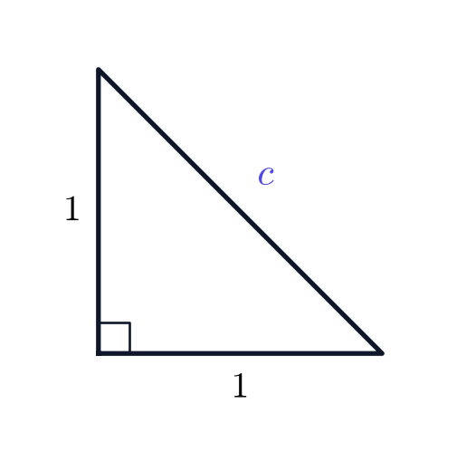
הצגת הפתרון
לפי משפט פיתגורס, \(,a^2 + b^2 = c^2\) כאשר \(a\) ו-\(b\) הם אורכי הניצבים ו-\(c\) הוא אורך היתר. לכן \[\begin{aligned} c &= \sqrt{a^2 + b^2} \\ &= \sqrt{1^2 + 1^2} \\ &= \sqrt{2} \end{aligned}\] מטרים.
מקרה נפוץ נוסף: מעגל שרדיוסו \(.1\) ההיקף שלו הוא \(,2\pi\) והשטח שלו הוא \(.\pi\)
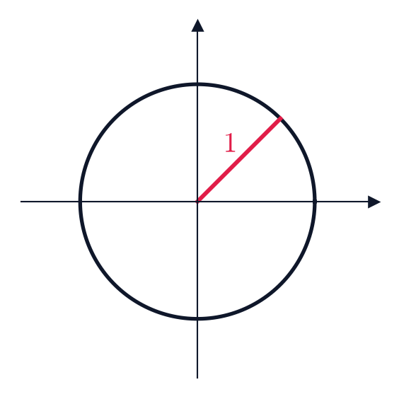
משפט 1.1.9 — יש מספרים שאינם רציונליים.
המספרים \(\sqrt{2}\) ו-\(\pi\) אינם רציונליים: אין שבר \(\frac{m}{n}\) ששווה להם בדיוק. מספר שאינו רציונלי נקרא אי-רציונלי.
לגבי \(,\sqrt{2}\) פירוש הדבר שאין מספרים שלמים \(m\) ו-\(n\) כך ש-\(.2 = \frac{m^2}{n^2} = \frac{m}{n} \cdot \frac{m}{n}\) כלומר: יש אורכים, כמו היתר שלמעלה, שאי אפשר למדוד במספר רציונלי של מטרים.
קריאת רשות: למה \(\sqrt{2}\) אינו רציונלי?
הוכחה.
הרעיון. נניח לרגע ש-\(\sqrt{2}\) כן רציונלי, ונמשיך לחשוב מתוך ההנחה הזו עד שנגיע למשהו שלא ייתכן. אם הנחה מובילה לדבר בלתי אפשרי, ההנחה עצמה שגויה. לדרך הזו קוראים הוכחה בדרך השלילה. נתקדם צעד אחר צעד.
ההנחה. נניח ש-\(\sqrt{2}\) הוא שבר: \(,\sqrt{2} = \frac{m}{n}\) כאשר \(m\) ו-\(n\) מספרים טבעיים. (מכיוון ש-\(\sqrt{2}\) חיובי, אפשר לבחור את המונה ואת המכנה חיוביים.)
מצמצמים. כל שבר אפשר לצמצם עד שלמונה ולמכנה אין גורם משותף, למשל \(.\frac{6}{4} = \frac{3}{2}\) נניח שכבר צמצמנו את \(.\frac{m}{n}\) מכל מה שנובע מזה, נשתמש רק בדבר אחד: \(m\) ו-\(n\) אינם שניהם זוגיים, כי אחרת היה אפשר לצמצם עוד פעם ב-\(.2\) כדאי לזכור את המשפט הזה: איתו נגיע לסתירה.
נפטרים מהשורש. עם שורש קשה לעבוד, ולכן נעלה את שני האגפים בריבוע, ואז נכפול ב-\(:n^2\) \[\begin{aligned} \sqrt{2} &= \frac{m}{n} \\ 2 &= \frac{m^2}{n^2} \\ 2n^2 &= m^2 \end{aligned}\] במשוואה \(m^2 = 2n^2\) יש רק מספרים טבעיים. היא אומרת ש-\(m^2\) הוא פעמיים מספר טבעי, כלומר \(m^2\) זוגי.
אם \(m^2\) זוגי, גם \(m\) זוגי. נבדוק מה קורה לריבוע של מספר אי-זוגי: \(,3^2 = 9\) \(,5^2 = 25\) \(.7^2 = 49\) תמיד יוצא אי-זוגי. הסיבה: מספר אי-זוגי הוא מספר זוגי ועוד \(,1\) כלומר \(,2j + 1\) ו-\[\begin{aligned} (2j + 1)^2 &= 4j^2 + 4j + 1 \\ &= 2(2j^2 + 2j) + 1 \end{aligned}\] שוב מספר זוגי ועוד \(.1\) לכן אילו \(m\) היה אי-זוגי, גם \(m^2\) היה אי-זוגי. אבל \(m^2\) זוגי, ולכן \(m\) זוגי: \(m = 2k\) עבור מספר טבעי \(.k\)
עכשיו תורו של \(n\). נציב \(m = 2k\) במשוואה \(:2n^2 = m^2\) \[\begin{aligned} 2n^2 &= (2k)^2 \\ 2n^2 &= 4k^2 \\ n^2 &= 2k^2 \end{aligned}\] זו בדיוק אותה תמונה כמו בצעד 3, רק עם \(n\) במקום \(m\): \(n^2\) הוא פעמיים מספר טבעי, ולכן זוגי. לפי הצעד הקודם, גם \(n\) זוגי.
הסתירה. גילינו ש-\(m\) ו-\(n\) שניהם זוגיים. אבל בצעד 2 צמצמנו את השבר, כך שהם אינם שניהם זוגיים. שני הדברים לא יכולים להיות נכונים יחד. מה השתבש? כל צעד בדרך היה חישוב נכון, והדבר היחיד שהנחנו בלי לבדוק הוא ש-\(\sqrt{2}\) רציונלי. לכן ההנחה הזו שגויה: \(\sqrt{2}\) אינו רציונלי.
לחשוב: אם נחליף בהוכחה את \(2\) ב-\(,4\) האם נקבל ש-\(\sqrt{4}\) אי-רציונלי?
לא, וטוב שכך, כי \(.\sqrt{4} = 2 = \frac{2}{1}\) ההוכחה נשברת בצעד 5: מ-\(m^2 = 4n^2\) ו-\(m = 2k\) מקבלים \(,4k^2 = 4n^2\) כלומר \(.k^2 = n^2\) מזה לא נובע ש-\(n\) זוגי, ולכן אין סתירה. ההוכחה עבור \(\sqrt{2}\) משתמשת בכך ש-\(2\) מופיע פעם אחת בצד של \(:n^2\) אחרי הצמצום ב-\(2\) נשאר \(,n^2 = 2k^2\) וזה מכריח את \(n\) להיות זוגי.
\(\sqrt{2}\) אינו מקרה יוצא דופן. הכלל הבא נותן אינסוף דוגמאות נוספות:
משפט 1.1.10 — שורשים אי-רציונליים.
יהיו \(n\) ו-\(k \ge 2\) מספרים טבעיים. אם אין מספר טבעי \(m\) שמקיים \(,m^k = n\) אז \(\sqrt[k]{n}\) אי-רציונלי.
במילים: אם השורש של מספר טבעי אינו יוצא מספר טבעי, הוא בכלל לא יוצא שבר.
דוגמה 1.1.11 — רציונלי או אי-רציונלי?
בכל סעיף, קבעו אם המספר רציונלי. אם כן, כתבו כמה הוא שווה.
(א) \(\sqrt{3}\)
אי-רציונלי. \(1^2 = 1\) ו-\(,2^2 = 4\) ולכן אין מספר טבעי שהריבוע שלו הוא \(.3\) לפי הכלל, \(\sqrt{3}\) אי-רציונלי.
(ב) \(\sqrt{9}\)
רציונלי, ואפילו טבעי. כמה הוא שווה?
\(\sqrt{9} =\) \(3\)
\(,3^2 = 9\) ולכן \(.\sqrt{9} = 3\)
(ג) \(\sqrt{7}\)
אי-רציונלי. \(2^2 = 4\) ו-\(,3^2 = 9\) ו-\(7\) נמצא ביניהם, ולכן אין מספר טבעי שהריבוע שלו הוא \(.7\)
(ד) \(\sqrt[3]{2}\)
אי-רציונלי. אין מספר טבעי שהחזקה השלישית שלו היא \(2\): \(1^3 = 1\) ו-\(,2^3 = 8\) ובין \(1\) ל-\(2\) אין מספר טבעי.
(ה) \(\sqrt{10}\)
אי-רציונלי. \(3^2 = 9\) ו-\(,4^2 = 16\) ולכן אין מספר טבעי שהריבוע שלו הוא \(.10\)
(ו) \(\sqrt[3]{8}\)
רציונלי, ואפילו טבעי. כמה הוא שווה?
\(\sqrt[3]{8} =\) \(2\)
\(,2^3 = 8\) ולכן \(.\sqrt[3]{8} = 2\)
הגדרה 1.1.12 — המספרים הממשיים.
המספרים הרציונליים והאי-רציונליים יחד הם המספרים הממשיים, שמסומנים \(.\mathbb{R}\)
קיבלנו שרשרת של מערכות מספרים, שכל אחת מכילה את הקודמת: כל מספר טבעי הוא גם מספר שלם, כל מספר שלם הוא גם מספר רציונלי, וכל מספר רציונלי הוא גם מספר ממשי.
הישר הממשי
איך אפשר “לראות” את המספרים הממשיים? נדמיין ישר אינסופי בשני הכיוונים. נבחר עליו נקודה ונקרא לה \(,0\) ונבחר נקודה מימין ל-\(0\) ונקרא לה \(.1\)
- כל מספר הוא נקודה על הישר.
- מספרים שמימין ל-\(0\) נקראים חיוביים, ומספרים שמשמאל ל-\(0\) נקראים שליליים.
- “קפיצות” באורך \(1\) מ-\(0\) מגיעות אל המספרים השלמים.
- “קפיצות” באורך \(,\frac{1}{n}\) עבור \(n\) טבעי, מגיעות אל המספרים הרציונליים.
- שאר הנקודות הן המספרים האי-רציונליים.
כל הנקודות על הישר יחד הן המספרים הממשיים, ולכן הישר נקרא הישר הממשי.
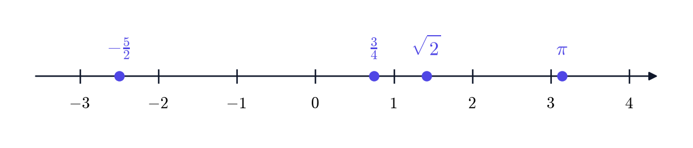
גם \(\sqrt{2}\) הוא נקודה על הישר. נניח ריבוע שאורך צלעו \(1\) כך שהצלע התחתונה שלו מחברת את \(0\) ל-\(,1\) ונסובב את האלכסון שלו, שאורכו \(,\sqrt{2}\) סביב הנקודה \(0\) עד שהוא שוכב על הישר. הקצה שלו יסמן את המקום של \(.\sqrt{2}\) אם נסמן על הישר רק את המספרים הרציונליים, יישאר בו “חור” בדיוק במקום הזה. המספרים הממשיים ממלאים את כל החורים.
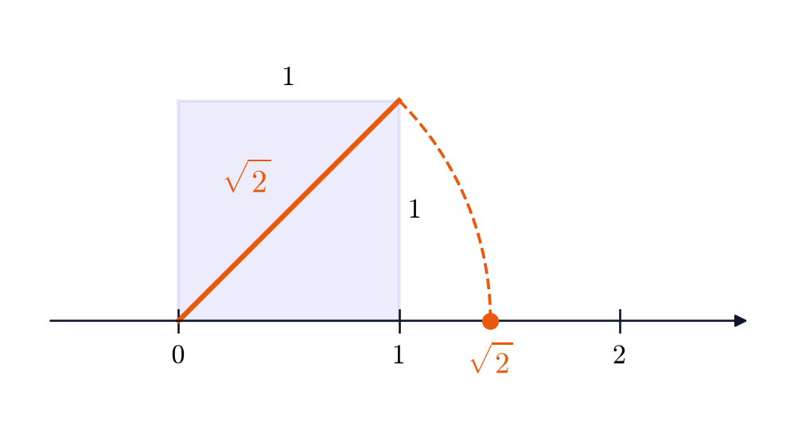
על הישר קל להשוות מספרים: מי שמימין גדול יותר.
הגדרה 1.1.13 — סדר.
יהיו \(x\) ו-\(y\) מספרים ממשיים. אם הנקודה \(x\) נמצאת מימין לנקודה \(,y\) נאמר ש-\(x\) גדול מ-\(,y\) ונסמן \(.x > y\) במקרה כזה נאמר גם ש-\(y\) קטן מ-\(,x\) ונסמן \(.y < x\)
אם \(x > y\) או \(,x = y\) נסמן \(,x \ge y\) ובאופן דומה \(.y \le x\)
דוגמה 1.1.14 — מי מימין?
בכל סעיף, איזה מהמספרים גדול יותר? היעזרו בישר: כל זוג מסומן בו בצבע משלו.
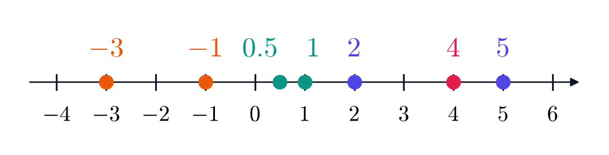
(א) \(5\) לעומת \(2\)
\(,5 > 2\) כי \(5\) מימין ל-\(.2\)
(ב) \(-1\) לעומת \(-3\)
\(,-1 > -3\) כי \(-1\) מימין למספר \(.{-}3\) בין שני מספרים שליליים, הגדול הוא זה שקרוב יותר ל-\(.0\)
(ג) \(1\) לעומת \(0.5\)
\(,1 > 0.5\) כי \(1\) מימין ל-\(.0.5\)
(ד) \(4 \ge 4\)
נכון: \(4 \ge 4\) פירושו \(4 > 4\) או \(,4 = 4\) והשוויון מתקיים.
(ה) \(4 > 4\)
לא נכון: מספר אינו מימין לעצמו.
בדיקה עצמית.
איזה מספר גדול יותר: \(-7\) או \(?{-}2\)
\(,-2 > -7\) כי \(-2\) מימין ל-\(.{-}7\) לא מסתכלים על ה”גודל” של הספרה 7: בין שני מספרים שליליים, הגדול הוא זה שקרוב יותר ל-\(.0\)
סיכום.
- הטבעיים \(\mathbb{N}\) משמשים לספירה. השלמים \(\mathbb{Z}\) מוסיפים את \(0\) ואת השליליים. הרציונליים \(\mathbb{Q}\) הם השברים \(\frac{m}{n}\) עם \(.n \neq 0\)
- חילוק הוא כפל בהופכי. אסור לחלק באפס.
- יש אורכים שאינם רציונליים, כמו \(\sqrt{2}\) ו-\(.\pi\) אם השורש של מספר טבעי אינו יוצא טבעי, הוא אי-רציונלי.
- הממשיים \(\mathbb{R}\) הם כל הנקודות על הישר הממשי, ו-\(x > y\) פירושו ש-\(x\) מימין ל-\(.y\)
תרגילים
שאלה 1.1.15 — רציונלי? ואם כן, איזה שבר?
קבעו אם כל מספר רציונלי. את המספרים הרציונליים כתבו כשבר מצומצם (מספר שלם אפשר לכתוב כמו שהוא).
(א) \(1.25\)
רציונלי. כתבו אותו כשבר:
\(1.25 =\) \(\frac{5}{4}\)
שתי ספרות אחרי הנקודה הן מאיות: \(.1.25 = \frac{125}{100}\) עכשיו צמצמו.
\[.1.25 = \frac{125}{100} = \frac{5}{4}\] (צמצמנו ב-\(25\).)
(ב) \(\sqrt{9}\)
רציונלי, ואפילו טבעי. כמה הוא שווה?
\(\sqrt{9} =\) \(3\)
\(,3^2 = 9\) ולכן \(,\sqrt{9} = 3\) ו-\(.3 = \frac{3}{1}\)
(ג) \(\sqrt{7}\)
אי-רציונלי: אין מספר טבעי שהריבוע שלו הוא \(7\) (כי \(2^2 = 4\) ו-\(3^2 = 9\)), ולכן לפי משפט 1.1.10 \(\sqrt{7}\) אי-רציונלי.
(ד) \(-\frac{6}{3}\)
רציונלי, כי הוא כתוב כשבר של שני שלמים. כתבו אותו בצורה מצומצמת:
\(-\frac{6}{3} =\) \(-2\)
\(.{-}\frac{6}{3} = -\frac{2 \cdot 3}{3} = -2\)
שאלה 1.1.16 — מהקטן אל הגדול.
סדרו את המספרים מהקטן אל הגדול.
\(-3\)
\(-1.5\)
\(-\frac{1}{2}\)
\(0\)
\(0.4\)
\(\frac{3}{4}\)
\(2\)
על הישר הממשי המספרים מופיעים בדיוק בסדר הזה, משמאל לימין. בין שני מספרים שליליים, הקטן הוא זה שרחוק יותר מ-\(:0\) \(.{-}3 < -1.5 < -\frac{1}{2}\) ובין החיוביים: \(,0.4 < \frac{3}{4}\) כי \(.\frac{3}{4} = 0.75\)
שאלה 1.1.17 — הופכיים.
חשבו.
(א) \((0.2)^{-1} =\) \(5\)
(ב) \(\left(-\frac{2}{7}\right)^{-1} =\) \(-\frac{7}{2}\)
(ג) \(1^{-1} =\) \(1\)
(ד) \(\left(\frac{1}{9}\right)^{-1} =\) \(9\)
כתבו כל מספר כשבר, והפכו את המונה והמכנה. למשל \(.0.2 = \frac{2}{10} = \frac{1}{5}\)
(א) \(,0.2 = \frac{1}{5}\) ולכן ההופכי הוא \(,5\) ובאמת \(.0.2 \cdot 5 = 1\)
(ב) הופכים את השבר, והסימן נשאר: \(,-\frac{7}{2}\) כי \(.\left(-\frac{2}{7}\right) \cdot \left(-\frac{7}{2}\right) = 1\)
(ג) \(,1 \cdot 1 = 1\) ולכן \(1\) הוא ההופכי של עצמו.
(ד) \(,\frac{1}{9} \cdot 9 = 1\) ולכן ההופכי הוא \(.9\)
שאלה 1.1.18 — חילוק בעזרת הופכי.
חשבו בעזרת הכלל “חילוק הוא כפל בהופכי”. (שבר כותבים עם קו נטוי, למשל 15/8.)
(א) \(\frac{3}{4} : \frac{2}{5} =\) \(\frac{15}{8}\)
(ב) \(6 : \frac{1}{3} =\) \(18\)
(ג) \(\frac{1}{2} : 4 =\) \(\frac{1}{8}\)
(א) ההופכי של \(\frac{2}{5}\) הוא \(,\frac{5}{2}\) ולכן \[\begin{aligned} \frac{3}{4} : \frac{2}{5} &= \frac{3}{4} \cdot \frac{5}{2} \\ &= \frac{15}{8}. \end{aligned}\]
(ב) \(.6 \cdot 3 = 18\) (בכל שקל יש שלושה “שלישים של שקל”, ובשישה שקלים יש \(18\).)
(ג) ההופכי של \(4\) הוא \(,\frac{1}{4}\) ולכן התוצאה היא \(.\frac{1}{2} \cdot \frac{1}{4} = \frac{1}{8}\)
שאלה 1.1.19 — משבר עשרוני לשבר.
כתבו כל מספר כשבר מצומצם.(בשדה: מונה, קו נטוי ומכנה, למשל 3/4.)
(א) \(0.75 =\) \(\frac{3}{4}\)
(ב) \(2.4 =\) \(\frac{12}{5}\)
(ג) \(-0.125 =\) \(-\frac{1}{8}\)
ספרה אחת אחרי הנקודה היא עשיריות, שתיים מאיות ושלוש אלפיות. אחר כך מצמצמים.
\[\begin{aligned} 0.75 &= \frac{75}{100} = \frac{3}{4} \\ 2.4 &= \frac{24}{10} = \frac{12}{5} \\ -0.125 &= -\frac{125}{1000} = -\frac{1}{8} \end{aligned}\] בשורה הראשונה צמצמנו ב-\(,25\) בשנייה ב-\(,2\) ובשלישית ב-\(.125\)
שאלה 1.1.20 — רציונלי או לא?
(א) \(\sqrt{16}\)
רציונלי, ואפילו טבעי. כמה הוא שווה?
\(\sqrt{16} =\) \(4\)
\(.4^2 = 16\)
(ב) \(\sqrt{12}\)
\(3^2 = 9\) ו-\(,4^2 = 16\) ולכן אין מספר טבעי שהריבוע שלו \(.12\) לפי משפט 1.1.10 \(\sqrt{12}\) אי-רציונלי.
(ג) \(\sqrt[3]{27}\)
רציונלי, ואפילו טבעי. כמה הוא שווה?
\(\sqrt[3]{27} =\) \(3\)
\(.3^3 = 27\)
(ד) \(\sqrt[3]{20}\)
\(2^3 = 8\) ו-\(,3^3 = 27\) ולכן אין מספר טבעי שהחזקה השלישית שלו היא \(.20\) השורש אי-רציונלי.
(ה) \(\sqrt{\frac{1}{4}}\)
רציונלי. הכלל על שורשים מדבר רק על שורשים של מספרים טבעיים, ו-\(\frac{1}{4}\) אינו טבעי. כמה הוא שווה?
\(\sqrt{\frac{1}{4}} =\) \(\frac{1}{2}\)
\(,\frac{1}{2} \cdot \frac{1}{2} = \frac{1}{4}\) ולכן \(,\sqrt{\frac{1}{4}} = \frac{1}{2}\) וזה שבר.
שאלה 1.1.21 — מוגדר או לא?
(א) \(\frac{0}{5}\)
מוגדר: המכנה הוא \(,5\) ולכן מותר לחלק. כמה הוא שווה?
\(\frac{0}{5} =\) \(0\)
\(,5 \cdot 0 = 0\) ולכן \(.\frac{0}{5} = 0\)
(ב) \(\frac{3 - 3}{2 - 2}\)
המכנה הוא \(,2 - 2 = 0\) ולכן הביטוי אינו מוגדר. זה \(,\frac{0}{0}\) ואינו מספר.
(ג) \(\frac{2 - 2}{3}\)
מוגדר: המכנה הוא \(,3\) ולא \(.0\) כמה הוא שווה?
\(\frac{2 - 2}{3} =\) \(0\)
המונה הוא \(,2 - 2 = 0\) ולכן \(.\frac{0}{3} = 0\)
1.2 קבוצות וקטעים
מה עושים כאן? לומדים לדבר על אוספים של מספרים: מי שייך לאוסף, איך רושמים אותו, ואיך מחברים שני אוספים. בסוף נכיר את האוספים הנפוצים ביותר על הישר הממשי: קטעים.
הגדרה 1.2.1 — קבוצה.
אוסף של אובייקטים מתמטיים נקרא קבוצה, והאובייקטים שבה נקראים האיברים של הקבוצה.
חשוב לזכור — קבוצה היא קופסה.
אפשר לחשוב על קבוצה כעל קופסה שיש בה פריטים: הפריטים שבקופסה הם האיברים של הקבוצה.
כבר פגשנו ארבע קבוצות של מספרים: \(\mathbb{N}\) (הטבעיים), \(\mathbb{Z}\) (השלמים), \(\mathbb{Q}\) (הרציונליים) ו-\(\mathbb{R}\) (הממשיים). נצטרך קבוצות גם כדי לתאר אוספים אחרים של מספרים, למשל את כל הפתרונות של אי-שוויון, או את כל המספרים שבהם נוסחה מוגדרת.
הגדרה 1.2.2 — שייכות.
אם \(x\) הוא איבר של הקבוצה \(,A\) אומרים ש-\(x\) שייך ל-\(A\) ומסמנים \(.x \in A\) אחרת, אומרים ש-\(x\) אינו שייך ל-\(A\) ומסמנים \(.x \notin A\)
דוגמה 1.2.3 — נכון או לא נכון?
(א) \(2 \in \mathbb{N}\)
נכון, כי \(2\) הוא מספר טבעי.
(ב) \(-3 \in \mathbb{N}\)
לא נכון, כי \(-3\) אינו מספר טבעי. לכן \(.{-}3 \notin \mathbb{N}\)
(ג) \(\sqrt{2} \in \mathbb{Q}\)
לא נכון, כי \(\sqrt{2}\) אינו רציונלי. לכן \(.\sqrt{2} \notin \mathbb{Q}\)
(ד) \(4 \in \mathbb{Q}\)
נכון, כי \(4\) שלם, וכל מספר שלם הוא רציונלי.
(ה) \(\mathbb{N} \in \mathbb{Z}\)
לא נכון. \(\mathbb{N}\) הוא אוסף של מספרים ולא מספר בעצמו, ולכן הוא אינו איבר של קבוצת המספרים השלמים.
רישום של קבוצות
הגדרה 1.2.4 — רישום של קבוצות.
- רשימה: רושמים את האיברים בתוך סוגריים מסולסלים. למשל, \(\{1, 3, 5\}\) היא הקבוצה שהאיברים שלה הם \(1\), \(3\) ו-\(.5\)
- תנאי: כאשר הקבוצה גדולה או אינסופית, רושמים אותה בעזרת תנאי: \(\{x \mid P(x)\}\) היא קבוצת כל ה-\(x\) שמקיימים את התנאי \(,P(x)\) שכתוב אחרי הקו. את הקו האנכי קוראים “כך ש”. לרישום כזה קוראים שיטת השומר.
אפשר לדמיין שומר בכניסה לקבוצה: הוא בודק כל מועמד \(x\) מול התנאי, ומכניס רק את מי שעומד בו.
דוגמה 1.2.5 — שיטת השומר.
(א) איך קוראים את הקבוצה \(\{x \in \mathbb{R} \mid x > 0\}\)? אילו מספרים יש בה?
תשובה לסעיף (א)
קוראים: “קבוצת כל ה-\(x\) הממשיים כך ש-\(x\) גדול מ-\(0\)”. זו קבוצת המספרים הממשיים החיוביים.
(ב) רשמו בשיטת השומר את קבוצת המספרים הטבעיים שגדולים מ-\(3\) וקטנים מ-\(.1000\)
תשובה לסעיף (ב)
\[.\{n \in \mathbb{N} \mid 3 < n < 1000\}\] לרשום את כל \(995\) האיברים ברשימה היה ארוך מאוד; התנאי עושה את זה בשורה אחת.
(ג) רשמו את הקבוצה כרשימה. (בשדה כותבים סוגריים מסולסלים, למשל {5,6}.)
\(\{x \in \mathbb{Z} \mid 0 < x < 4\} =\) \(\{1, 2, 3\}\)
אלה המספרים השלמים שגדולים מ-\(0\) וקטנים מ-\(,4\) כלומר \(1\), \(2\) ו-\(.3\)
שוויון קבוצות
הגדרה 1.2.6 — שוויון קבוצות.
שתי קבוצות \(A\) ו-\(B\) שוות, ומסמנים \(,A = B\) אם יש להן בדיוק אותם איברים.
כלל — סדר וכפילויות אינם משנים.
הסדר שבו רושמים את האיברים, ומספר הפעמים שרושמים כל איבר, אינם משנים את הקבוצה: \[.\{1, 2, 3\} = \{3, 1, 2\} = \{1, 1, 2, 3, 3, 3\}\]
בשפה של קופסאות: בניגוד לקופסה אמיתית, בקופסה שמייצגת קבוצה לא יכולים להיות שני פריטים זהים. לכן שתי הקבוצות שבציור שוות: בכל אחת מהן יש איבר אחד, שקל אחד, ולא עשרה שקלים (לצערנו).
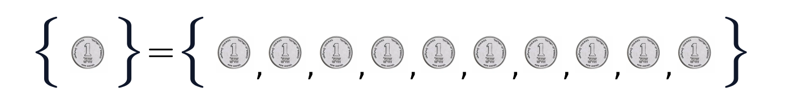
שימו לב — הקופסה אינה הפריט.
קופסה שיש בה פריט אינה הפריט עצמו. לכן \(:\{3\} \neq 3\) מצד אחד יש לנו את המספר \(,3\) ומצד שני קבוצה שהאיבר היחיד שלה הוא \(.3\) זה מקור נפוץ לבלבול.
בדיקה עצמית.
(א) \(\{1, 2\} = \{2, 1, 1\}\)
נכון. בשתי הקבוצות יש בדיוק אותם איברים, \(1\) ו-\(,2\) והסדר והכפילויות אינם משנים.
(ב) \(\{1, 2\} = \{1, 2, 3\}\)
לא נכון. \(3\) שייך לקבוצה השנייה ואינו שייך לראשונה. מספיק איבר אחד כזה כדי שהקבוצות לא יהיו שוות.
הכלה
הגדרה 1.2.7 — הכלה.
אומרים שהקבוצה \(A\) מוכלת בקבוצה \(B\) אם כל איבר של \(A\) הוא גם איבר של \(,B\) ומסמנים \(.A \subseteq B\) אם \(A\) אינה מוכלת ב-\(,B\) מסמנים \(.A \nsubseteq B\)
אם \(A \subseteq B\) ויש ב-\(B\) איברים שאינם ב-\(,A\) אומרים ש-\(A\) מוכלת ממש ב-\(B\) ומסמנים \(.A \subset B\)
בשפה של קופסאות: \(A \subseteq B\) אם כל פריט שבקופסה \(A\) נמצא גם בקופסה \(.B\)
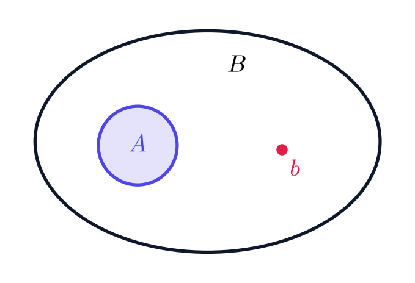
למשל, כל מספר טבעי הוא שלם, כל מספר שלם הוא רציונלי וכל מספר רציונלי הוא ממשי. בסימן \(\subseteq\) אפשר לכתוב את זה בקצרה: \[.\mathbb{N} \subseteq \mathbb{Z} \subseteq \mathbb{Q} \subseteq \mathbb{R}\]
הערה 1.2.8 — שימו לב.
- \(,\mathbb{N} \subseteq \mathbb{Z}\) ואפילו \(.\mathbb{N} \subset \mathbb{Z}\)
- אם \(,A \subset B\) אז גם \(.A \subseteq B\) הכיוון ההפוך אינו נכון בהכרח.
- כל קבוצה מוכלת בעצמה: \(.\mathbb{Z} \subseteq \mathbb{Z}\) אבל \(,\mathbb{Z} \not\subset \mathbb{Z}\) כי אין ב-\(\mathbb{Z}\) איבר שאינו ב-\(.\mathbb{Z}\)
דוגמה 1.2.9 — הכלה.
נניח \[.B = \{1, 3, 5\}, \qquad A = \{1, 3\}, \qquad C = \{2, 3\}\] נכון או לא נכון?
(א) \(A \subseteq B\)
נכון, כי כל איבר של \(A\) הוא איבר של \(.B\)
(ב) \(C \subseteq B\)
לא נכון: \(,C \nsubseteq B\) כי \(2\) הוא איבר של \(C\) שאינו איבר של \(.B\)
(ג) \(B \subseteq B\)
נכון, כי כל קבוצה מוכלת בעצמה.
(ד) \(A \subset B\)
נכון, כי \(A \subseteq B\) ויש ב-\(B\) איבר, \(,5\) שאינו ב-\(.A\)
(ה) \(B \subset B\)
לא נכון: \(,B \not\subset B\) כי אין ב-\(B\) איבר שאינו ב-\(.B\)
הגדרה 1.2.10 — הקבוצה הריקה.
הקבוצה שאין בה איברים נקראת הקבוצה הריקה, ומסומנת \(.\emptyset\) אפשר לכתוב אותה גם כ-\(\{\,\}\) (קופסה ריקה), אם כי הסימון \(\emptyset\) נפוץ יותר.
שימו לב — מוכל או שייך.
חשוב לא לבלבל: מוכל (\(\subseteq\)) הוא יחס בין שתי קבוצות, ושייך (\(\in\)) הוא יחס בין איבר לקבוצה. למשל:
- \(3 \in \mathbb{N}\) נכון: \(3\) הוא איבר של \(.\mathbb{N}\)
- \(3 \subseteq \mathbb{N}\) שגוי: \(3\) הוא מספר ולא קבוצה, ולכן אין משמעות לשאלה אם הוא “מוכל”. זו טעות נפוצה.
- \(\{3\} \subseteq \mathbb{N}\) נכון: הקבוצה שהאיבר היחיד שלה הוא \(3\) היא חלק מ-\(.\mathbb{N}\)
- \(\{3\} \notin \{1, 2, 3\}\): האיברים של \(\{1, 2, 3\}\) הם \(1\), \(2\) ו-\(,3\) ואף אחד מהם אינו הקבוצה \(.\{3\}\) לעומת זאת, \(.\{3\} \subseteq \{1, 2, 3\}\)
- \(A \subseteq B\) אינו אומר ש-\(.A \in B\)
דוגמה 1.2.11 — גם שייך וגם מוכל.
נניח \[.A = \{3\}, \qquad B = \{3, \{3\}\}\] האם \(A \in B\)? והאם \(?A \subseteq B\)
הצגת הפתרון
שניהם נכונים!
- \(,A \in B\) כי \(\{3\}\) הוא אחד האיברים של \(.B\)
- \(,A \subseteq B\) כי האיבר היחיד של \(,A\) המספר \(,3\) שייך ל-\(.B\)
פעולות על קבוצות
הגדרה 1.2.12 — איחוד.
יהיו \(A\) ו-\(B\) קבוצות. האיחוד של \(A\) ו-\(,B\) שמסומן \(A \cup B\) (קוראים “\(A\) איחוד \(B\)”), הוא קבוצת כל האיברים ששייכים ל-\(A\) או ל-\(B\) (או לשתיהן).
בשפה של קופסאות: איחוד הוא כמו לפתוח את שתי הקופסאות \(A\) ו-\(B\) ולשפוך את כל התוכן שלהן לקופסה שלישית. פריט שהיה בשתי הקופסאות מופיע בקופסה החדשה פעם אחת בלבד, כי בקופסה של קבוצה אין שני פריטים זהים.
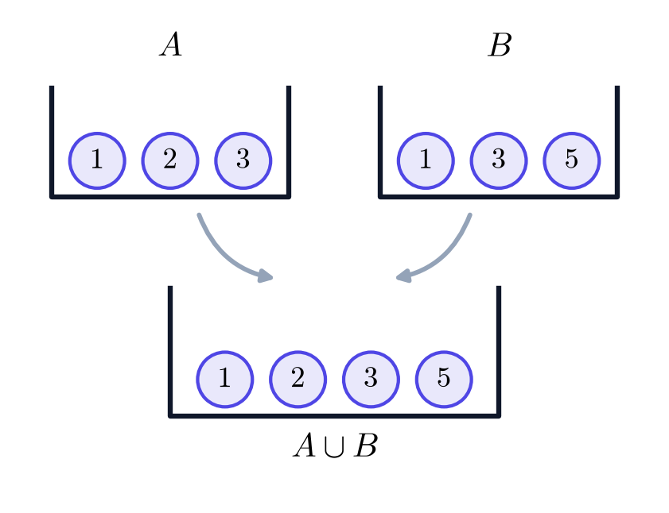
דוגמה 1.2.13 — איחוד.
נניח \(A = \{1, 2, 3\}\) ו-\(.B = \{1, 3, 5\}\) מהו \(?A \cup B\)
\(A \cup B =\) \(\{1, 2, 3, 5\}\)
שופכים את שתי הקופסאות לקופסה אחת. אפשר גם לרשום \(,A \cup B = \{1, 3, 5, 1, 2, 3\}\) וזו אותה קבוצה, כי הסדר והכפילויות אינם משנים.
הגדרה 1.2.14 — חיתוך.
יהיו \(A\) ו-\(B\) קבוצות. החיתוך של \(A\) ו-\(,B\) שמסומן \(,A \cap B\) הוא קבוצת כל האיברים ששייכים גם ל-\(A\) וגם ל-\(.B\)
את החיתוך נוח יותר לצייר כשני אזורים שחופפים זה לזה: כל קבוצה היא אזור, והחיתוך הוא החלק המשותף לשני האזורים.
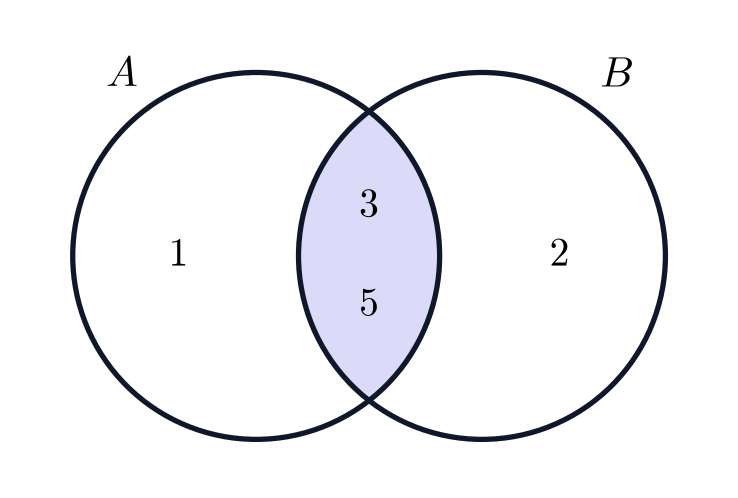
דוגמה 1.2.15 — איחוד וחיתוך.
נניח \[.A = \{1, 3, 5\}, \qquad B = \{2, 3, 5\}, \qquad C = \{2, 4\}\] חשבו. (לקבוצה הריקה כותבים {} או בכפתור ∅.)
- \(A \cap B =\) \(\{3, 5\}\)
- \(A \cup B =\) \(\{1, 2, 3, 5\}\)
- \(A \cap C =\) \(\emptyset\)
- \(A \cup C =\) \(\{1, 2, 3, 4, 5\}\)
- \(B \cap C =\) \(\{2\}\)
- \(B \cup C =\) \(\{2, 3, 4, 5\}\)
ל-\(A\) ול-\(C\) אין אף איבר משותף, ולכן החיתוך שלהן ריק: \(.A \cap C = \{\,\} = \emptyset\) בכל האיחודים, איבר שמופיע בשתי הקבוצות נרשם פעם אחת.
בדיקה עצמית.
מהו \(?\{1, 2\} \cap \{3, 4\}\)
אין איבר ששייך לשתי הקבוצות, ולכן החיתוך הוא הקבוצה הריקה. שימו לב: \(\{0\}\) אינה ריקה, יש בה איבר אחד, המספר \(.0\) והקבוצה \(\{1, 2, 3, 4\}\) היא האיחוד, לא החיתוך.
קטעים
הקבוצות החשובות ביותר על הישר הן קטעים: כל המספרים שבין שתי נקודות.
הגדרה 1.2.16 — קטעים.
יהיו \(a < b\) מספרים ממשיים. נגדיר:
| סימון | הקבוצה | שם |
|---|---|---|
| \((a, b)\) | \(\{x \mid a < x < b\}\) | קטע פתוח |
| \([a, b]\) | \(\{x \mid a \le x \le b\}\) | קטע סגור |
| \([a, b)\) | \(\{x \mid a \le x < b\}\) | קטע חצי-פתוח |
| \((a, b]\) | \(\{x \mid a < x \le b\}\) | קטע חצי-פתוח |
| \((a, \infty)\) | \(\{x \mid x > a\}\) | קרן פתוחה |
| \([a, \infty)\) | \(\{x \mid x \ge a\}\) | קרן סגורה |
| \((-\infty, b)\) | \(\{x \mid x < b\}\) | קרן פתוחה |
| \((-\infty, b]\) | \(\{x \mid x \le b\}\) | קרן סגורה |
סוגר עגול פירושו שנקודת הקצה אינה שייכת לקטע, וסוגר מרובע פירושו שהיא כן שייכת. גם הישר כולו הוא קטע: \(.\mathbb{R} = (-\infty, \infty)\)
שימו לב — אינסוף אינו מספר.
הסימן \(\infty\) אינו מספר, ואי אפשר “להגיע” אליו. לכן ליד \(\infty\) או \(-\infty\) הסוגר תמיד עגול: כותבים \([2, \infty)\) ולא \(.[2, \infty]\)
סרטוט קטעים
מסרטטים קטע על הישר הממשי כקו מודגש בין שני הקצוות שלו. בכל קצה מסמנים עיגול:
- עיגול מלא: הקצה שייך לקטע (בסימון: סוגר מרובע).
- עיגול ריק: הקצה אינו שייך לקטע (בסימון: סוגר עגול).
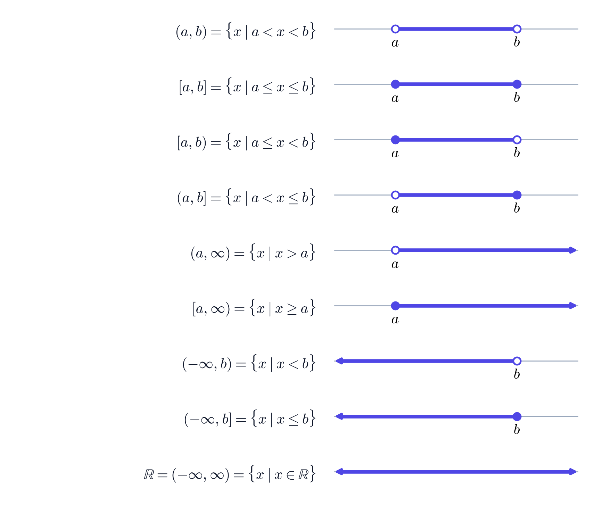
דוגמה 1.2.17 — סרטוט קטע חצי-פתוח.
סרטטו את הקטע החצי-פתוח \[.[-1, 3) = \{x \mid -1 \le x < 3\}\] באיזה קצה העיגול מלא, ובאיזה ריק?
הצגת הפתרון
- הקצה \(-1\) שייך לקטע, כי \(,-1 \le x\) ולכן מסמנים אותו בעיגול מלא.
- הקצה \(3\) אינו שייך לקטע, כי \(,x < 3\) ולכן מסמנים אותו בעיגול ריק.
- כל הנקודות שביניהם שייכות לקטע, ולכן מדגישים את כל הקו שבין שני העיגולים.
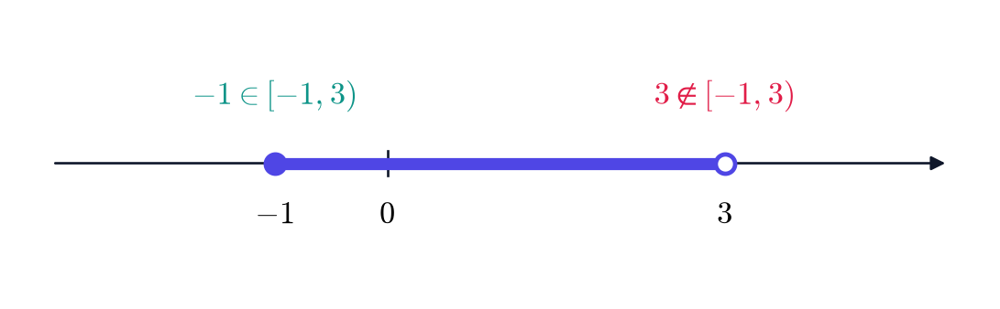
באותו אופן מסרטטים קרניים: קצה ששייך לקרן מסומן בעיגול מלא, וקצה שאינו שייך בעיגול ריק.
דוגמה 1.2.18 — קרניים.
אילו מהקרניים הבאות פתוחות, ואילו סגורות? \[\begin{aligned} (3, \infty) &= \{x \mid x > 3\}, & [8, \infty) &= \{x \mid x \ge 8\}, \\ (-\infty, 4) &= \{x \mid x < 4\}, & (-\infty, 15] &= \{x \mid x \le 15\}. \end{aligned}\]
הצגת הפתרון
הקרניים \((3, \infty)\) ו-\((-\infty, 4)\) פתוחות: הן אינן מכילות את הקצה. הקרניים \([8, \infty)\) ו-\((-\infty, 15]\) סגורות: הן מכילות את הקצה.
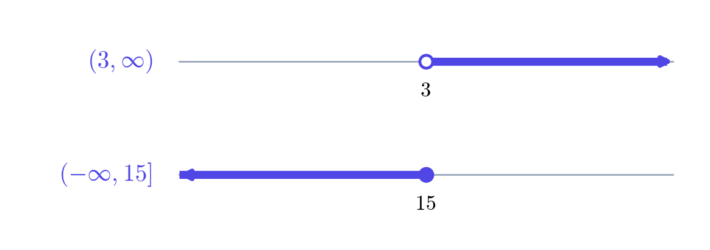
בדיקה עצמית.
(א) האם \(?3 \in [-1, 3)\)
לא. הסוגר ליד \(3\) עגול, כלומר התנאי הוא \(,x < 3\) ו-\(3 < 3\) אינו נכון. בציור: עיגול ריק.
(ב) האם \(?{-}1 \in [-1, 3)\)
כן. הסוגר ליד \(-1\) מרובע, כלומר התנאי הוא \(,-1 \le x\) והאי-שוויון \(-1 \le -1\) נכון. בציור: עיגול מלא.
שיטת חישוב — חיתוך ואיחוד של קטעים.
- כותבים את התנאי של כל קטע כאי-שוויונים. למשל, \(x \in [1, 5]\) פירושו \(.1 \le x \le 5\)
- חיתוך: \(x\) צריך לקיים את כל התנאים. לכן הקצה השמאלי של החיתוך הוא הגדול מבין הקצוות השמאליים, והקצה הימני הוא הקטן מבין הקצוות הימניים. אם הקצה השמאלי שהתקבל גדול מהימני, החיתוך ריק.
- איחוד: \(x\) צריך לקיים לפחות אחד מהתנאים.
- בכל נקודת קצה בודקים בנפרד אם היא שייכת לתוצאה. כדאי לצייר את הקטעים על אותו ישר, זה מעל זה.
דוגמה 1.2.19 — קטעים, איחודים וחיתוכים.
(א) רשמו את הקבוצה \(\{x \mid -1 \le x < 4\}\) כקטע. (בשדה: סוגריים רגילים ומרובעים, למשל [0,5).)
\(\{x \mid -1 \le x < 4\} =\) \([-1, 4)\)
הנקודה \(-1\) שייכת (כי \(\le\)), ולכן הסוגר משמאל מרובע. הנקודה \(4\) אינה שייכת (כי \(<\)), ולכן הסוגר מימין עגול.
(ב) האם הקבוצה \((-\infty, 0] \cup (2, 6)\) היא קטע אחד?
תשובה לסעיף (ב)
לא. זו קבוצת כל ה-\(x\) שמקיימים \(x \le 0\) או \(.2 < x < 6\) יש בה “רווח” בין \(0\) ל-\(.2\) למשל \(-5\) ו-\(3\) שייכים אליה, ו-\(1\) אינו שייך.
(ג) חשבו את \(.[1, 5] \cap (3, 8)\)
\([1, 5] \cap (3, 8) =\) \((3, 5]\)
כתבו את שני התנאים כאי-שוויונים, וטפלו בנפרד בקצה השמאלי ובקצה הימני.
צריך \(1 \le x \le 5\) (כדי להיות בקטע הראשון) וגם \(3 < x < 8\) (כדי להיות בשני).
- הקצה השמאלי: צריך גם \(x \ge 1\) וגם \(.x > 3\) התנאי \(x > 3\) חזק יותר: כל \(x\) שגדול מ-\(3\) גדול גם מ-\(1\). לכן נשאר \(.x > 3\)
- הקצה הימני: צריך גם \(x \le 5\) וגם \(.x < 8\) התנאי \(x \le 5\) חזק יותר, ולכן נשאר \(.x \le 5\)
יחד: \(,3 < x \le 5\) כלומר הקטע \(.(3, 5]\)
(ד) חשבו את \(.[0, 1] \cap [2, 3]\)
\([0, 1] \cap [2, 3] =\) \(\emptyset\)
צריך \(x \le 1\) (מהקטע הראשון) וגם \(x \ge 2\) (מהשני). אין מספר שמקיים את שניהם, ולכן החיתוך ריק.
סיכום.
- קבוצה היא “קופסה” של איברים. \(x \in A\): \(x\) הוא איבר של \(.A\) סדר וכפילויות אינם משנים קבוצה, ו-\(.\{3\} \neq 3\)
- \(A \subseteq B\): כל איבר של \(A\) נמצא גם ב-\(.B\) סימן \(\in\) הוא בין איבר לקבוצה, וסימן \(\subseteq\) הוא בין שתי קבוצות.
- איחוד (\(\cup\)): לפחות באחת הקבוצות. חיתוך (\(\cap\)): בשתיהן.
- קטע: סוגר מרובע ועיגול מלא, הקצה שייך. סוגר עגול ועיגול ריק, הקצה אינו שייך. ליד \(\infty\) הסוגר תמיד עגול.
תרגילים
שאלה 1.2.20.
חשבו. (כתבו \(\infty\) בתור inf או בכפתור, ואיחוד בתור U או בכפתור.)
(א) \([-3, 2) \cap (0, 5] =\) \((0, 2)\)
(ב) \((-\infty, 1) \cup [1, 4] =\) \((-\infty, 4]\)
ציירו את שני הקטעים על אותו ישר, זה מעל זה. בחיתוך מחפשים את החלק המשותף, ובאיחוד את כל מה שמכוסה.
(א) צריך \(-3 \le x < 2\) וגם \(.0 < x \le 5\)
- הקצה השמאלי: צריך \(x \ge -3\) וגם \(.x > 0\) התנאי \(x > 0\) חזק יותר, ולכן נשאר \(.x > 0\) (הנקודה \(0\) אינה שייכת לקטע השני, ולכן גם לא לחיתוך.)
- הקצה הימני: צריך \(x < 2\) וגם \(.x \le 5\) התנאי \(x < 2\) חזק יותר, ולכן נשאר \(.x < 2\) (הנקודה \(2\) אינה שייכת לקטע הראשון.)
יחד: \(,0 < x < 2\) כלומר הקטע \(.(0, 2)\)
(ב) צריך \(x < 1\) או \(.1 \le x \le 4\) כל \(x < 1\) מקיים את התנאי הראשון. כל \(x\) שמקיים \(1 \le x \le 4\) מקיים את השני; בפרט הנקודה \(,1\) שחסרה בקטע הראשון, שייכת לשני. מספר \(x > 4\) אינו מקיים אף אחד מהתנאים. לכן האיחוד הוא \(.(-\infty, 4]\)
שאלה 1.2.21 — מהשומר לרשימה.
רשמו כל קבוצה כרשימה.
(א) \(\{n \in \mathbb{N} \mid n^2 < 20\} =\) \(\{1, 2, 3, 4\}\)
(ב) \(\{x \in \mathbb{Z} \mid -2 \le x < 2\} =\) \(\{-2, -1, 0, 1\}\)
(ג) \(\{x \in \mathbb{R} \mid x^2 = 9\} =\) \(\{-3, 3\}\)
השומר בודק כל מועמד מול התנאי. ב-(א) המועמדים הם \(,1, 2, 3, \dots\) וב-(ב) הם מספרים שלמים.
(א) \(1^2 = 1\), \(2^2 = 4\), \(3^2 = 9\) ו-\(4^2 = 16\) קטנים מ-\(,20\) אבל \(.5^2 = 25 > 20\) גם כל מספר טבעי גדול מ-\(5\) נותן ריבוע גדול מ-\(.20\)
(ב) השלמים מהמספר \(-2\) (כולל) ועד \(2\) (לא כולל): \(.{-}2, -1, 0, 1\)
(ג) יש שני מספרים שהריבוע שלהם \(9\): \(3\) ו-\(.{-}3\)
שאלה 1.2.22 — פעולות על קבוצות.
נניח \[.A = \{1, 2, 3, 4\}, \qquad B = \{2, 4, 6\}, \qquad C = \{3, 4, 5\}\] חשבו.
- \(A \cap B =\) \(\{2, 4\}\)
- \(A \cup B =\) \(\{1, 2, 3, 4, 6\}\)
- \(B \cap C =\) \(\{4\}\)
- \((A \cap B) \cup C =\) \(\{2, 3, 4, 5\}\)
- \(A \cap B \cap C =\) \(\{4\}\)
בביטוי עם סוגריים מחשבים קודם את מה שבתוך הסוגריים.
\(,A \cap B = \{2, 4\}\) ולכן \(.(A \cap B) \cup C = \{2, 4\} \cup \{3, 4, 5\} = \{2, 3, 4, 5\}\) האיבר היחיד ששייך לשלוש הקבוצות הוא \(.4\)
שאלה 1.2.23 — מתנאי לקטע.
רשמו כל קבוצה כקטע.
(א) \(\{x \mid -2 < x \le 5\} =\) \((-2, 5]\)
(ב) \(\{x \mid x \ge -1\} =\) \([-1, \infty)\)
(ג) \(\{x \mid x < 0\} =\) \((-\infty, 0)\)
סימן \(\le\) או \(\ge\) נותן סוגר מרובע, וסימן \(<\) או \(>\) נותן סוגר עגול. ליד \(\infty\) וליד \(-\infty\) הסוגר תמיד עגול.
שאלה 1.2.24 — עוד חיתוכים ואיחודים.
חשבו.
(א) \((-\infty, 3] \cap [1, \infty) =\) \([1, 3]\)
(ב) \((-2, 0) \cup [0, 4) =\) \((-2, 4)\)
(ג) \((0, 2) \cap [2, 5] =\) \(\emptyset\)
(ד) \([-5, -1] \cup [1, 5] =\) \([-5, -1] \cup [1, 5]\)
ציירו את הקטעים זה מעל זה. ב-(ד), האם יש “רווח” בין שני הקטעים?
(א) צריך \(x \le 3\) וגם \(,x \ge 1\) כלומר \(.1 \le x \le 3\)
(ב) הנקודה \(,0\) שחסרה בקטע הראשון, שייכת לשני. לכן האיחוד הוא קטע אחד, בלי “חור”.
(ג) בקטע הראשון \(,x < 2\) ובשני \(.x \ge 2\) אין מספר שמקיים את שניהם.
(ד) בין \(-1\) ל-\(1\) יש רווח: למשל \(0\) אינו באף אחד מהקטעים. לכן האיחוד אינו קטע אחד, ונשאר כאיחוד של שני קטעים.
שאלה 1.2.25 — שייך או לא?
(א) \(3 \in (-\infty, 3)\)
לא נכון: ליד \(3\) הסוגר עגול, כלומר התנאי הוא \(,x < 3\) ו-\(3 < 3\) אינו נכון.
(ב) \(0 \in [0, 1)\)
נכון: ליד \(0\) הסוגר מרובע, והתנאי \(0 \le 0\) נכון.
(ג) \([1, 2] \subseteq (0, 3)\)
נכון: כל \(x\) שמקיים \(1 \le x \le 2\) מקיים גם \(.0 < x < 3\)
(ד) \(\{2\} \in \{1, 2, 3\}\)
לא נכון. האיברים של \(\{1, 2, 3\}\) הם מספרים, והקבוצה \(\{2\}\) אינה אחד מהם. נכון לכתוב \(2 \in \{1, 2, 3\}\) או \(.\{2\} \subseteq \{1, 2, 3\}\)
שאלה 1.2.26 — עיגול מלא או ריק?
מסרטטים על הישר את הקבוצה \(.(-\infty, -1] \cup (2, 4)\) איזה עיגול מסמנים בכל נקודת קצה?
(א) בנקודה \(-1\)
מלא: ליד \(-1\) הסוגר מרובע, ולכן \(-1\) שייך לקבוצה.
(ב) בנקודה \(2\)
ריק: ליד \(2\) הסוגר עגול.
(ג) בנקודה \(4\)
ריק: ליד \(4\) הסוגר עגול. בין \(-1\) ל-\(2\) הקו אינו מודגש, כי המספרים שם אינם בקבוצה.
1.3 ערך מוחלט
מה עושים כאן? מודדים מרחק על הישר הממשי בעזרת הערך המוחלט, ולומדים לפתור אי-שוויונים. בסוף נשלב את שני הדברים: “כל הנקודות שקרובות ל-\(a\)” הן קטע.
אם אנחנו חושבים על מספרים ממשיים כעל נקודות על ישר, טבעי לשאול: איך מודדים מרחק בין שתי נקודות? הכלי לכך הוא הערך המוחלט. יתברר בהמשך שזה מושג מרכזי באנליזה, ושלמעשה הכל נבנה סביבו.
הגדרה 1.3.1 — ערך מוחלט.
הערך המוחלט של מספר ממשי \(a\) הוא \[.|a| = \begin{cases} a & a \ge 0 \\ -a & a < 0 \end{cases}\]
במילים: מספר אי-שלילי נשאר כמו שהוא, ולמספר שלילי “מורידים את המינוס”.
דוגמה 1.3.2 — מחשבים ערך מוחלט.
חשבו את \(|5|\) ואת \(.|{-}5|\)
\(|5| =\) \(5\) ו-\(|{-}5| =\) \(5\)
\(|5| = 5\) כי \(.5 \ge 0\) ובמספר השלילי \(-5\) משתמשים בשורה השנייה של ההגדרה: \[\begin{aligned} |{-}5| &= -(-5) \\ &= 5. \end{aligned}\]
חשוב לזכור — הערך המוחלט אינו שלילי.
הערך המוחלט של מספר הוא תמיד אי-שלילי (אפס או חיובי): \(|a| \ge 0\) לכל \(.a\) כאשר \(a\) שלילי, \(-a\) חיובי.
חשוב לזכור — ערך מוחלט הוא מרחק.
\(|a|\) הוא המרחק של \(a\) מ-\(0\) על הישר, ו-\(|a - b|\) הוא המרחק בין \(a\) ל-\(b\). למשל: \[,|7 - 3| = |4| = 4 \qquad |3 - 7| = |{-}4| = 4\] והמרחק בין \(3\) ל-\(7\) הוא אכן \(4\), בלי קשר לסדר. באופן דומה, \(|x - 2|\) הוא המרחק של \(x\) מ-\(.2\)
משפט 1.3.3 — תכונות הערך המוחלט.
לכל \(a, b\) ממשיים:
(א) \(.|ab| = |a| \cdot |b|\) ובפרט \(.|{-}a| = |a|\)
(ב) \(.\sqrt{a^2} = |a|\)
(ג) אי-שוויון המשולש: \(.|a + b| \le |a| + |b|\)
(א) אומר שאפשר לחשב את הגודל של מכפלה מהגדלים של הגורמים. (ב) אומר שהשורש מחזיר תמיד את הפתרון האי-שלילי. (ג) אומר שאם הולכים מ-\(0\) צעד באורך \(|a|\) ואחר כך צעד באורך \(|b|\), לא ניתן להתרחק יותר מסכום אורכי הצעדים: אם הצעדים בכיוונים מנוגדים, הם “מבטלים” זה את זה בחלקם.
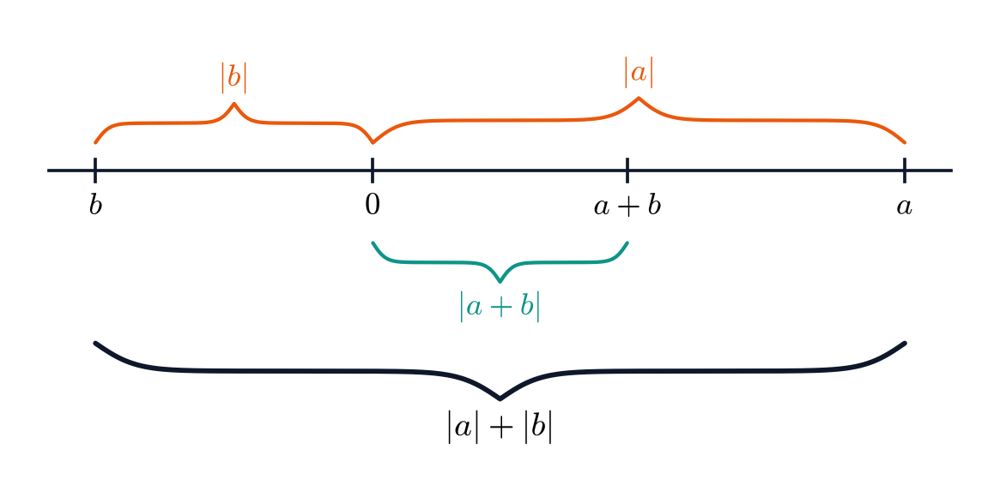
דוגמה 1.3.4 — אי-שוויון המשולש במספרים.
בכל סעיף, חשבו את \(|a + b|\) ואת \(,|a| + |b|\) והשוו.
(א) \(a = 2\) ו-\(b = 5\) (אותו סימן).
\(|a + b| =\) \(7\) ו-\(|a| + |b| =\) \(7\)
\[|2 + 5| = |7| = 7, \qquad |2| + |5| = 2 + 5 = 7\] ומתקבל שוויון.
(ב) \(a = -2\) ו-\(b = 5\) (סימנים שונים).
\(|a + b| =\) \(3\) ו-\(|a| + |b| =\) \(7\)
\[|(-2) + 5| = |3| = 3, \qquad |{-}2| + |5| = 2 + 5 = 7\] ומתקבל אי-שוויון חזק: \(.3 < 7\) הצעדים בכיוונים מנוגדים “ביטלו” זה את זה בחלקם.
כלל — מתי יש שוויון.
אם ל-\(a\) ול-\(b\) אותו סימן (או שאחד מהם הוא \(0\)), אז \(.|a + b| = |a| + |b|\) אחרת, \(.|a + b| < |a| + |b|\)
שימו לב — טעויות נפוצות.
- \(\sqrt{x^2} \ne x\) באופן כללי. למשל, עבור \(x = -4\): \[.\sqrt{(-4)^2} = \sqrt{16} = 4 = |{-}4| \neq -4\]
- \(|a + b| \ne |a| + |b|\) באופן כללי. למשל, עבור \(a = 2\) ו-\(b = -7\): \[|a + b| = |2 + (-7)| = |{-}5| = 5, \qquad |a| + |b| = |2| + |{-}7| = 2 + 7 = 9\] זו בדיוק הסיבה שאי-שוויון המשולש הוא אי-שוויון ולא שוויון.
בדיקה עצמית.
מהו \(?\sqrt{(-3)^2}\)
\(,(-3)^2 = 9\) ו-\(.\sqrt{9} = 3\) השורש תמיד אי-שלילי, ולכן \(.\sqrt{(-3)^2} = |{-}3| = 3\)
כללי אי-שוויונים
כדי לפתור משוואות ואי-שוויונים עם ערך מוחלט, נצטרך לעבוד עם אי-שוויונים. נזכיר את הכללים.
משפט 1.3.5 — כללי אי-שוויונים.
יהיו \(a < b\) מספרים ממשיים. אז:
(א) הוספה: לכל \(,c\) מתקיים \(.a + c < b + c\) (וכך גם בחיסור.) למשל, מ-\(-2 < 3\) נובע \(-2 + x < 3 + x\) לכל \(.x\)
(ב) כפל בחיובי: אם \(,c > 0\) אז \(.ac < bc\) הכיוון נשמר. למשל, מ-\(-2 < 3\) נובע \(.4 \cdot (-2) < 4 \cdot 3\)
(ג) כפל בשלילי: אם \(,c < 0\) אז \(.ac > bc\) הכיוון מתהפך. (וכך גם בחילוק.)
(ד) הופכיים: אם \(a\) ו-\(b\) שניהם חיוביים (או שניהם שליליים), אז \(.\frac{1}{a} > \frac{1}{b}\) הכיוון מתהפך.
(ה) ריבוע: אם \(,0 \le a < b\) אז \(.a^2 < b^2\)
(ו) שרשור: אם \(a < b\) ו-\(,b < c\) אז \(.a < c\)
כל הכללים נכונים גם עבור \(\le\) במקום \(.<\)
שימו לב — איפה הכללים נשברים.
- כפל בשלילי הופך את הכיוון: \(2 < 3\), אבל אחרי כפל ב-\(-1\) מתקבל \(.{-}2 > -3\)
- כפל בביטוי שהסימן שלו לא ידוע, כמו \(x\): מותר, אבל צריך לבדוק בנפרד את המקרה שבו הביטוי חיובי (הכיוון נשמר) ואת המקרה שבו הוא שלילי (הכיוון מתהפך).
- הופכיים עם סימנים שונים: \(,-1 < 2\) ו-\(,\frac{1}{-1} = -1 < \frac{1}{2}\) כלומר הכיוון לא התהפך. כלל (ד) דורש סימנים זהים.
- ריבוע של שליליים: \(,-3 < 2\) אבל \(.(-3)^2 = 9 > 4 = 2^2\) כלל (ה) דורש מספרים אי-שליליים.
בדיקה עצמית.
ידוע ש-\(.{-}x < 5\) מה נכון?
כופלים את שני האגפים ב-\(,-1\) שהוא מספר שלילי, ולכן הכיוון מתהפך: \(.x > -5\)
שיטת חישוב — פתרון אי-שוויון.
המטרה היא לבודד את \(x\): להשאיר אותו לבד באחד האגפים. עושים זאת צעד אחר צעד בעזרת משפט 1.3.5, ובכל צעד בודקים איזה כלל מפעילים, ובמיוחד אם הכיוון מתהפך.
דוגמה 1.3.6 — פתרון אי-שוויון לינארי.
פתרו את \(.3 - 2x < 7\)
מה מפריע ל-\(x\) להיות לבד? קודם ה-\(,3\) ואחר כך הכפל ב-\(.{-}2\)
אחרי שנשאר \(,-2x < 4\) מחלקים ב-\(.{-}2\) מה קורה לכיוון של אי-השוויון?
פתרון. נעביר את \(3\) לאגף ימין. לפי כלל (א), נחסר \(3\) משני האגפים: \[\begin{aligned} 3 - 2x - 3 &< 7 - 3 \\ -2x &< 4 \end{aligned}\] נשאיר את \(x\) לבד. נחלק את שני האגפים ב-\(.{-}2\) חילוק ב-\(-2\) הוא כפל ב-\(,-\frac{1}{2}\) שהוא מספר שלילי, ולכן לפי כלל (ג) הכיוון מתהפך: \[\begin{aligned} \frac{-2x}{-2} &> \frac{4}{-2} \\ x &> -2 \end{aligned}\]
קבוצת הפתרונות היא \((-2, \infty)\)
בדיקה: עבור \(x = 0\) (שגדול מ-\(-2\)) מתקבל \(,3 < 7\) נכון. עבור \(x = -5\) (שקטן מ-\(-2\)) מתקבל \(,3 + 10 = 13 < 7\) לא נכון, כמו שציפינו. הפתרון הוא הקרן \(.(-2, \infty)\)
דוגמה 1.3.7 — כפל בביטוי שהסימן שלו לא ידוע.
פתרו את \(.\frac{1}{x} < 2\)
כאן \(x \neq 0\) (אחרת השבר אינו מוגדר). כדי להיפטר מהשבר נרצה לכפול ב-\(,x\) אבל הכיוון תלוי בסימן של \(.x\) פצלו למקרים.
מקרה 1: \(x > 0\). לפי כלל (ב), הכפל ב-\(x\) שומר על הכיוון: \[\begin{aligned} 1 &< 2x \\ \tfrac{1}{2} &< x \end{aligned}\] במקרה הזה הפתרונות הם \(.x > \frac{1}{2}\)
מקרה 2: \(x < 0\). לפי כלל (ג), הכפל ב-\(x\) הופך את הכיוון: \[\begin{aligned} 1 &> 2x \\ \tfrac{1}{2} &> x \end{aligned}\] כל \(x < 0\) מקיים \(,x < \frac{1}{2}\) ולכן במקרה הזה כל \(x < 0\) הוא פתרון.
מאחדים את המקרים. בדיקה: עבור \(x = -1\) מתקבל \(,-1 < 2\) נכון. עבור \(x = \frac{1}{4}\) מתקבל \(,4 < 2\) לא נכון, ואכן \(\frac{1}{4}\) אינו בפתרון.
קבוצת הפתרונות היא \((-\infty, 0) \cup \left(\frac{1}{2}, \infty\right)\)
איחוד שני המקרים: מקרה 1 נותן את \(,x > \frac{1}{2}\) ומקרה 2 נותן את כל \(.x < 0\)
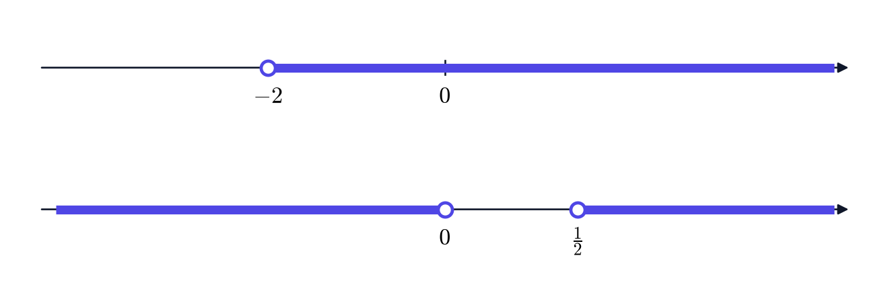
ערך מוחלט, מרחק וקטעים
נשתמש בפירוש של מרחק. האי-שוויון \(|x - a| < r\) אומר: המרחק של \(x\) מ-\(a\) קטן מ-\(r\). אלה בדיוק הנקודות שבקטע שמרכזו \(a\) ורדיוסו \(.r\)
כלל — ערך מוחלט וקטעים.
לכל \(r > 0\): \[|x - a| < r \iff a - r < x < a + r\] כלומר \(.x \in (a - r, a + r)\) ובאופן דומה, \(|x - a| > r\) פירושו ש-\(x\) מחוץ לקטע הזה: \(x < a - r\) או \(.x > a + r\)
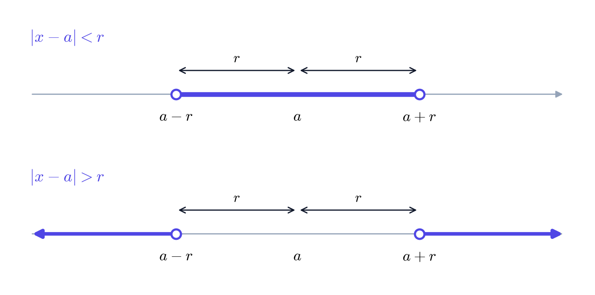
שיטת חישוב — פתרון משוואות ואי-שוויונים עם ערך מוחלט.
- מבודדים את הערך המוחלט בצד אחד, ומגיעים לאחת הצורות \(|E| = c\) או \(|E| < c\) או \(,|E| > c\) כאשר \(E\) הוא הביטוי שבתוך הערך המוחלט.
- אם \(c < 0\): למשוואה \(|E| = c\) ולאי-שוויון \(|E| < c\) אין פתרון, ואי-השוויון \(|E| > c\) מתקיים תמיד, כי ערך מוחלט אינו שלילי.
- אם \(c \ge 0\):
- \(|E| = c\) פירושו \(E = c\) או \(.E = -c\)
- \(|E| < c\) פירושו \(.{-}c < E < c\)
- \(|E| > c\) פירושו \(E > c\) או \(.E < -c\)
- פותרים את המשוואות או את אי-השוויונים שהתקבלו בעזרת משפט 1.3.5, וכותבים את התשובה כקטע או כאיחוד של קטעים.
דוגמה 1.3.8 — משוואות ואי-שוויונים.
(א) פתרו את \(.|2x - 3| = 5\) כתבו את הפתרון צעד אחר צעד. (ערך מוחלט כותבים בין שני קווים, |2x-3|. בין שתי אפשרויות כותבים “או”, למשל x=1 או x=2. את קבוצת הפתרונות כותבים כרשימה, למשל {1,2}.)
לפי השיטה יש שתי אפשרויות: \(2x - 3 = 5\) או \(.2x - 3 = -5\) כתבו את שתיהן בשורה אחת, עם “או” ביניהן.
מכאן ממשיכים בשתי האפשרויות יחד: מוסיפים \(3\) לשני האגפים בשתיהן, ואחר כך מחלקים ב-\(.2\)
פתרון. \[\begin{aligned} 2x - 3 &= 5 & \qquad\qquad 2x - 3 &= -5 \\ 2x &= 8 & 2x &= -2 \\ x &= 4 & x &= -1 \end{aligned}\] בשורה הראשונה פירקנו את הערך המוחלט לשתי אפשרויות, בשנייה הוספנו \(3\) לשני האגפים, ובשלישית חילקנו ב-\(.2\)
קבוצת הפתרונות: \(\{-1, 4\}\)
יש שני פתרונות: \(x = 4\) ו-\(.x = -1\) בדיקה: \(|2 \cdot 4 - 3| = |5| = 5\) ו-\(.|2 \cdot (-1) - 3| = |{-}5| = 5\)
(ב) פתרו את \(.|x - 4| < 3\) כתבו את הפתרון צעד אחר צעד.
במילים: המרחק של \(x\) מ-\(4\) קטן מ-\(.3\) לפי השיטה, \(|E| < c\) פירושו \(.{-}c < E < c\)
פתרון. \[\begin{aligned} -3 &< x - 4 < 3 \\ 1 &< x < 7 \end{aligned}\] בשורה הראשונה פירקנו את הערך המוחלט, ובשנייה הוספנו \(4\) לכל שלושת החלקים.
קבוצת הפתרונות היא \((1, 7)\)
הקטע \(,(1, 7)\) כלומר הנקודות שמרחקן מ-\(4\) קטן מ-\(.3\)
(ג) פתרו את \(.|2x + 1| \ge 3\)
לפי השיטה יש שתי אפשרויות: \(2x + 1 \ge 3\) או \(.2x + 1 \le -3\) שימו לב שבאפשרות השנייה הכיוון מתהפך.
פתרון. \[\begin{aligned} 2x + 1 &\ge 3 & \qquad\qquad 2x + 1 &\le -3 \\ 2x &\ge 2 & 2x &\le -4 \\ x &\ge 1 & x &\le -2 \end{aligned}\] בשורה הראשונה פירקנו את הערך המוחלט, בשנייה חיסרנו \(1\) משני האגפים, ובשלישית חילקנו ב-\(2\) (חיובי, ולכן הכיוון נשמר).
קבוצת הפתרונות היא \((-\infty, -2] \cup [1, \infty)\)
ה-\(x\) שמקיים אחת מהאפשרויות הוא פתרון, ולכן הפתרון הוא האיחוד \(.(-\infty, -2] \cup [1, \infty)\) בדיקה: עבור \(x = 0\) (שאינו בפתרון) מתקבל \(,|1| = 1 \ge 3\) לא נכון.
(ד) פתרו את \(.|x - 2| = -1\)
קבוצת הפתרונות: \(\emptyset\)
אין פתרון: ערך מוחלט לעולם אינו שלילי.
בדיקה עצמית.
כמה פתרונות יש למשוואה \(?|x - 1| = 0\)
המרחק של \(x\) מ-\(1\) הוא \(0\) רק כאשר \(x\) הוא \(1\) עצמו. לכן יש פתרון אחד: \(.x = 1\) כאן \(,c = 0\) ושתי האפשרויות של השיטה, \(E = c\) ו-\(,E = -c\) הן אותה משוואה.
סיכום.
- \(|a|\) הוא המרחק של \(a\) מ-\(,0\) ו-\(|a - b|\) הוא המרחק בין \(a\) ל-\(.b\) ערך מוחלט אף פעם אינו שלילי.
- \(,\sqrt{a^2} = |a|\) ו-\(.|a + b| \le |a| + |b|\)
- פותרים אי-שוויון על ידי בידוד \(.x\) כפל או חילוק במספר שלילי הופכים את הכיוון. אם הסימן לא ידוע, מפצלים למקרים.
- \(|x - a| < r\) פירושו \(,x \in (a - r, a + r)\) ו-\(|x - a| > r\) פירושו ש-\(x\) מחוץ לקטע הזה.
תרגילים
שאלה 1.3.9 — מחשבים ערך מוחלט.
(א) \(|{-}7| + |3| =\) \(10\)
(ב) \(|3 - 8| =\) \(5\)
(ג) \(|{-}2| \cdot |{-}4| =\) \(8\)
(ד) \(\big||{-}3| - 5\big| =\) \(2\)
(ה) \(|\pi - 4| =\) \(4 - \pi\)
ב-(ה): האם \(\pi - 4\) חיובי או שלילי? (\(\pi \approx 3.14\).) כתבו תשובה מדויקת, עם \(\pi\)(בשדה: pi או בכפתור).
(ב) \(.|3 - 8| = |{-}5| = 5\)
(ד) מחשבים מבפנים החוצה: \(.\big||{-}3| - 5\big| = |3 - 5| = |{-}2| = 2\)
(ה) \(,\pi < 4\) ולכן \(\pi - 4\) שלילי, ומורידים את המינוס: \(.|\pi - 4| = -(\pi - 4) = 4 - \pi\)
שאלה 1.3.10 — מרחקים על הישר.
(א) המרחק בין \(-2\) ל-\(5\) הוא \(7\)
(ב) המרחק בין \(-6\) לבין \(-1\) הוא \(5\)
(ג) המרחק בין \(\frac{1}{2}\) לבין \(-\frac{1}{2}\) הוא \(1\)
המרחק בין \(a\) ל-\(b\) הוא \(:|a - b|\) \[\begin{aligned} |{-}2 - 5| &= |{-}7| = 7 \\ |{-}6 - (-1)| &= |{-}5| = 5 \\ \left|\tfrac{1}{2} - \left(-\tfrac{1}{2}\right)\right| &= |1| = 1 \end{aligned}\]
שאלה 1.3.11 — אי-שוויון, צעד אחר צעד.
פתרו את \(.5x - 4 \le 2x + 8\)
קודם אספו את כל האיברים עם \(x\) באגף אחד ואת המספרים באגף השני.
פתרון. \[\begin{aligned} 5x - 4 &\le 2x + 8 \\ 3x - 4 &\le 8 \\ 3x &\le 12 \\ x &\le 4 \end{aligned}\] חיסרנו \(,2x\) הוספנו \(,4\) וחילקנו ב-\(3\) (חיובי, ולכן הכיוון נשמר).
קבוצת הפתרונות היא \((-\infty, 4]\)
שאלה 1.3.12 — שוב כיוון מתהפך.
פתרו את \(.4 - 3x \ge 10\)
אחרי שתחסרו \(,4\) תצטרכו לחלק במספר שלילי.
פתרון. \[\begin{aligned} 4 - 3x &\ge 10 \\ -3x &\ge 6 \\ x &\le -2 \end{aligned}\] בשורה האחרונה חילקנו ב-\(,-3\) ולכן הכיוון התהפך.
קבוצת הפתרונות היא \((-\infty, -2]\)
שאלה 1.3.13 — אי-שוויון כפול.
פתרו את \(.{-}1 < 2x - 5 < 7\) כל פעולה מפעילים על שלושת החלקים יחד.
הוסיפו \(5\) לכל שלושת החלקים, ואחר כך חלקו את שלושתם ב-\(.2\)
פתרון. \[\begin{aligned} -1 &< 2x - 5 < 7 \\ 4 &< 2x < 12 \\ 2 &< x < 6 \end{aligned}\]
קבוצת הפתרונות היא \((2, 6)\)
שאלה 1.3.14 — משוואות ואי-שוויונים עם ערך מוחלט.
פתרו כל סעיף צעד אחר צעד. השתמשו בשיטה: \(|E| < c\) פירושו \(,-c < E < c\) ו-\(|E| > c\) פירושו \(E > c\) או \(.E < -c\) (את קבוצת הפתרונות כתבו כרשימה, למשל {1,2}, או כקטע.)
(א) \(|x + 2| \le 4\)
פתרון. \[\begin{aligned} -4 &\le x + 2 \le 4 \\ -6 &\le x \le 2 \end{aligned}\] פירקנו את הערך המוחלט, וחיסרנו \(2\) מכל שלושת החלקים. אלה הנקודות שמרחקן מ-\(-2\) הוא לכל היותר \(.4\)
קבוצת הפתרונות: \([-6, 2]\)
(ב) \(|3x - 1| > 2\)
כאן יש שתי אפשרויות: \(3x - 1 > 2\) או \(.3x - 1 < -2\)
פתרון. \[\begin{aligned} 3x - 1 &> 2 & \qquad\qquad 3x - 1 &< -2 \\ 3x &> 3 & 3x &< -1 \\ x &> 1 & x &< -\tfrac{1}{3} \end{aligned}\] פירקנו את הערך המוחלט, הוספנו \(1\) לשני האגפים בשתי האפשרויות, וחילקנו ב-\(.3\)
קבוצת הפתרונות: \(\left(-\infty, -\frac{1}{3}\right) \cup (1, \infty)\)
(ג) \(|x + 1| = 4\)
פתרון. \[\begin{aligned} x + 1 &= 4 & \qquad\qquad x + 1 &= -4 \\ x &= 3 & x &= -5 \end{aligned}\] פירקנו את הערך המוחלט לשתי אפשרויות, וחיסרנו \(1\) משני האגפים.
קבוצת הפתרונות: \(\{-5, 3\}\)
(ד) \(|3x - 2| < 4\)
פתרון. \[\begin{aligned} -4 &< 3x - 2 < 4 \\ -2 &< 3x < 6 \\ -\tfrac{2}{3} &< x < 2 \end{aligned}\] פירקנו את הערך המוחלט, הוספנו \(2\) לכל שלושת החלקים, וחילקנו את שלושתם ב-\(.3\)
קבוצת הפתרונות: \(\left(-\frac{2}{3}, 2\right)\)
(ה) \(|2x + 3| = 0\)
ערך מוחלט הוא \(0\) רק כשמה שבתוכו הוא \(,0\) ולכן כאן יש אפשרות אחת בלבד.
פתרון. \[\begin{aligned} 2x + 3 &= 0 \\ 2x &= -3 \\ x &= -\tfrac{3}{2} \end{aligned}\]
קבוצת הפתרונות: \(\left\{-\frac{3}{2}\right\}\)
שאלה 1.3.15 — מקטע לערך מוחלט.
כתבו כל קטע בצורה \(|x - a| < r\) או \(.|x - a| \le r\) (מצאו את האמצע ואת חצי האורך.)
(א) \((2, 8)\): \(|x - 5| < 3\)
(ב) \([-1, 7]\): \(|x - 3| \le 4\)
האמצע של \((2, 8)\) הוא \(,\frac{2 + 8}{2} = 5\) והמרחק ממנו לכל קצה הוא \(.3\)
(א) הנקודות שמרחקן מ-\(5\) קטן מ-\(:3\) \(.|x - 5| < 3\)
(ב) האמצע הוא \(,\frac{-1 + 7}{2} = 3\) וחצי האורך הוא \(.4\) הקצוות שייכים, ולכן \(.|x - 3| \le 4\)
שאלה 1.3.16 — להוריד את הערך המוחלט.
(א) אם \(,x < 2\) אז \(|x - 2|\) שווה:
כאשר \(,x < 2\) הביטוי \(x - 2\) שלילי, ולכן מורידים את המינוס: \(.|x - 2| = -(x - 2) = 2 - x\) למשל, עבור \(x = 0\) מתקבל \(.|{-}2| = 2 = 2 - 0\)
(ב) אם \(,x \ge 5\) אז \(|5 - x|\) שווה:
כאשר \(,x \ge 5\) הביטוי \(5 - x\) אינו חיובי, ולכן \(.|5 - x| = -(5 - x) = x - 5\)
שאלה 1.3.17 — שוב מקרים.
פתרו את \(.\frac{2}{x} < 1\)
כמו ב-דוגמה 1.3.7: \(,x \neq 0\) ומפצלים לפי הסימן של \(.x\)
מקרה 1: \(x > 0\). הכפל ב-\(x\) שומר על הכיוון: \(,2 < x\) כלומר \(.x > 2\)
מקרה 2: \(x < 0\). הכפל ב-\(x\) הופך את הכיוון: \(.2 > x\) כל \(x < 0\) מקיים זאת, ולכן כל \(x < 0\) הוא פתרון. (וגם ישירות: \(\frac{2}{x}\) שלילי, ולכן קטן מ-\(1\).)
קבוצת הפתרונות היא \((-\infty, 0) \cup (2, \infty)\)
1.4 פונקציות וגרפים
מה עושים כאן? מגדירים פונקציה, כלל שמקבל מספר ומחזיר מספר אחד, ולומדים לצייר אותה כגרף במישור. נראה גם עקומות שאינן גרפים של פונקציות, ונמצא איפה נוסחה מוגדרת.
רוב הקורס עוסק בפונקציות: כללים שמקבלים מספר ומחזירים מספר. הדרישה החשובה ביותר היא שהכלל יהיה חד-משמעי: כל קלט נותן תשובה אחת, ורק אחת.
חשוב לזכור — פונקציה היא מכונה.
אפשר לחשוב על פונקציה כעל מכונה: מכניסים לה מספר \(,x\) והיא מוציאה מספר \(.f(x)\) מכונה טובה עקבית: אם נכניס לה את אותו \(x\) פעמיים, נקבל את אותה תשובה בשתי הפעמים.
הגדרה 1.4.1 — פונקציה.
יהיו \(A\) ו-\(B\) קבוצות. פונקציה \(f : A \to B\) היא כלל שמתאים לכל \(x \in A\) איבר יחיד \(.f(x) \in B\)
- הקבוצה \(A\) נקראת תחום ההגדרה של \(.f\)
- הקבוצה \(B\) נקראת הטווח של \(.f\)
- קבוצת כל הערכים שהפונקציה מקבלת בפועל, \(,\{f(x) \mid x \in A\}\) נקראת התמונה של \(.f\)
התמונה יכולה להיות קטנה מהטווח. למשל, עבור \(f : \mathbb{R} \to \mathbb{R}\) שמוגדרת על ידי \(,f(x) = x^2\) הטווח הוא \(,\mathbb{R}\) אבל התמונה היא רק \(,[0, \infty)\) כי ריבוע אינו שלילי.
שיטת חישוב — מציאת התמונה.
כדי לבדוק אם מספר \(y\) נמצא בתמונה של \(,f\) פותרים את המשוואה \(f(x) = y\) עבור \(.x\) אם יש לה פתרון בתחום ההגדרה, \(y\) בתמונה. אם אין לה פתרון, \(y\) אינו בתמונה.
דוגמה 1.4.2 — פונקציות פשוטות.
בכל סעיף, חשבו כמה ערכים של הפונקציה ומצאו את התמונה שלה.
(א) \(f(x) = 3x + 1\) (מוגדרת לכל \(x\) ממשי).
\(f(0) =\) \(1\), \(f(2) =\) \(7\), \(f(-1) =\) \(-2\) והתמונה היא \(\mathbb{R}\)(את \(\mathbb{R}\) כותבים R).
נחשב: \[f(0) = 3 \cdot 0 + 1 = 1, \qquad f(2) = 3 \cdot 2 + 1 = 7, \qquad f(-1) = 3 \cdot (-1) + 1 = -2\] התמונה היא כל \(\mathbb{R}\). נבדוק לפי השיטה: יהי \(y\) מספר ממשי כלשהו. נפתור את המשוואה \(:f(x) = y\) \[\begin{aligned} 3x + 1 &= y \\ 3x &= y - 1 \\ x &= \frac{y - 1}{3} \end{aligned}\] לכל \(y\) יש פתרון, ולכן כל \(y\) ממשי נמצא בתמונה. למשל, עבור \(y = 10\) נקבל \(,x = 3\) ואכן \(.f(3) = 10\)
(ב) \(f(x) = x^2\) (מוגדרת לכל \(x\) ממשי).
\(f(3) =\) \(9\), \(f(-3) =\) \(9\), \(f(0) =\) \(0\) והתמונה היא \([0, \infty)\)
נחשב: \[f(3) = 9, \qquad f(-3) = (-3)^2 = 9, \qquad f(0) = 0\] שני קלטים שונים, \(3\) ו-\(,-3\) נותנים אותו פלט. זה מותר: ההגדרה דורשת שלכל קלט יהיה פלט יחיד, ולא להפך.
התמונה היא \([0, \infty)\): מצד אחד, \(x^2 \ge 0\) לכל \(,x\) ולכן אין בתמונה מספרים שליליים. מצד שני, לכל \(y \ge 0\) המשוואה \(x^2 = y\) פתירה, למשל על ידי \(,x = \sqrt{y}\) ולכן כל \(y \ge 0\) בתמונה.
(ג) \(f(x) = |x|\)
\(f(2) =\) \(2\), \(f(-2) =\) \(2\) והתמונה היא \([0, \infty)\)
הפונקציה מוגדרת “בחלקים”: \(f(x) = x\) עבור \(x \ge 0\) ו-\(f(x) = -x\) עבור \(.x < 0\) מאותה סיבה כמו ב-(ב), התמונה היא \(.[0, \infty)\)
(ד) \[f(x) = \begin{cases} x + 1 & x < 0 \\ x^2 & x \ge 0 \end{cases}\]
\(f(-2) =\) \(-1\), \(f(0) =\) \(0\), \(f(3) =\) \(9\) והתמונה היא \(\mathbb{R}\)
גם הכלל הזה הוא פונקציה: לכל \(x\) יש בדיוק שורה אחת שמתאימה לו, וכל שורה נותנת ערך אחד. נחשב: \[\begin{aligned} f(-2) &= -2 + 1 = -1 \\ f(0) &= 0^2 = 0 \\ f(3) &= 3^2 = 9 \end{aligned}\] עבור \(-2\) השתמשנו בשורה הראשונה, כי \(,-2 < 0\) ועבור \(0\) ו-\(3\) בשורה השנייה, כי הם \(.\ge 0\)
התמונה. עבור \(x < 0\) הערכים \(x + 1\) ממלאים את הקרן \(,(-\infty, 1)\) ועבור \(x \ge 0\) הערכים \(x^2\) ממלאים את \(.[0, \infty)\) האיחוד של שתי הקרניים הוא כל \(.\mathbb{R}\)
בדיקה עצמית.
(א) האם \(5\) נמצא בתמונה של \(?f(x) = x^2\)
כן. למשוואה \(x^2 = 5\) יש פתרון, למשל \(,x = \sqrt{5}\) ואכן \(.f(\sqrt{5}) = 5\)
(ב) האם \(-1\) נמצא בתמונה של \(?f(x) = x^2\)
לא. למשוואה \(x^2 = -1\) אין פתרון ממשי, כי ריבוע אינו שלילי.
המישור: מכפלה קרטזית
כדי להבין פונקציה, נרצה לצייר אותה. כמו שמספרים ממשיים מתארים נקודות על ישר אינסופי, איך נתאר נקודות על מישור, או חלקים ממנו? נצייר במישור שני עותקים של הישר הממשי, מאונכים זה לזה, שנחתכים בנקודה \(0\) של שניהם: ישר אופקי, שנקרא ציר \(x\), וישר אנכי, שנקרא ציר \(y\). נקודת החיתוך שלהם נקראת הראשית.
עכשיו לכל נקודה במישור מתאימים שני מספרים: כמה היא ימינה (או שמאלה) מהראשית, לאורך ציר \(,x\) וכמה היא למעלה (או למטה), לאורך ציר \(.y\) שני המספרים האלה נקראים הקואורדינטות (או השיעורים) של הנקודה, ואת הנקודה כותבים כזוג \(.(x, y)\) זוג כזה נקרא זוג סדור, כי יש חשיבות לסדר: המספר הראשון הוא תמיד שיעור ה-\(x\).
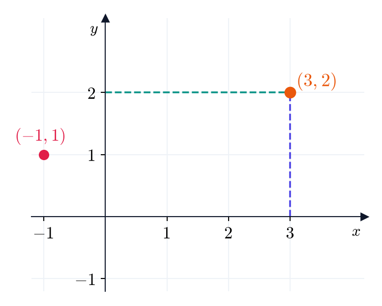
הגדרה 1.4.3 — מכפלה קרטזית.
המכפלה הקרטזית של הקבוצות \(A\) ו-\(B\) היא קבוצת כל הזוגות הסדורים שהאיבר הראשון שלהם מ-\(A\) והשני מ-\(B\): \[.A \times B = \{ (a, b) \mid a \in A, \ b \in B \}\] בפרט, המישור הוא \(,\mathbb{R}^2 = \mathbb{R} \times \mathbb{R}\) קבוצת כל הזוגות של מספרים ממשיים.
דוגמה 1.4.4 — מכפלות קרטזיות.
(א) כמה איברים יש ב-\(?\{0, 1\} \times \{a, b, c\}\) רשמו אותם.
מספר האיברים: \(6\)
\[.\{0, 1\} \times \{a, b, c\} = \{(0, a), (0, b), (0, c), (1, a), (1, b), (1, c)\}\] לכל אחת משתי האפשרויות לאיבר הראשון יש שלוש אפשרויות לאיבר השני, ולכן יש \(2 \cdot 3 = 6\) זוגות.
(ב) איך נראית הקבוצה \([1, 3] \times [0, 2]\) במישור?
תשובה לסעיף (ב)
זו קבוצת כל הנקודות \((x, y)\) במישור שבהן \(1 \le x \le 3\) ו-\(.0 \le y \le 2\) זהו ריבוע.
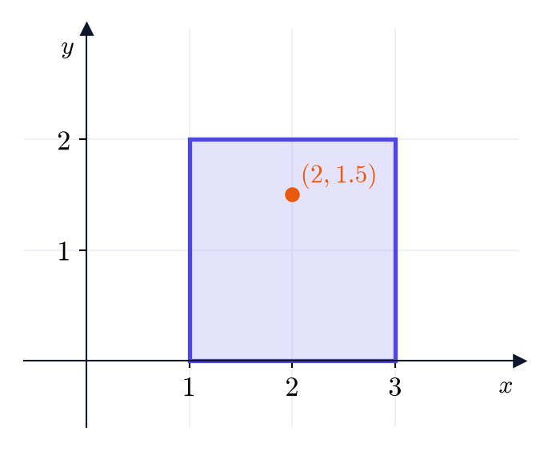
שימו לב — הסדר חשוב.
בזוג סדור יש חשיבות לסדר: \(.(1, 2) \neq (2, 1)\) הנקודה הראשונה נמצאת מעל \(,x = 1\) והשנייה מעל \(.x = 2\) לכן גם \(A \times B \neq B \times A\) באופן כללי. למשל, \([1, 3] \times [0, 2]\) ו-\([0, 2] \times [1, 3]\) הם שני ריבועים שונים במישור.
שאלה 1.4.5.
אילו מהנקודות \((1, 2)\), \((2, 0)\), \((0, 3)\) ו-\((3, 1)\) שייכות ל-\(?[0, 2] \times [1, 3]\)
הצגת הפתרון
פתרון.
נקודה \((x, y)\) שייכת ל-\([0, 2] \times [1, 3]\) אם \(0 \le x \le 2\) וגם \(.1 \le y \le 3\) נבדוק כל נקודה:
- \((1, 2)\): \(0 \le 1 \le 2\) ו-\(.1 \le 2 \le 3\) שייכת.
- \((2, 0)\): \(0 \le 2 \le 2\), אבל \(.0 < 1\) אינה שייכת.
- \((0, 3)\): \(0 \le 0 \le 2\) ו-\(.1 \le 3 \le 3\) שייכת (נקודות הקצה שייכות, כי הקטעים סגורים).
- \((3, 1)\): \(.3 > 2\) אינה שייכת.
הגרף של פונקציה
הגדרה 1.4.6 — הגרף של פונקציה.
הגרף של פונקציה \(f : A \to \mathbb{R}\) הוא קבוצת הנקודות במישור \[.\{ (x, f(x)) \mid x \in A \} \subseteq \mathbb{R}^2\] כלומר, מעל כל \(x\) בתחום ההגדרה מסמנים נקודה בגובה \(.f(x)\)
כלל — נקודה על הגרף.
הנקודה \((a, b)\) נמצאת על הגרף של \(f\) אם ורק אם \(.f(a) = b\) למשל, עבור \(:f(x) = x^2 + 1\)
- הנקודה \((2, 5)\) על הגרף, כי \(.f(2) = 2^2 + 1 = 5\)
- הנקודה \((1, 3)\) אינה על הגרף, כי \(.f(1) = 1^2 + 1 = 2 \neq 3\)
בדיקה עצמית.
האם הנקודה \((-2, 5)\) נמצאת על הגרף של \(?f(x) = x^2 + 1\)
כן: \(.f(-2) = (-2)^2 + 1 = 4 + 1 = 5\)
איך מציירים גרף? מחשבים את הפונקציה בכמה נקודות, מסמנים את הנקודות \((x, f(x))\) ומחברים ביניהן. ככל שמשתמשים ביותר נקודות, הציור מדויק יותר. בסימולציה הבאה רואים את התהליך עבור \(.f(x) = x^2\)
סימולציה 1.4.7 — מנקודות לגרף: הפרבולה.
עם \(5\) נקודות מתקבל קו שבור עם “פינות”. עם \(9\) נקודות הפינות כבר קטנות, ועם \(41\) נקודות הקו השבור כמעט אינו נבדל מהפרבולה. הגרף של \(x^2\) הוא העקומה החלקה שהקווים השבורים האלה מתקרבים אליה.
הנה הגרפים של הפונקציות מ-דוגמה 1.4.2, ובהם מסומנות הנקודות שחישבנו:
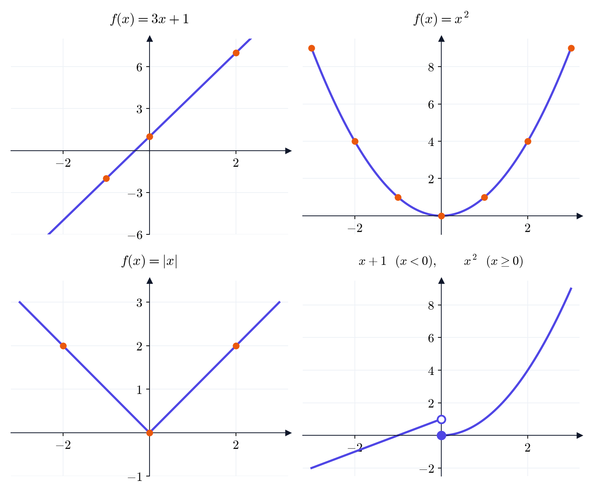
חשוב לזכור — ציור הוא תמונה איכותית.
ציור של גרף הוא בדרך כלל לא מדויק. הוא נותן לנו בעיקר מידע איכותי: איפה הפונקציה עולה ואיפה היא יורדת, איפה היא חותכת את הצירים, ואיך היא מתנהגת בקצוות. בשביל מידע כמותי, כמו ערך מדויק בנקודה, מחשבים מהנוסחה. שימו לב גם שקנה המידה על ציר \(x\) ועל ציר \(y\) לא חייב להיות זהה: למשל, בגרף של \(3x + 1\) למעלה, יחידה על ציר \(y\) קצרה יותר מיחידה על ציר \(.x\) בוחרים קנה מידה שבו רואים היטב את מה שמעניין.
פונקציית הסימן והערך השלם
שתי פונקציות פשוטות נוספות, שמוגדרות בעזרת כלל ולא בעזרת נוסחה אחת.
הגדרה 1.4.8 — פונקציית הסימן.
פונקציית הסימן היא \[.\operatorname{sgn}(x) = \begin{cases} 1 & x > 0 \\ 0 & x = 0 \\ -1 & x < 0 \end{cases}\]
במילים: הפונקציה “שוכחת” את הגודל של המספר, ומשאירה רק את הסימן שלו.
דוגמה 1.4.9 — פונקציית הסימן.
(א) חשבו.
\(\operatorname{sgn}(-3.7) =\) \(-1\) ו-\(\operatorname{sgn}(\pi) =\) \(1\)
\(\operatorname{sgn}(-3.7) = -1\) כי \(,-3.7 < 0\) ו-\(\operatorname{sgn}(\pi) = 1\) כי \(.\pi > 0\)
(ב) מהי התמונה של פונקציית הסימן?
התמונה: \(\{-1, 0, 1\}\)
הפונקציה מקבלת רק שלושה ערכים, ולכן התמונה היא קבוצה של שלושה מספרים.
(ג) בדקו ש-\(|x| = x \cdot \operatorname{sgn}(x)\) עבור \(.x = -3\)
תשובה לסעיף (ג)
\[\begin{aligned} (-3) \cdot \operatorname{sgn}(-3) &= (-3) \cdot (-1) \\ &= 3 \\ &= |{-}3|. \end{aligned}\]
הגדרה 1.4.10 — הערך השלם (רצפה).
הערך השלם של \(,x\) שמסומן \(,\lfloor x \rfloor\) הוא המספר השלם הגדול ביותר שקטן או שווה ל-\(.x\)
על הישר: מתחילים ב-\(x\) והולכים שמאלה עד שפוגשים את המספר השלם הראשון (או נשארים במקום, אם \(x\) עצמו שלם).
דוגמה 1.4.11 — ערך שלם.
חשבו:
(א) \(\lfloor 2.7 \rfloor =\) \(2\)
(ב) \(\lfloor 5 \rfloor =\) \(5\)
(ג) \(\lfloor -1.2 \rfloor =\) \(-2\)
(א) השלמים שקטנים או שווים ל-\(2.7\) הם \(\dots, 0, 1, 2\), והגדול שבהם הוא \(.2\)
(ב) \(5\) עצמו שלם.
(ג) השלמים שקטנים או שווים ל-\(-1.2\) הם \(\dots, -4, -3, -2\), והגדול שבהם הוא \(.{-}2\)
התמונה של פונקציית הערך השלם היא \(.\mathbb{Z}\)
שימו לב — ערך שלם של מספר שלילי.
עבור מספרים שליליים, הערך השלם אינו “מחיקת הספרות שאחרי הנקודה”: \(,\lfloor -1.2 \rfloor = -2\) ולא \(,-1\) כי \(-1 > -1.2\) ואנחנו מחפשים שלם שקטן או שווה ל-\(.{-}1.2\)
בדיקה עצמית.
מהו \(?\lfloor -3.5 \rfloor\)
מתחילים במספר \(-3.5\) והולכים שמאלה עד המספר השלם הראשון: \(.{-}4\) המספר \(-3\) נמצא מימין ל-\(,-3.5\) כלומר הוא גדול ממנו, ולכן אינו מתאים.
בגרפים של שתי הפונקציות יש קפיצות.
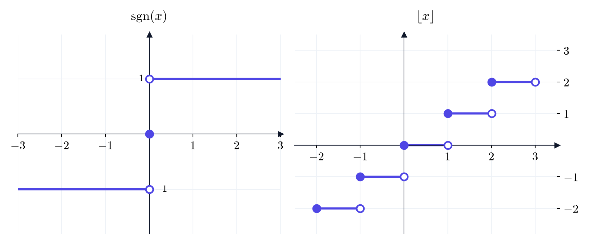
מה אינו פונקציה
כדי להבין את ההגדרה, כדאי לראות דוגמאות שאינן עומדות בה. ההגדרה דורשת שלכל \(x\) יהיה ערך יחיד. בגרף, פירוש הדבר הוא שכל קו אנכי פוגש את הגרף לכל היותר פעם אחת.
כלל — מבחן הקו האנכי.
עקומה במישור היא גרף של פונקציה אם ורק אם כל קו אנכי חותך אותה לכל היותר בנקודה אחת.
דוגמה 1.4.12 — מעגל.
האם המעגל \(x^2 + y^2 = 4\) (מרכזו בראשית ורדיוסו \(2\)) הוא גרף של פונקציה? רמז: נסו את הקו האנכי \(.x = 1\)
הצגת הפתרון
לא. נציב \(:x = 1\) \[\begin{aligned} 1^2 + y^2 &= 4 \\ y^2 &= 3 \\ y &= \pm\sqrt{3} \end{aligned}\] הקו האנכי \(x = 1\) חותך את המעגל בשתי נקודות, \((1, \sqrt{3})\) ו-\(.(1, -\sqrt{3})\)
דוגמה 1.4.13 — אליפסה.
האליפסה \[\frac{x^2}{9} + \frac{y^2}{4} = 1\] היא מעגל “מתוח”. מצאו את נקודות החיתוך שלה עם הצירים. האם היא גרף של פונקציה?
- חיתוך עם ציר \(x\) (שם \(y = 0\)): \(x \in\) \(\{-3, 3\}\)
- חיתוך עם ציר \(y\) (שם \(x = 0\)): \(y \in\) \(\{-2, 2\}\)
- עם ציר \(x\) (\(y = 0\)): \(,\frac{x^2}{9} = 1\) כלומר \(,x^2 = 9\) ולכן \(.x = \pm 3\) הנקודות: \(.(\pm 3, 0)\)
- עם ציר \(y\) (\(x = 0\)): \(,\frac{y^2}{4} = 1\) כלומר \(,y^2 = 4\) ולכן \(.y = \pm 2\) הנקודות: \(.(0, \pm 2)\)
האליפסה אינה גרף של פונקציה: למשל, הקו \(x = 0\) חותך אותה בשתי הנקודות \(.(0, \pm 2)\)
באופן כללי, האליפסה \(\frac{x^2}{a^2} + \frac{y^2}{b^2} = 1\) חותכת את הצירים בנקודות \((\pm a, 0)\) ו-\(.(0, \pm b)\) כאשר \(a = b\) מתקבל מעגל.
דוגמה 1.4.14 — היפרבולה.
ההיפרבולה \[\frac{x^2}{4} - y^2 = 1\] בנויה משני “ענפים”. מצאו את נקודות החיתוך שלה עם הצירים.
- חיתוך עם ציר \(x\): \(x \in\) \(\{-2, 2\}\)
- חיתוך עם ציר \(y\): \(y \in\) \(\emptyset\)
- עם ציר \(x\) (\(y = 0\)): \(,\frac{x^2}{4} = 1\) כלומר \(,x^2 = 4\) ולכן \(.x = \pm 2\) הנקודות \((\pm 2, 0)\) נקראות הקודקודים.
- עם ציר \(y\) (\(x = 0\)): \(,-y^2 = 1\) כלומר \(,y^2 = -1\) ולמשוואה הזו אין פתרון. ההיפרבולה אינה חותכת את ציר \(.y\)
כאשר \(x\) גדול, הענפים מתקרבים לישרים \(y = \frac{1}{2}x\) ו-\(,y = -\frac{1}{2}x\) שנקראים האסימפטוטות של ההיפרבולה. גם ההיפרבולה אינה גרף של פונקציה: הקו \(x = 3\) חותך אותה בשתי נקודות.
באופן כללי, להיפרבולה \(\frac{x^2}{a^2} - \frac{y^2}{b^2} = 1\) יש קודקודים \((\pm a, 0)\) ואסימפטוטות \(.y = \pm \frac{b}{a} x\)
דוגמה 1.4.15 — פרבולה שוכבת.
העקומה \(x = y^2\) היא פרבולה “שוכבת”, שנפתחת ימינה. האם היא גרף של פונקציה? רמז: נסו את \(.x = 4\)
הצגת הפתרון
לא. נציב \(:x = 4\) \[,4 = y^2\] ולכן \(y = 2\) או \(:y = -2\) שתי נקודות על אותו קו אנכי.
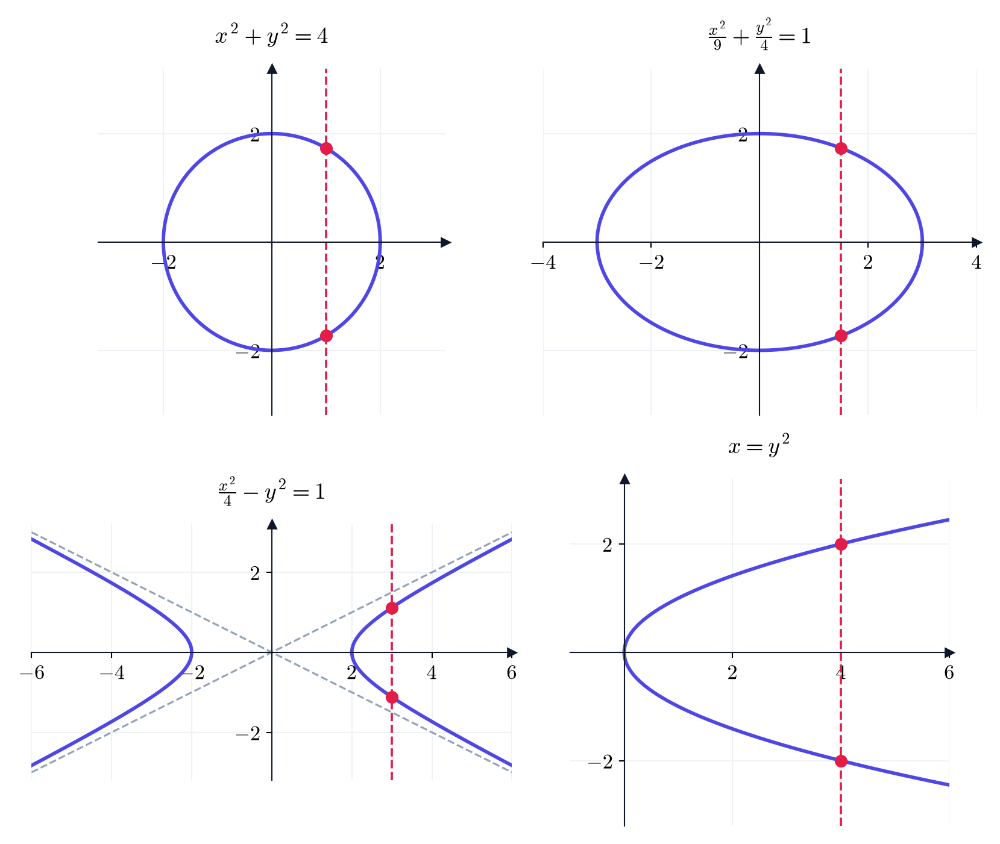
חשוב לזכור — חיתוך לחלקים.
אף שהעקומות האלה אינן גרפים של פונקציות, אפשר לחתוך כל אחת מהן לחלקים שכל אחד מהם הוא גרף של פונקציה. למשל, נבודד את \(y\) במשוואת המעגל: \[\begin{aligned} x^2 + y^2 &= 4 \\ y^2 &= 4 - x^2 \\ y &= \pm\sqrt{4 - x^2} \end{aligned}\] לכן חצי המעגל העליון הוא הגרף של הפונקציה \(,y = \sqrt{4 - x^2}\) והתחתון הוא הגרף של \(.y = -\sqrt{4 - x^2}\) באותו אופן, הענף העליון של \(x = y^2\) הוא הגרף של \(.y = \sqrt{x}\)
תחום ההגדרה הטבעי
לעיתים קרובות נותנים פונקציה רק בעזרת נוסחה, בלי לציין את תחום ההגדרה. במקרה כזה מסכימים שתחום ההגדרה הוא כל המספרים שבהם לנוסחה יש משמעות.
הגדרה 1.4.16 — תחום ההגדרה הטבעי.
תחום ההגדרה הטבעי של פונקציה שנתונה בנוסחה הוא קבוצת כל ה-\(x\) הממשיים שעבורם הנוסחה מוגדרת.
שיטת חישוב — מציאת תחום הגדרה.
עוברים על הנוסחה ומחפשים את הפעולות ה”מסוכנות”:
- חילוק: המכנה חייב להיות שונה מאפס.
- שורש זוגי (\(\sqrt{\ }\), \(\sqrt[4]{\ }\), …): הביטוי שבתוכו חייב להיות אי-שלילי.
- לוגריתם (נכיר בהמשך ההרצאה): הביטוי שבתוכו חייב להיות חיובי.
כל דרישה כזו נותנת משוואה או אי-שוויון. פותרים את כולם, ותחום ההגדרה הוא החיתוך של כל הפתרונות.
דוגמה 1.4.17 — תחומי הגדרה.
מצאו את תחום ההגדרה הטבעי.
את תחום ההגדרה כותבים כקטע או כאיחוד של קטעים. (\(\mathbb{R}\) בלי הנקודה \(5\) אפשר לכתוב R-{5}.)
(א) \(f(x) = \sqrt{x - 3}\)
תחום ההגדרה: \([3, \infty)\)
יש כאן שורש, ולכן צריך \[\begin{aligned} x - 3 &\ge 0 \\ x &\ge 3 \end{aligned}\]
(ב) \(f(x) = \frac{1}{x^2 - 4}\)
תחום ההגדרה: \(\mathbb{R} \setminus \{-2, 2\}\)
יש כאן חילוק, ולכן צריך \(.x^2 - 4 \neq 0\) נמצא מתי המכנה מתאפס: \[\begin{aligned} x^2 - 4 &= 0 \\ x^2 &= 4 \\ x &= \pm 2 \end{aligned}\] את שתי הנקודות האלה מוציאים. תחום ההגדרה: \(,\mathbb{R} \setminus \{-2, 2\}\) שאפשר לכתוב גם כ-\(.(-\infty, -2) \cup (-2, 2) \cup (2, \infty)\)
(ג) \(f(x) = \frac{\sqrt{x + 1}}{x - 2}\)
תחום ההגדרה: \([-1, 2) \cup (2, \infty)\)
יש כאן שתי פעולות “מסוכנות”: שורש וחילוק. כל אחת נותנת דרישה.
- בגלל השורש: \(,x + 1 \ge 0\) כלומר \(.x \ge -1\)
- בגלל המכנה: \(,x - 2 \neq 0\) כלומר \(.x \neq 2\)
- החיתוך: כל \(x \ge -1\) חוץ מ-\(,x = 2\) כלומר \(.[-1, 2) \cup (2, \infty)\)
סיכום.
- פונקציה מתאימה לכל \(x\) בתחום ההגדרה ערך יחיד \(.f(x)\) התמונה היא כל הערכים שמתקבלים בפועל; כדי לבדוק אם \(y\) בתמונה, פותרים \(.f(x) = y\)
- המישור הוא \(,\mathbb{R}^2 = \mathbb{R} \times \mathbb{R}\) ו-\((a, b)\) על הגרף של \(f\) בדיוק כאשר \(.f(a) = b\)
- מבחן הקו האנכי: עקומה היא גרף של פונקציה אם כל קו אנכי חותך אותה לכל היותר פעם אחת. מעגל, אליפסה, היפרבולה ו-\(x = y^2\) אינם גרפים של פונקציות.
- תחום הגדרה טבעי: מכנה \(\neq 0\), ביטוי בתוך שורש זוגי \(,\ge 0\) ולוקחים את החיתוך.
תרגילים
שאלה 1.4.18 — מציבים בפונקציה.
תהי \(.f(x) = x^2 - 3x + 1\) חשבו.
(א) \(f(2) =\) \(-1\)
(ב) \(f(-1) =\) \(5\)
(ג) \(f(0) =\) \(1\)
(ד) \(f\left(\frac{1}{2}\right) =\) \(-\frac{1}{4}\)
מציבים את המספר בכל מקום שבו מופיע \(,x\) עם סוגריים: למשל \(.f(-1) = (-1)^2 - 3 \cdot (-1) + 1\)
\[\begin{aligned} f(2) &= 4 - 6 + 1 = -1 \\ f(-1) &= 1 + 3 + 1 = 5 \\ f(0) &= 0 - 0 + 1 = 1 \\ f\left(\tfrac{1}{2}\right) &= \tfrac{1}{4} - \tfrac{3}{2} + 1 = -\tfrac{1}{4} \end{aligned}\]
שאלה 1.4.19 — מציבים ביטוי.
אפשר להציב בפונקציה גם ביטוי. כתבו כל תוצאה בלי סוגריים, אם אפשר.
(א) עבור \(f(x) = 2x + 3\): \(f(a + 1) =\) \(2a + 5\)
(ב) עבור \(f(x) = 2x + 3\): \(f(2a) =\) \(4a + 3\)
(ג) עבור \(f(x) = x^2\): \(f(x + 1) - f(x) =\) \(2x + 1\)
במקום כל \(x\) כותבים את הביטוי כולו, בתוך סוגריים.
(א) \(.f(a + 1) = 2(a + 1) + 3 = 2a + 2 + 3 = 2a + 5\)
(ב) \(.f(2a) = 2 \cdot 2a + 3 = 4a + 3\)
(ג) \[\begin{aligned} f(x + 1) - f(x) &= (x + 1)^2 - x^2 \\ &= x^2 + 2x + 1 - x^2 \\ &= 2x + 1 \end{aligned}\]
שאלה 1.4.20 — פונקציה בחלקים.
תהי \[.f(x) = \begin{cases} 1 - x & x \le 1 \\ x^2 & x > 1 \end{cases}\]
(א) \(f(-2) =\) \(3\)
(ב) \(f(1) =\) \(0\)
(ג) \(f(3) =\) \(9\)
(ד) התמונה של \(f\) היא \([0, \infty)\)
לכל \(x\) בודקים קודם באיזו שורה הוא נמצא. ב-(ב): \(1 \le 1\) נכון.
(א) \(,-2 \le 1\) ולכן \(.f(-2) = 1 - (-2) = 3\) (ב) \(,1 \le 1\) ולכן \(.f(1) = 1 - 1 = 0\) (ג) \(,3 > 1\) ולכן \(.f(3) = 9\)
(ד) עבור \(x \le 1\) הערכים \(1 - x\) ממלאים את \(,[0, \infty)\) ועבור \(x > 1\) הערכים \(x^2\) ממלאים את \(.(1, \infty)\) האיחוד הוא \(.[0, \infty)\)
שאלה 1.4.21 — על הגרף או לא?
אילו מהנקודות נמצאות על הגרף של \(?f(x) = \sqrt{x + 5}\)
(א) \((4, 3)\)
\(,f(4) = \sqrt{9} = 3\) ולכן הנקודה על הגרף.
(ב) \((-1, -2)\)
\(.f(-1) = \sqrt{4} = 2 \neq -2\) השורש אינו שלילי, ולכן אין על הגרף נקודות מתחת לציר \(.x\)
(ג) \((-5, 0)\)
\(,f(-5) = \sqrt{0} = 0\) ולכן הנקודה על הגרף. זו נקודת ההתחלה של הגרף.
שאלה 1.4.22 — בתמונה או לא?
תהי \(.f(x) = x^2 + 3\)
(א) האם \(7\) בתמונה של \(?f\)
פותרים \(,x^2 + 3 = 7\) כלומר \(,x^2 = 4\) ויש פתרון, למשל \(.x = 2\)
(ב) האם \(2\) בתמונה של \(?f\)
\(,x^2 + 3 = 2\) פירושו \(,x^2 = -1\) ואין לזה פתרון ממשי.
(ג) התמונה של \(f\) היא \([3, \infty)\)
\(x^2\) מקבל את כל הערכים ב-\(,[0, \infty)\) ולכן \(x^2 + 3\) מקבל את כל הערכים ב-\(.[3, \infty)\)
שאלה 1.4.23 — עוד ערך שלם.
(א) \(\lfloor -0.5 \rfloor =\) \(-1\)
(ב) \(\lfloor \pi \rfloor =\) \(3\)
(ג) קבוצת הפתרונות של \(\lfloor x \rfloor = 3\) היא \([3, 4)\)
ב-(ג): אילו מספרים “הולכים שמאלה” ופוגשים קודם את \(?3\) בגרף: זו המדרגה בגובה \(.3\)
(א) השלמים שקטנים או שווים ל-\(-0.5\) הם \(,\dots, -3, -2, -1\) והגדול שבהם הוא \(.{-}1\)
(ב) \(,\pi = 3.14\ldots\) ולכן \(.\lfloor \pi \rfloor = 3\)
(ג) צריך \(3 \le x\) (כדי ש-\(3\) לא יהיה גדול מ-\(x\)), וגם \(x < 4\) (אחרת גם \(4\) היה שלם שאינו גדול מ-\(x\)). הפתרון הוא \(.[3, 4)\)
שאלה 1.4.24 — תחומי הגדרה.
מצאו את תחום ההגדרה הטבעי.
(א) \(\frac{1}{\sqrt{5 - x}}\): \((-\infty, 5)\)
(ב) \(\sqrt{2x - 6}\): \([3, \infty)\)
(ג) \(\frac{1}{x^2 - 9}\): \(\mathbb{R} \setminus \{-3, 3\}\)
(ד) \(\frac{\sqrt{4 - x}}{x + 1}\): \((-\infty, -1) \cup (-1, 4]\)
(ה) \(\sqrt{x^2 + 1}\): \(\mathbb{R}\)
עברו על הפעולות ה”מסוכנות”: מכנה שונה מאפס, ושורש של ביטוי אי-שלילי. אם שורש נמצא במכנה, צריך שהביטוי שבתוכו יהיה חיובי.
(א) בגלל השורש \(,5 - x \ge 0\) ובגלל המכנה \(.\sqrt{5 - x} \neq 0\) יחד: \(,5 - x > 0\) כלומר \[\begin{aligned} 5 - x &> 0 \\ -x &> -5 \\ x &< 5 \end{aligned}\] בשורה השלישית כפלנו ב-\(,-1\) ולכן הכיוון התהפך.
(ב) \(,2x - 6 \ge 0\) כלומר \(.x \ge 3\)
(ג) \(,x^2 - 9 \neq 0\) כלומר \(.x \neq \pm 3\)
(ד) \(4 - x \ge 0\) (כלומר \(x \le 4\)) וגם \(x + 1 \neq 0\) (כלומר \(x \neq -1\)).
(ה) \(x^2 + 1 \ge 1 > 0\) לכל \(,x\) ולכן אין שום דרישה.
שאלה 1.4.25 — שלבי הפתרון.
מוצאים את תחום ההגדרה של \(.f(x) = \frac{1}{\sqrt{x}} + \sqrt{3 - x}\) סדרו את שלבי הפתרון.
מזהים את הפעולות ה”מסוכנות”: שני שורשים, ומכנה.
כותבים דרישה לכל אחת מהן: \(,x \ge 0\) \(\sqrt{x} \neq 0\) ו-\(.3 - x \ge 0\)
פותרים כל דרישה: \(x > 0\) (משתי הדרישות הראשונות) ו-\(.x \le 3\)
לוקחים את החיתוך: \(.0 < x \le 3\)
כותבים את התשובה כקטע: \(.(0, 3]\)
שאלה 1.4.26 — אליפסה והיפרבולה.
(א) האליפסה \(\frac{x^2}{25} + \frac{y^2}{16} = 1\) חותכת את ציר \(x\) ב-\(x \in\) \(\{-5, 5\}\) ואת ציר \(y\) ב-\(y \in\) \(\{-4, 4\}\)
(ב) לקודקודים של ההיפרבולה \(\frac{x^2}{9} - \frac{y^2}{4} = 1\) יש \(x \in\) \(\{-3, 3\}\)
(ג) האסימפטוטות שלה הן \(y = \pm m x\) עם \(m =\) \(\frac{2}{3}\)
אליפסה \(\frac{x^2}{a^2} + \frac{y^2}{b^2} = 1\) חותכת את הצירים ב-\((\pm a, 0)\) וב-\(.(0, \pm b)\) להיפרבולה \(\frac{x^2}{a^2} - \frac{y^2}{b^2} = 1\) יש אסימפטוטות \(.y = \pm \frac{b}{a} x\)
(א) \(,a^2 = 25\) \(,b^2 = 16\) ולכן \(a = 5\) ו-\(.b = 4\)
(ב) ו-(ג) \(a = 3\) ו-\(,b = 2\) ולכן הקודקודים הם \((\pm 3, 0)\) והאסימפטוטות \(.y = \pm \frac{2}{3} x\)
שאלה 1.4.27 — גרף של פונקציה?
(א) \(x^2 + y^2 = 9\)
זה מעגל שרדיוסו \(.3\) הקו \(x = 0\) חותך אותו בשתי נקודות, \(.(0, \pm 3)\)
(ב) \(y = x^2 - 4\)
לכל \(x\) יש ערך אחד של \(,y\) ולכן כל קו אנכי חותך את הגרף פעם אחת.
(ג) \(x = |y|\)
הקו \(x = 2\) חותך את העקומה ב-\((2, 2)\) וב-\(.(2, -2)\)
1.5 פונקציות זוגיות ואי-זוגיות
מה עושים כאן? מזהים סימטריה בגרף ישר מהנוסחה. אם יודעים שגרף סימטרי, מספיק לצייר חצי ממנו.
סימטריה חוסכת עבודה: אם יודעים שגרף סימטרי, מספיק לצייר את החצי הימני שלו, \(,x \ge 0\) והחצי השמאלי נקבע ממנו.
הגדרה 1.5.1 — פונקציה זוגית ואי-זוגית.
תהי \(f\) פונקציה שתחום ההגדרה שלה סימטרי סביב \(0\) (כלומר, אם \(x\) בתחום, גם \(-x\) בתחום).
- \(f\) נקראת זוגית אם \(f(-x) = f(x)\) לכל \(x\) בתחום.
- \(f\) נקראת אי-זוגית אם \(f(-x) = -f(x)\) לכל \(x\) בתחום.
חשוב לזכור — מה רואים בגרף.
- הגרף של פונקציה זוגית סימטרי ביחס לציר \(y\): הצד השמאלי הוא שיקוף ראי של הצד הימני.
- הגרף של פונקציה אי-זוגית סימטרי ביחס לראשית: חצי סיבוב סביב הראשית מחזיר אותו לעצמו.
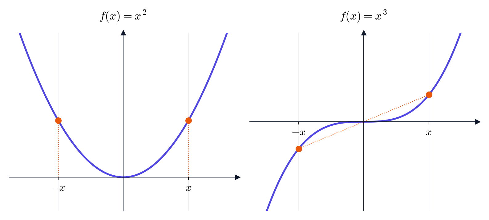
שיטת חישוב — בדיקת זוגיות.
- בודקים שתחום ההגדרה סימטרי סביב \(.0\)
- מחשבים את \(f(-x)\): מציבים \(-x\) בכל מקום שבו מופיע \(,x\) ומפשטים.
- אם התקבל \(,f(x)\) הפונקציה זוגית. אם התקבל \(,-f(x)\) היא אי-זוגית.
- אחרת, כדי להראות שהיא לא זוגית ולא אי-זוגית, מספיק למצוא מספר אחד \(x\) שבו שני השוויונות נכשלים.
דוגמה 1.5.2 — זוגית, אי-זוגית או אף אחת מהן?
סווגו כל פונקציה. אחרי שתבחרו, יופיע החישוב.
(א) \(f(x) = x^4 - 2x^2\)
התחום הוא \(,\mathbb{R}\) והוא סימטרי. נציב \(:-x\) \[\begin{aligned} f(-x) &= (-x)^4 - 2(-x)^2 \\ &= x^4 - 2x^2 \\ &= f(x) \end{aligned}\] (חזקה זוגית “מוחקת” את המינוס: \((-x)^4 = x^4\) ו-\(.(-x)^2 = x^2\)) לכן \(f\) זוגית. מאותה סיבה גם \(x^2\) זוגית, ו-\(|x|\) זוגית כי \(.|{-}x| = |x|\)
(ב) \(f(x) = x^3 - 4x\)
נציב \(:-x\) \[\begin{aligned} f(-x) &= (-x)^3 - 4(-x) \\ &= -x^3 + 4x \\ &= -(x^3 - 4x) \\ &= -f(x) \end{aligned}\] (חזקה אי-זוגית “שומרת” את המינוס: \(.(-x)^3 = -x^3\)) לכן \(f\) אי-זוגית.
(ג) \(f(x) = x^2 + x\)
נציב \(,-x\) ונקבל \(,f(-x) = x^2 - x\) שאינו \(f(x)\) ואינו \(.{-}f(x)\) כדי להראות זאת בוודאות, נבחר מספר, \(:x = 1\) \[f(1) = 1 + 1 = 2, \qquad f(-1) = 1 - 1 = 0\] מתקיים \(,f(-1) \neq f(1)\) ולכן \(f\) אינה זוגית. מתקיים גם \(,f(-1) \neq -f(1) = -2\) ולכן \(f\) אינה אי-זוגית.
שימו לב — למה דורשים תחום סימטרי.
- נגדיר \(f(x) = x^2\) רק על הקטע \(.[-1, 3]\) הנוסחה זהה, אבל הפונקציה אינה זוגית: \(,f(3) = 9\) ו-\(f(-3)\) כלל אינו מוגדר, כי \(-3\) אינו בתחום. בלי תחום סימטרי אין עם מה להשוות.
- רוב הפונקציות אינן זוגיות ואינן אי-זוגיות. “לא זוגית” אינו אומר “אי-זוגית”.
סיכום.
- זוגית: \(,f(-x) = f(x)\) והגרף סימטרי ביחס לציר \(.y\) אי-זוגית: \(,f(-x) = -f(x)\) והגרף סימטרי ביחס לראשית.
- בודקים על ידי הצבה של \(-x\) ופישוט. כדי לשלול, מספיקה דוגמה מספרית אחת.
- רוב הפונקציות אינן זוגיות ואינן אי-זוגיות.
תרגילים
שאלה 1.5.3 — מציבים \(-x\).
חשבו את \(f(-x)\) ופשטו. (בשדה כותבים חזקה עם ^, למשל x^3.)
(א) עבור \(f(x) = x^3 + 2x\): \(f(-x) =\) \(-x^3 - 2x\)
(ב) עבור \(f(x) = x^4 - 3x^2 + 1\): \(f(-x) =\) \(x^4 - 3x^2 + 1\)
(ג) עבור \(f(x) = x^2 + x\): \(f(-x) =\) \(x^2 - x\)
חזקה זוגית “מוחקת” את המינוס, וחזקה אי-זוגית “שומרת” אותו: \((-x)^4 = x^4\) ו-\(.(-x)^3 = -x^3\)
(א) \(,f(-x) = (-x)^3 + 2(-x) = -x^3 - 2x = -f(x)\) ולכן \(f\) אי-זוגית.
(ב) \(,f(-x) = (-x)^4 - 3(-x)^2 + 1 = x^4 - 3x^2 + 1 = f(x)\) ולכן \(f\) זוגית.
(ג) \(f(-x) = x^2 - x\) אינו \(f(x)\) ואינו \(,-f(x)\) ולכן \(f\) אינה זוגית ואינה אי-זוגית.
שאלה 1.5.4 — סווגו.
(א) \(x^5 + x\)
\[\begin{aligned} f(-x) &= (-x)^5 + (-x) \\ &= -x^5 - x \\ &= -(x^5 + x) = -f(x) \end{aligned}\]
(ב) \(x^2 - 7\)
\[\begin{aligned} f(-x) &= (-x)^2 - 7 \\ &= x^2 - 7 = f(x) \end{aligned}\]
(ג) \(x - 1\)
נבחר \(:x = 1\) \[f(1) = 1 - 1 = 0, \qquad f(-1) = -1 - 1 = -2\] מתקיים \(f(-1) \neq f(1)\) ולכן אינה זוגית, וגם \(f(-1) = -2 \neq 0 = -f(1)\) ולכן אינה אי-זוגית.
(ד) \(\frac{1}{x}\)
התחום \(\mathbb{R} \setminus \{0\}\) סימטרי, ו-\(.\frac{1}{-x} = -\frac{1}{x}\)
(ה) \(|x| + x^2\)
\(,|{-}x| = |x|\) ו-\(,(-x)^2 = x^2\) ולכן \(.f(-x) = f(x)\)
(ו) \(\frac{x}{x^2 + 1}\)
המונה מחליף סימן והמכנה לא: \(.f(-x) = \frac{-x}{x^2 + 1} = -f(x)\)
שאלה 1.5.5 — משתמשים בסימטריה.
(א) \(f\) זוגית ו-\(.f(2) = 5\) אז \(f(-2) =\) \(5\)
(ב) \(g\) אי-זוגית ו-\(.g(3) = -4\) אז \(g(-3) =\) \(4\)
(ג) \(h\) אי-זוגית ומוגדרת ב-\(.0\) אז \(h(0) =\) \(0\)
ב-(ג): הציבו \(x = 0\) בהגדרה \(.h(-x) = -h(x)\)
(א) \(.f(-2) = f(2) = 5\) (ב) \(.g(-3) = -g(3) = 4\)
(ג) \(,h(-0) = -h(0)\) כלומר \(.h(0) = -h(0)\) המספר היחיד ששווה למינוס עצמו הוא \(,0\) ולכן \(.h(0) = 0\) לכן הגרף של פונקציה אי-זוגית שמוגדרת ב-\(0\) עובר דרך הראשית.
1.6 הזזה ומתיחה של גרפים
מה עושים כאן? לומדים לקבל הרבה גרפים חדשים מכמה גרפים מוכרים, על ידי הזזה, מתיחה ושיקוף, בלי לחשב אף נקודה מחדש.
אנחנו מכירים מעט גרפים בסיסיים: \(x^2\), \(\sqrt{x}\), \(|x|\), ובהמשך גם \(\sin x\) ו-\(.2^x\) בעזרת הזזות ומתיחות אפשר לקבל מהם הרבה גרפים חדשים, בלי עבודה נוספת.
משפט 1.6.1 — הזזה, מתיחה ושיקוף.
יהי \(c > 0\). הגרף של כל אחת מהפונקציות בטבלה מתקבל מהגרף של \(y = f(x)\) כך:
| הפונקציה החדשה | מה קורה לגרף |
|---|---|
| \(f(x) + c\) | הזזה למעלה ב-\(c\) |
| \(f(x) - c\) | הזזה למטה ב-\(c\) |
| \(f(x - c)\) | הזזה ימינה ב-\(c\) |
| \(f(x + c)\) | הזזה שמאלה ב-\(c\) |
| \(c \, f(x)\) | מתיחה אנכית פי \(;c\) אם \(c < 1\) זה כיווץ |
| \(f(c\,x)\) | כיווץ אופקי פי \(;c\) אם \(c < 1\) זו מתיחה |
| \(-f(x)\) | שיקוף ביחס לציר \(x\) |
| \(f(-x)\) | שיקוף ביחס לציר \(y\) |
שימו לב — ההזזה האופקית הפוכה לאינטואיציה.
הגרף של \(f(x - 2)\) זז ימינה, למרות סימן המינוס. הסיבה: הפונקציה החדשה מקבלת כל ערך בנקודה שנמצאת \(2\) יחידות ימינה יותר. למשל, \(\sqrt{x}\) מתחילה ב-\(,x = 0\) ואילו \(\sqrt{x - 2}\) מתחילה רק ב-\(,x = 2\) כי שם \(.x - 2 = 0\) באותו אופן, הגרף של \(f(2x)\) מתכווץ: הפונקציה החדשה מקבלת כל ערך בנקודה שקרובה פי \(2\) ל-\(.0\)
את הכללים האלה הכי קל להרגיש בידיים. בסימולציה הבאה בוחרים גרף בסיסי ומזיזים את הפרמטרים.
סימולציה 1.6.2 — מעבדת ההזזות.
הסימולציה מציירת את \(y = a \, f\big(b(x - c)\big) + d\) (בקו מלא) לצד הגרף הבסיסי \(y = f(x)\) (בקו מקווקו). נסו:
- להזיז רק את \(c\): לאיזה כיוון זז הגרף כאשר \(c = 2\)?
- לשנות את \(a\) למספר \(-1\): מה קורה?
- לשנות את \(b\) ל-\(2\): הגרף נמתח או מתכווץ?
דוגמה 1.6.3 — משפחת השורש.
נצא מ-\(.y = \sqrt{x}\) איך מתקבל ממנו הגרף של כל אחת מהפונקציות הבאות? \[\sqrt{x + 1}, \quad \sqrt{x} + 1, \quad 3\sqrt{x}, \quad -\sqrt{x}, \quad \sqrt{-x}, \quad \sqrt{x - 2}\]
הצגת התשובות
- \(\sqrt{x + 1}\): הזזה שמאלה ב-\(1\). היא מתחילה ב-\(.x = -1\)
- \(\sqrt{x} + 1\): הזזה למעלה ב-\(1\).
- \(3\sqrt{x}\): מתיחה אנכית פי \(3\).
- \(-\sqrt{x}\): שיקוף ביחס לציר \(x\).
- \(\sqrt{-x}\): שיקוף ביחס לציר \(y\). היא מוגדרת עבור \(.x \le 0\)
- \(\sqrt{x - 2}\): הזזה ימינה ב-\(2\).
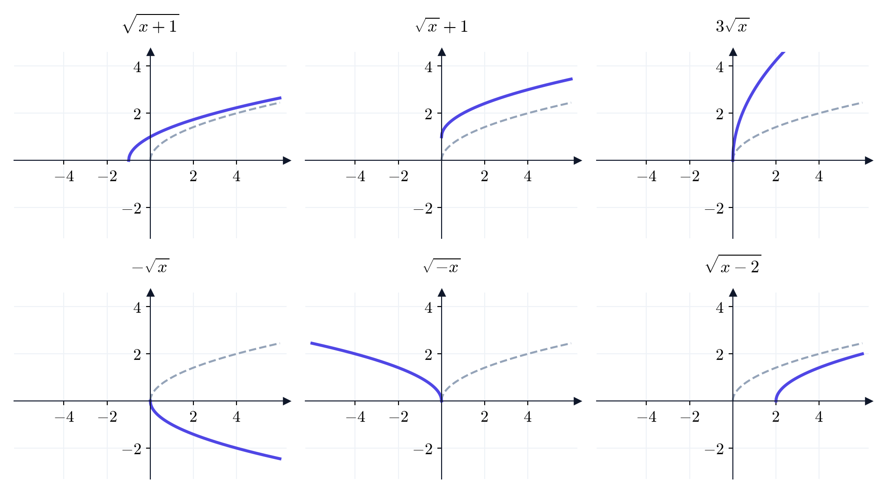
בדיקה עצמית.
לאיזה כיוון זז הגרף של \((x + 5)^2\) ביחס לגרף של \(?x^2\)
בתוך הסוגריים יש \(,x + 5\) כלומר \(f(x + 5)\) עם \(,f(x) = x^2\) ולכן הזזה שמאלה. בדיקה: הקודקוד, שבו מה שבתוך הסוגריים מתאפס, נמצא ב-\(.x = -5\)
שיטת חישוב — ציור גרף בעזרת הזזות.
- מזהים את הגרף הבסיסי.
- רושמים את השינויים: קודם את השינויים בתוך הסוגריים (אופקיים), ואחר כך את אלה מחוץ להם (אנכיים).
- מזיזים כמה נקודות מפתח: נקודות חיתוך עם הצירים, קודקוד, אסימפטוטה. מציירים את הגרף דרכן.
דוגמה 1.6.4 — השלמה לריבוע.
ציירו את \(.f(x) = x^2 - 4x + 7\) איפה הקודקוד, ומהי התמונה?
\(x^2 - 4x + 7 = (x -{}\) \(2\) \()^2 +{}\) \(3\)
הקודקוד הוא \((\)\(2\)\(,{}\) \(3\)\()\)
התמונה היא \([3, \infty)\)
נסו לכתוב את הפונקציה בצורה \((x - h)^2 + k\) (“השלמה לריבוע”). איזה ריבוע מתחיל ב-\(?x^2 - 4x\)
\(.(x - 2)^2 = x^2 - 4x + 4\) כמה חסר כדי להגיע ל-\(?7\)
משלימים לריבוע. מכיוון ש-\(,(x - 2)^2 = x^2 - 4x + 4\) נקבל \[\begin{aligned} x^2 - 4x + 7 &= (x^2 - 4x + 4) + 3 \\ &= (x - 2)^2 + 3 \end{aligned}\] קוראים את השינויים. הגרף הוא הפרבולה \(y = x^2\) אחרי שני שינויים: בתוך הסוגריים \(,x - 2\) ולכן הזזה ימינה ב-\(;2\) מחוץ לסוגריים \(,+3\) ולכן הזזה למעלה ב-\(.3\)
מסקנה. הקודקוד עובר מ-\((0, 0)\) אל \(,(2, 3)\) והתמונה היא \(.[3, \infty)\) בדיקה: \(,f(2) = 4 - 8 + 7 = 3\) כמו שציפינו.
סיכום.
- שינוי מחוץ לסוגריים משפיע על הגרף אנכית, בכיוון הצפוי: הוספת \(c\) מזיזה למעלה, כפל ב-\(c\) מותח, ומינוס משקף.
- שינוי בתוך הסוגריים משפיע אופקית, הפוך לאינטואיציה: \(f(x - c)\) זז ימינה, ו-\(f(cx)\) מתכווץ.
- מציירים על ידי הזזה של כמה נקודות מפתח, כמו הקודקוד.
תרגילים
שאלה 1.6.5 — הקודקוד של \(|x + 3| - 1\).
איך מקבלים את הגרף של \(y = |x + 3| - 1\) מהגרף של \(?y = |x|\) איפה הקודקוד?
הקודקוד הוא \((\)\(-3\)\(,{}\) \(-1\)\()\)
נעבור לפי השיטה:
- הגרף הבסיסי: \(,|x|\) צורת \(V\) שקודקודה ב-\(.(0, 0)\)
- בתוך הערך המוחלט יש \(,x + 3\) כלומר \(f(x + 3)\) עם \(,f(x) = |x|\) ולכן הזזה שמאלה ב-\(.3\)
- מחוץ לערך המוחלט יש \(,-1\) ולכן הזזה למטה ב-\(.1\)
בדיקה: עבור \(x = -3\) מתקבל \(.|{-}3 + 3| - 1 = 0 - 1 = -1\)
שאלה 1.6.6 — מהתיאור לנוסחה.
כתבו את הנוסחה של הפונקציה החדשה. (שורש: sqrt או הכפתור √, ערך מוחלט: |x|.)
(א) מזיזים את \(\sqrt{x}\) ימינה ב-\(3\) ולמעלה ב-\(.1\) \(y =\) \(\sqrt{x - 3} + 1\)
(ב) משקפים את \(x^2\) ביחס לציר \(,x\) ואחר כך מזיזים למעלה ב-\(.4\) \(y =\) \(4 - x^2\)
(ג) מותחים את \(|x|\) אנכית פי \(,2\) ואחר כך מזיזים שמאלה ב-\(.1\) \(y =\) \(2|x + 1|\)
(ד) מזיזים את \(x^2\) שמאלה ב-\(5\) ולמטה ב-\(.2\) \(y =\) \((x + 5)^2 - 2\)
הזזה ימינה ב-\(c\) פירושה להחליף את \(x\) ב-\(;x - c\) הזזה למעלה פירושה להוסיף \(c\) לכל הביטוי.
(א) \(\sqrt{x - 3}\) מזיז ימינה, ו-\(+1\) מזיז למעלה. (ב) השיקוף נותן \(,-x^2\) וההזזה \(.{-}x^2 + 4\) (ג) המתיחה נותנת \(,2|x|\) וההזזה מחליפה את \(x\) ב-\(.x + 1\) (ד) \(.(x + 5)^2 - 2\)
שאלה 1.6.7 — מהפרבולה \(x^2\) אל \(-2(x + 1)^2 + 3\).
מקבלים את הגרף של \(y = -2(x + 1)^2 + 3\) מהגרף של \(y = x^2\) בארבעה צעדים. סדרו אותם לפי השיטה: קודם השינוי שבתוך הסוגריים, ואחר כך אלה שמחוץ להם.
הזזה שמאלה ב-\(1\)
מתיחה אנכית פי \(2\)
שיקוף ביחס לציר \(x\)
הזזה למעלה ב-\(3\)
את המתיחה ואת השיקוף אפשר לבצע בכל סדר, כי \(.{-}2y = 2 \cdot (-y)\) אבל ההזזה למעלה באה אחרי שניהם: אם מזיזים קודם למעלה ב-\(3\) ורק אחר כך משקפים, הקודקוד מגיע ל-\((-1, -3)\) במקום ל-\(.(-1, 3)\)
שאלה 1.6.8 — עוד השלמה לריבוע.
\(x^2 + 6x + 5 = (x +{}\) \(3\) \()^2 -{}\) \(4\)
הקודקוד הוא \((\)\(-3\)\(,{}\) \(-4\)\()\)
התמונה היא \([-4, \infty)\)
\(.(x + 3)^2 = x^2 + 6x + 9\) מה צריך להוסיף או להחסיר כדי לקבל \(?x^2 + 6x + 5\)
\[\begin{aligned} x^2 + 6x + 5 &= (x^2 + 6x + 9) - 4 \\ &= (x + 3)^2 - 4 \end{aligned}\] זו \(x^2\) אחרי הזזה שמאלה ב-\(3\) ולמטה ב-\(.4\) הקודקוד עובר מ-\((0, 0)\) אל \(.(-3, -4)\)
שאלה 1.6.9 — לאן זז הגרף?
(א) הגרף של \(f(x + 2)\) לעומת הגרף של \(:f(x)\)
השינוי בתוך הסוגריים פועל הפוך לאינטואיציה: \(f(x + 2)\) מקבל כל ערך בנקודה שנמצאת \(2\) יחידות שמאלה.
(ב) הגרף של \(f(3x)\) לעומת הגרף של \(:f(x)\)
\(f(3x)\) מקבל כל ערך בנקודה שקרובה פי \(3\) ל-\(,0\) ולכן הגרף מתכווץ אופקית פי \(.3\)
(ג) הקודקוד של \(y = (x - 4)^2 + 1\) הוא:
הזזה ימינה ב-\(4\) ולמעלה ב-\(,1\) ולכן הקודקוד עובר מ-\((0, 0)\) אל \(.(4, 1)\)
1.7 הרכבת פונקציות
מה עושים כאן? מחברים פונקציות בשרשרת: הפלט של אחת הופך לקלט של השנייה. ולהפך: מפרקים נוסחה מסובכת לשלבים פשוטים.
נוסחאות מסובכות בנויות משלבים פשוטים. למשל, כדי לחשב את \(\sqrt{x^2 + 4}\) מחשבים קודם \(x^2 + 4\), ואחר כך את השורש של התוצאה. לזהות את השלבים האלה זו מיומנות חשובה.
הגדרה 1.7.1 — הרכבת פונקציות.
ההרכבה של \(f\) ו-\(g\) היא הפונקציה \[,(f \circ g)(x) = f\big(g(x)\big)\] כלומר “קודם \(g\), ואחר כך \(f\)”. תחום ההגדרה של \(f \circ g\) הוא כל ה-\(x\) שבתחום של \(g\), ושעבורם \(g(x)\) בתחום של \(.f\)
בשפה של מכונות: מעמידים שתי מכונות בשורה. מכניסים את \(x\) למכונה \(,g\) ואת מה שיצא ממנה מכניסים למכונה \(.f\) שימו לב שקוראים את \(f \circ g\) מימין לשמאל: \(g\) פועלת ראשונה.
דוגמה 1.7.2 — הרכבה בשני הסדרים.
יהיו \(f(x) = x^2\) ו-\(.g(x) = x + 4\) חשבו את \(f \circ g\) ואת \(,g \circ f\) ואת הערכים שלהן ב-\(.x = 1\)
- \((f \circ g)(x) =\) \((x + 4)^2\)
- \((g \circ f)(x) =\) \(x^2 + 4\)
- \((f \circ g)(1) =\) \(25\)
- \((g \circ f)(1) =\) \(5\)
ב-\(f \circ g\) מפעילים קודם את \(:g\) \[\begin{aligned} (f \circ g)(x) &= f\big(g(x)\big) \\ &= f(x + 4) \\ &= (x + 4)^2 \end{aligned}\] ב-\(g \circ f\) מפעילים קודם את \(:f\) \[\begin{aligned} (g \circ f)(x) &= g\big(f(x)\big) \\ &= g(x^2) \\ &= x^2 + 4 \end{aligned}\] עבור \(:x = 1\) \[(f \circ g)(1) = (1 + 4)^2 = 25, \qquad (g \circ f)(1) = 1^2 + 4 = 5\]
שימו לב — הסדר חשוב.
באופן כללי \(.f \circ g \neq g \circ f\) בדוגמה האחרונה, “קודם להוסיף \(4\) ואחר כך לרבע” שונה מ”קודם לרבע ואחר כך להוסיף \(4\)“.
דוגמה 1.7.3 — תחום ההגדרה של הרכבה.
יהיו \(f(x) = \sqrt{x}\) ו-\(.g(x) = x - 5\) מהי \(,f \circ g\) ומהו תחום ההגדרה שלה?
\((f \circ g)(x) =\) \(\sqrt{x - 5}\) ותחום ההגדרה שלה הוא \([5, \infty)\)
\[.(f \circ g)(x) = f(x - 5) = \sqrt{x - 5}\] הפונקציה \(g\) מוגדרת לכל \(,x\) אבל את הפלט שלה מכניסים לשורש, ולכן צריך \(,g(x) \ge 0\) כלומר \[\begin{aligned} x - 5 &\ge 0 \\ x &\ge 5 \end{aligned}\] תחום ההגדרה של ההרכבה הוא \(,[5, \infty)\) והוא קטן מתחום ההגדרה של \(.g\)
שימו לב — למה צריך את התנאי על התחום.
יהיו \(f(x) = \sqrt{x}\) ו-\(.g(x) = -1 - x^2\) הערך \(g(x)\) תמיד שלילי, ולכן \(\sqrt{g(x)}\) אינו מוגדר לאף \(x\): תחום ההגדרה של \(f \circ g\) הוא הקבוצה הריקה. לא מספיק ש-\(f\) ו-\(g\) מוגדרות; צריך שהפלט של \(g\) יהיה קלט חוקי של \(.f\)
שיטת חישוב — פירוק לשלבים.
כדי לכתוב פונקציה כהרכבה, שואלים: “מה מחשבים קודם?” זו הפונקציה הפנימית \(.g\) “מה עושים לתוצאה?” זו הפונקציה החיצונית \(.f\)
דוגמה 1.7.4 — פירוק להרכבה.
כתבו כל פונקציה בצורה \(.f(g(x))\)
(א) \(\sqrt{x^2 + 4}\)
תשובה לסעיף (א)
\(\sqrt{x^2 + 4} = f(g(x))\) עבור \(g(x) = x^2 + 4\) (קודם) ו-\(f(x) = \sqrt{x}\) (אחר כך).
(ב) \((3x - 1)^7\)
תשובה לסעיף (ב)
\((3x - 1)^7 = f(g(x))\) עבור \(g(x) = 3x - 1\) ו-\(.f(x) = x^7\)
בדיקה עצמית.
יהיו \(f(x) = x^2\) ו-\(.g(x) = x + 4\) מהו \(?(f \circ g)(0)\)
קודם \(:g\) \(,g(0) = 4\) ואחר כך \(:f\) \(.f(4) = 16\) התשובה \(4\) מתקבלת בסדר ההפוך, \(.(g \circ f)(0)\)
סיכום.
- \((f \circ g)(x) = f(g(x))\): קודם \(,g\) ואחר כך \(.f\) בדרך כלל \(.f \circ g \neq g \circ f\)
- תחום ההגדרה של \(f \circ g\): ה-\(x\) שבתחום של \(,g\) שהפלט שלהם הוא קלט חוקי של \(.f\)
- כדי לפרק: “מה מחשבים קודם?” זו הפנימית; “מה עושים לתוצאה?” זו החיצונית.
תרגילים
שאלה 1.7.5 — הרכבה ותחום.
יהיו \(f(x) = \frac{1}{x}\) ו-\(.g(x) = x - 2\) (את \(\mathbb{R}\) בלי הנקודה \(5\) כותבים R-{5}.)
- \((f \circ g)(x) =\) \(\frac{1}{x - 2}\) ותחום ההגדרה שלה \(\mathbb{R} \setminus \{2\}\)
- \((g \circ f)(x) =\) \(\frac{1}{x} - 2\) ותחום ההגדרה שלה \(\mathbb{R} \setminus \{0\}\)
ההרכבה \(f \circ g\): קודם \(,g\) ואחר כך \(:f\) \[.(f \circ g)(x) = f(x - 2) = \frac{1}{x - 2}\] המכנה חייב להיות שונה מאפס: \(,x - 2 \neq 0\) כלומר \(.x \neq 2\)
ההרכבה \(g \circ f\): קודם \(,f\) ואחר כך \(:g\) \[.(g \circ f)(x) = g\left(\frac{1}{x}\right) = \frac{1}{x} - 2\] כאן \(f\) עצמה דורשת \(,x \neq 0\) ואחרי זה \(g\) מוגדרת לכל מספר.
שאלה 1.7.6 — מחשבים הרכבות.
יהיו \(f(x) = 2x - 1\) ו-\(.g(x) = x^2\)
(א) \((f \circ g)(x) =\) \(2x^2 - 1\)
(ב) \((g \circ f)(x) =\) \((2x - 1)^2\)
(ג) \((f \circ f)(x) =\) \(4x - 3\)
(ד) \((f \circ g)(3) =\) \(17\)
ב-\(f \circ g\) מציבים את \(g(x)\) במקום כל \(x\) בנוסחה של \(.f\)
(א) \(.f(g(x)) = f(x^2) = 2x^2 - 1\) (ב) \(.g(f(x)) = g(2x - 1) = (2x - 1)^2\)
(ג) \[\begin{aligned} f(f(x)) &= f(2x - 1) \\ &= 2(2x - 1) - 1 \\ &= 4x - 3 \end{aligned}\] (ד) קודם \(,g(3) = 9\) ואחר כך \(.f(9) = 17\)
שאלה 1.7.7 — הרכבה מטבלה.
הפונקציות \(f\) ו-\(g\) נתונות בטבלה:
| \(x\) | \(1\) | \(2\) | \(3\) |
|---|---|---|---|
| \(f(x)\) | \(3\) | \(1\) | \(2\) |
| \(g(x)\) | \(2\) | \(3\) | \(1\) |
(א) \((f \circ g)(1) =\) \(1\)
(ב) \((g \circ f)(1) =\) \(1\)
(ג) \((f \circ f)(2) =\) \(3\)
(ד) \((g \circ g)(3) =\) \(2\)
מבפנים החוצה: ב-(א) מחפשים קודם את \(g(1)\) בטבלה, ואחר כך את \(f\) של התוצאה.
(א) \(,g(1) = 2\) ו-\(.f(2) = 1\) (ב) \(,f(1) = 3\) ו-\(.g(3) = 1\) (ג) \(,f(2) = 1\) ו-\(.f(1) = 3\) (ד) \(,g(3) = 1\) ו-\(.g(1) = 2\)
שאלה 1.7.8 — תחום ההגדרה של הרכבה.
יהיו \(f(x) = \sqrt{x}\) ו-\(.g(x) = x - 3\)
(א) תחום ההגדרה של \(f \circ g\) הוא \([3, \infty)\)
(ב) תחום ההגדרה של \(g \circ f\) הוא \([0, \infty)\)
(א) \(,(f \circ g)(x) = \sqrt{x - 3}\) וצריך \(,x - 3 \ge 0\) כלומר \(.x \ge 3\)
(ב) \(,(g \circ f)(x) = \sqrt{x} - 3\) ו-\(f\) דורשת \(.x \ge 0\) אחרי זה \(g\) מוגדרת לכל מספר.
שאלה 1.7.9 — פירוק להרכבה.
כתבו כל פונקציה בצורה \(.f(g(x))\)
(א) \((x^2 + 1)^5\)
תשובה לסעיף (א)
\(g(x) = x^2 + 1\) (קודם) ו-\(f(x) = x^5\) (אחר כך).
(ב) \(\sqrt{3x - 2}\)
תשובה לסעיף (ב)
\(g(x) = 3x - 2\) ו-\(.f(x) = \sqrt{x}\)
(ג) \(|x^3 - 1|\)
תשובה לסעיף (ג)
\(g(x) = x^3 - 1\) ו-\(.f(x) = |x|\) יש גם פירוקים אחרים, למשל \(g(x) = x^3\) ו-\(:f(x) = |x - 1|\) גם הוא נכון.
1.8 פולינומים ושורשיהם
מה עושים כאן? מכירים את הפונקציות שבנויות רק מחיבור וכפל, ולומדים למצוא איפה הן מתאפסות.
הפונקציות הפשוטות ביותר הן אלה שמשתמשות רק בחיבור ובכפל. הן מוגדרות בכל מקום, וקל לחשב אותן.
הגדרה 1.8.1 — פולינום.
פולינום הוא פונקציה מהצורה \[,P(x) = a_n x^n + a_{n-1} x^{n-1} + \dots + a_1 x + a_0\] כאשר \(a_0, \dots, a_n\) מספרים ממשיים (המקדמים) ו-\(.a_n \neq 0\) המספר \(n\) נקרא המעלה של \(.P\) שורש של \(P\) הוא מספר \(r\) שעבורו \(.P(r) = 0\)
הדרישה \(a_n \neq 0\) קובעת את המעלה: בלעדיה, \(0 \cdot x^3 + x + 1\) היה “פולינום ממעלה \(3\)”, אף שזו פשוט הפונקציה \(.x + 1\) פולינום ממעלה \(1\) הוא ישר, וממעלה \(2\) הוא פרבולה. בגרף, השורשים הם הנקודות שבהן הגרף חותך את ציר \(x\) או נוגע בו.
משפט 1.8.2 — שורשים של פולינומים.
(א) \(r\) הוא שורש של \(P\) אם ורק אם אפשר לכתוב \(,P(x) = (x - r) \, Q(x)\) כאשר \(Q\) פולינום ממעלה אחת פחות.
(ב) לפולינום ממעלה \(n\) יש לכל היותר \(n\) שורשים ממשיים.
(ג) נוסחת השורשים: לפולינום \(ax^2 + bx + c\) (עם \(a \neq 0\)) נסמן \(\Delta = b^2 - 4ac\) (הדיסקרימיננטה). אם \(,\Delta < 0\) אין שורשים ממשיים. אם \(,\Delta \ge 0\) השורשים הם \[,x = \frac{-b \pm \sqrt{\Delta}}{2a}\] ויש שני שורשים אם \(\Delta > 0\) ושורש אחד אם \(.\Delta = 0\)
שימו לב — לכל היותר, לא בדיוק.
לפולינום ממעלה \(n\) יכולים להיות פחות מ-\(n\) שורשים. למשל ל-\(x^2 + 4\) אין שורשים ממשיים כלל: \(x^2 + 4 \ge 4 > 0\) לכל \(.x\)
שיטת חישוב — מציאת שורשים.
- מוציאים גורם משותף, למשל \(.x^3 - 9x = x(x^2 - 9)\)
- מזהים נוסחאות כפל מקוצר: \(a^2 - b^2 = (a - b)(a + b)\) ו-\(.a^2 \pm 2ab + b^2 = (a \pm b)^2\)
- לפולינום ממעלה \(2\) משתמשים בנוסחת השורשים.
- לפולינום ממעלה \(3\) מנחשים שורש שלם \(r\) מבין המחלקים של \(a_0\) (כולל השליליים). לפי (א), \(,P(x) = (x - r)Q(x)\) כאשר \(Q\) ממעלה \(,2\) ואת \(Q\) מוצאים בחילוק של \(P\) ב-\(x - r\) (או בניחוש, ובדיקה בכפל). לבסוף מוצאים את השורשים של \(.Q\)
דוגמה 1.8.3 — מציאת שורשים.
מצאו את השורשים. את קבוצת השורשים כותבים כרשימה, למשל {1,2} (ואם אין שורשים: {}).
(א) \(x^2 - x - 6\)
\(\Delta =\) \(25\) והשורשים: \(\{-2, 3\}\)
נשתמש בנוסחת השורשים עם \(,a = 1\) \(b = -1\) ו-\(:c = -6\) \[\begin{aligned} \Delta &= b^2 - 4ac \\ &= (-1)^2 - 4 \cdot 1 \cdot (-6) \\ &= 1 + 24 = 25 \\ x &= \frac{-b \pm \sqrt{\Delta}}{2a} = \frac{1 \pm 5}{2} \end{aligned}\] כלומר \(x = \frac{6}{2} = 3\) או \(.x = \frac{-4}{2} = -2\) לפי (א) במשפט, \(.x^2 - x - 6 = (x - 3)(x + 2)\)
(ב) \(x^3 - 9x\)
פותרים את המשוואה \(x^3 - 9x = 0\) צעד אחר צעד. (חזקה כותבים עם ^, למשל x^3. בין כמה אפשרויות כותבים “או”, למשל x=0 או x=3.)
נוציא גורם משותף \(,x\) ואחר כך נשתמש ב-\(.a^2 - b^2 = (a - b)(a + b)\)
מכפלה מתאפסת כאשר אחד הגורמים מתאפס. כתבו את כל האפשרויות בשורה אחת, עם “או” ביניהן.
פתרון. \[\begin{aligned} x^3 - 9x &= 0 \\ x(x^2 - 9) &= 0 \\ x(x - 3)(x + 3) &= 0 \end{aligned}\] ולכן \(x = 0\) או \(x - 3 = 0\) או \(,x + 3 = 0\) כלומר \(x = 0\) או \(x = 3\) או \(.x = -3\)
השורשים: \(\{-3, 0, 3\}\)
מכפלה מתאפסת כאשר אחד הגורמים מתאפס, ולכן השורשים הם \(0\), \(3\) ו-\(.{-}3\)
(ג) \(x^2 + 4\)
השורשים: \(\emptyset\)
כאן \(:\Delta = 0^2 - 4 \cdot 1 \cdot 4 = -16 < 0\) אין שורשים ממשיים.
(ד) \(x^2 + 6x + 9\)
השורשים: \(\{-3\}\)
זו נוסחת הכפל המקוצר \(:(a + b)^2 = a^2 + 2ab + b^2\) \[\begin{aligned} x^2 + 6x + 9 &= x^2 + 2 \cdot 3 \cdot x + 3^2 \\ &= (x + 3)^2 \end{aligned}\] יש שורש יחיד, \(,-3\) ושם הגרף נוגע בציר \(x\) בלי לחצות אותו. (שורש כזה נקרא שורש כפול.) גם הדיסקרימיננטה מראה זאת: \(.\Delta = 36 - 36 = 0\)
(ה) \(x^3 - 2x^2 - x + 2\)
זה פולינום ממעלה \(.3\) לפי השיטה, מנחשים שורש שלם בין המחלקים של \(,a_0 = 2\) כלומר \(.\pm 1, \pm 2\)
מנחשים שורש. ננסה את \(:x = 1\) \[1^3 - 2 \cdot 1^2 - 1 + 2 = 1 - 2 - 1 + 2 = 0\] לכן \(1\) שורש.
מוציאים גורם. לפי (א) במשפט אפשר להוציא את הגורם \(.(x - 1)\) אפשר לבדוק בכפל ש-\[.x^3 - 2x^2 - x + 2 = (x - 1)(x^2 - x - 2)\]
מפרקים את הריבועי. את \(x^2 - x - 2\) מפרקים כמו ב-(א): \(.x^2 - x - 2 = (x - 2)(x + 1)\) לכן \[x^3 - 2x^2 - x + 2 = (x - 1)(x - 2)(x + 1)\] והשורשים הם \(1\), \(2\) ו-\(.{-}1\)
השורשים: \(\{-1, 1, 2\}\)
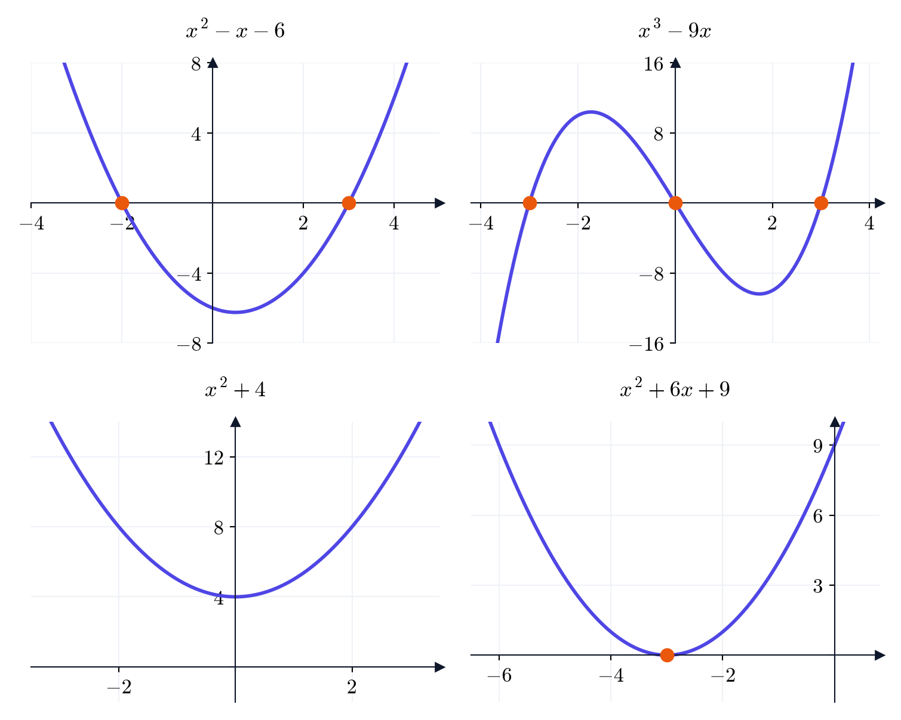
בדיקה עצמית.
כמה שורשים ממשיים יש ל-\(?x^2 + 2x + 5\)
\(,\Delta = 2^2 - 4 \cdot 1 \cdot 5 = 4 - 20 = -16\) ו-\(,\Delta < 0\) ולכן אין שורשים ממשיים.
סיכום.
- פולינום בנוי מחזקות של \(x\) עם מקדמים. המעלה היא החזקה הגבוהה ביותר, ושורש הוא מקום שבו הפולינום מתאפס.
- \(r\) שורש בדיוק כאשר \((x - r)\) גורם של הפולינום. לפולינום ממעלה \(n\) יש לכל היותר \(n\) שורשים.
- ריבועי: נוסחת השורשים, והדיסקרימיננטה \(\Delta\) קובעת כמה שורשים יש. מעוקב: מנחשים שורש שלם בין המחלקים של \(.a_0\)
תרגילים
שאלה 1.8.4 — מעלה, מקדם, ערך.
יהי \(.P(x) = 4x^3 - x + 7\)
המעלה של \(P\) היא \(3\), המקדם \(a_0 =\) \(7\), ו-\(P(-1) =\) \(4\)
החזקה הגבוהה ביותר היא \(,x^3\) ו-\(a_0\) הוא המקדם בלי \(,x\) כלומר \(.7\) הצבה: \(.P(-1) = 4 \cdot (-1)^3 - (-1) + 7 = -4 + 1 + 7 = 4\)
שאלה 1.8.5 — מוצאים שורשים.
מצאו את קבוצת השורשים: פתרו את המשוואה \(P(x) = 0\) צעד אחר צעד. קודם מוציאים גורם משותף ומחפשים כפל מקוצר; אם לא הולך, נוסחת השורשים. (את הקבוצה כותבים כרשימה, למשל {1,2}; אם אין שורשים: {}.)
(א) \(3x^2 - 12\)
פתרון. \[\begin{aligned} 3x^2 - 12 &= 0 \\ 3x^2 &= 12 \\ x^2 &= 4 \end{aligned}\] ולכן \(x = 2\) או \(.x = -2\) (הוספנו \(,12\) חילקנו ב-\(3\) והוצאנו שורש. אפשר גם לפרק: \(.3x^2 - 12 = 3(x - 2)(x + 2)\))
השורשים: \(\{-2, 2\}\)
(ב) \(x^3 - x^2\)
פתרון. \[\begin{aligned} x^3 - x^2 &= 0 \\ x^2(x - 1) &= 0 \end{aligned}\] ולכן \(x = 0\) או \(,x - 1 = 0\) כלומר \(x = 0\) או \(.x = 1\) השורש \(0\) הוא שורש כפול, כי הגורם \(x\) מופיע פעמיים.
השורשים: \(\{0, 1\}\)
(ג) \(x^2 - 5x + 6\)
חפשו שני מספרים שסכומם \(5\) ומכפלתם \(.6\)
פתרון. \[\begin{aligned} x^2 - 5x + 6 &= 0 \\ (x - 2)(x - 3) &= 0 \end{aligned}\] ולכן \(x - 2 = 0\) או \(,x - 3 = 0\) כלומר \(x = 2\) או \(.x = 3\)
השורשים: \(\{2, 3\}\)
(ד) \(2x^2 + x - 1\)
נוסחת השורשים עם \(,a = 2\) \(b = 1\) ו-\(.c = -1\) בחרו “נוסחת השורשים”, וכתבו את שני הפתרונות בשורה אחת עם “או” ביניהם.
פתרון. \(,\Delta = 1 + 8 = 9\) ולכן \(,x = \frac{-1 \pm 3}{4}\) כלומר \(x = \frac{1}{2}\) או \(.x = -1\)
השורשים: \(\left\{-1, \frac{1}{2}\right\}\)
(ה) \(x^2 - 10x + 25\)
פתרון. \[\begin{aligned} x^2 - 10x + 25 &= 0 \\ (x - 5)^2 &= 0 \\ x - 5 &= 0 \\ x &= 5 \end{aligned}\] זה שורש כפול.
השורשים: \(\{5\}\)
(ו) \(x^2 + x + 1\)
השורשים: \(\emptyset\)
\(,\Delta = 1 - 4 = -3 < 0\) ולכן אין שורשים ממשיים, ואין מה לפתור צעד אחר צעד.
(ז) \(x^3 - 4x\)
פתרון. \[\begin{aligned} x^3 - 4x &= 0 \\ x(x - 2)(x + 2) &= 0 \end{aligned}\] ולכן \(x = 0\) או \(x = 2\) או \(.x = -2\)
השורשים: \(\{-2, 0, 2\}\)
שאלה 1.8.6 — כתבו כמכפלה.
פרקו לגורמים. (את התשובה כותבים כמכפלה, למשל (x-1)(x+2).)
(א) \(x^2 - 9 =\) \((x - 3)(x + 3)\)
(ב) \(x^2 - 7x + 12 =\) \((x - 3)(x - 4)\)
(ג) \(x^3 - x =\) \(x(x - 1)(x + 1)\)
אם \(r\) שורש, \((x - r)\) גורם. מצאו קודם את השורשים.
(א) \(.a^2 - b^2 = (a - b)(a + b)\) (ב) השורשים הם \(3\) ו-\(,4\) כי \(3 + 4 = 7\) ו-\(.3 \cdot 4 = 12\) (ג) מוציאים \(,x\) ואז \(.x^2 - 1 = (x - 1)(x + 1)\)
שאלה 1.8.7 — כמה שורשים?
(א) \(x^2 - 6x + 9\)
\(,\Delta = 36 - 36 = 0\) ולכן יש שורש אחד, \(x = 3\) (שורש כפול).
(ב) \(3x^2 + 2x + 1\)
\(.\Delta = 4 - 12 = -8 < 0\)
(ג) \(x^2 - 2\)
\(,\Delta = 0 + 8 = 8 > 0\) והשורשים הם \(.\pm\sqrt{2}\)
שאלה 1.8.8 — פולינום ממעלה שלוש.
מצאו את השורשים של \(.x^3 - 3x^2 - x + 3\) פתרו את המשוואה \(x^3 - 3x^2 - x + 3 = 0\) צעד אחר צעד.
נחשו שורש בין המחלקים של \(:3\) \(.\pm 1, \pm 3\)
\(,1 - 3 - 1 + 3 = 0\) ולכן \(1\) שורש, ואפשר להוציא את הגורם \(.(x - 1)\) בדקו בכפל ש-\(.x^3 - 3x^2 - x + 3 = (x - 1)(x^2 - 2x - 3)\)
פתרון. \[\begin{aligned} x^3 - 3x^2 - x + 3 &= 0 \\ (x - 1)(x^2 - 2x - 3) &= 0 \\ (x - 1)(x - 3)(x + 1) &= 0 \end{aligned}\] ולכן \(x = 1\) או \(x = 3\) או \(.x = -1\) בשורה השנייה הוצאנו את הגורם \((x - 1)\) של השורש שניחשנו, ובשלישית פירקנו את הריבועי.
השורשים: \(\{-1, 1, 3\}\)
שאלה 1.8.9 — שלבי הפתרון של פולינום ממעלה שלוש.
סדרו את השלבים למציאת השורשים של \(.x^3 + 2x^2 - 5x - 6\)
מנסים את המחלקים של \(:{-}6\) \(.\pm 1, \pm 2, \pm 3, \pm 6\)
מגלים שהמספר \(-1\) הוא שורש: \(.{-}1 + 2 + 5 - 6 = 0\)
מוציאים את הגורם \(,(x + 1)\) ומקבלים \(.(x + 1)(x^2 + x - 6)\)
מפרקים את הגורם הריבועי: \(.x^2 + x - 6 = (x + 3)(x - 2)\)
רושמים את השורשים: \(-1\), \(-3\) ו-\(.2\)
שאלה 1.8.10 — בונים פולינום.
כתבו פולינום ממעלה \(,3\) עם מקדם מוביל \(,1\) שהשורשים שלו הם \(1\), \(2\) ו-\(.{-}3\) (כתבו אותו כמכפלה.)
\(P(x) =\) \((x - 1)(x - 2)(x + 3)\)
לפי (א) במשפט, כל שורש \(r\) נותן גורם \(.(x - r)\) שלושה גורמים נותנים מעלה \(,3\) והמקדם של \(x^3\) במכפלה הוא \(.1\)
1.9 הפונקציות הטריגונומטריות
מה עושים כאן? מגדירים את \(\sin\) ואת \(\cos\) על ידי הליכה על מעגל, ומקבלים מהציור את כל התכונות שלהן: מחזוריות, ערכים מיוחדים והגרפים.
הפונקציות הטריגונומטריות צמחו מהניסיון למדוד: לחשב אורכים וזוויות במשולשים, במדידת קרקעות ובאסטרונומיה. כבר בבבל העתיקה מדדו זוויות (משם מגיעה החלוקה של המעגל ל-\(360\) מעלות), וביוון העתיקה נבנו טבלאות שקושרות בין זוויות לאורכים במעגל. מאז הן מופיעות בכל מקום שבו יש סיבוב או תנודה. נגדיר את \(\sin\) ואת \(\cos\) בעזרת מעגל, וכל התכונות שלהן ינבעו מהציור.
רדיאנים
מעגל היחידה הוא המעגל שמרכזו בראשית ורדיוסו \(1\). היקפו \(.2\pi\)
הגדרה 1.9.1 — רדיאן.
את הזווית מודדים לפי אורך הקשת שהיא חותכת על מעגל היחידה. היחידה נקראת רדיאן. הזווית שווה למרחק שהולכים על המעגל: זווית של \(\theta\) רדיאנים היא בדיוק הליכה של מרחק \(\theta\) לאורך מעגל היחידה, מהנקודה \((1, 0)\) נגד כיוון השעון.
מכיוון שהיקף המעגל הוא \(2\pi\):
- סיבוב שלם הוא \(;2\pi\)
- חצי סיבוב הוא \(;\pi\)
- רבע סיבוב (זווית ישרה) הוא \(.\frac{\pi}{2}\)
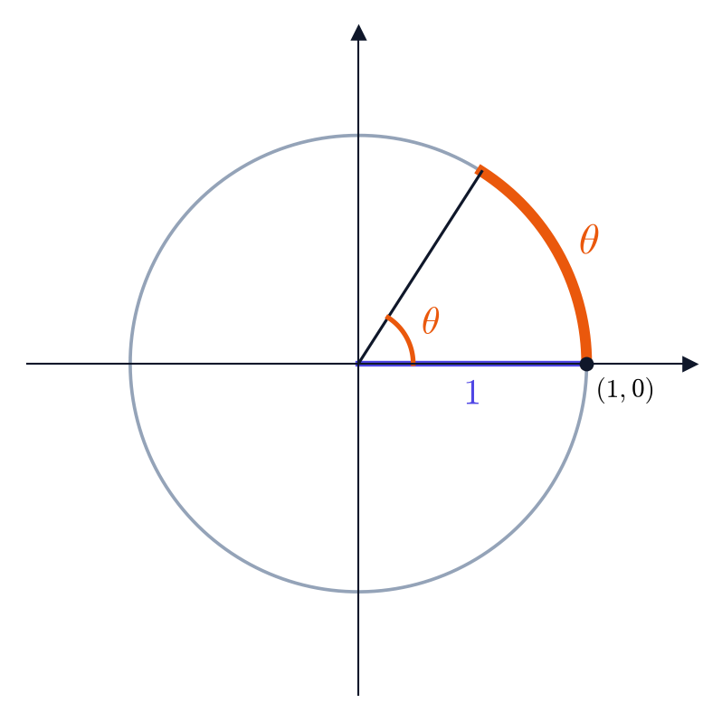
חשוב לזכור — למה רדיאנים.
ברדיאנים הזווית היא אורך, ולכן היא מספר ממשי רגיל, על אותו ישר כמו כל שאר המספרים בקורס. החלוקה ל-\(360\) מעלות שרירותית. לאורך כל הקורס זוויות יימדדו ברדיאנים. (רק כדי להתמצא: \(\pi\) רדיאנים הם \(180\) מעלות.)
בדיקה עצמית.
כמה רדיאנים הם שלושה רבעים של סיבוב?
סיבוב שלם הוא \(,2\pi\) ולכן שלושה רבעים ממנו הם \(.\frac{3}{4} \cdot 2\pi = \frac{3\pi}{2}\) התשובה \(\frac{3\pi}{4}\) היא שלושה רבעים של חצי סיבוב.
ההגדרה הגאומטרית
הגדרה 1.9.2 — סינוס וקוסינוס.
מתחילים בנקודה \((1, 0)\) והולכים לאורך מעגל היחידה מרחק \(\theta\): נגד כיוון השעון אם \(,\theta > 0\) ועם כיוון השעון אם \(.\theta < 0\) את השיעורים של הנקודה שמגיעים אליה מסמנים \(\cos\theta\) ו-\(,\sin\theta\) כלומר הנקודה היא \(.(\cos\theta, \sin\theta)\)
כלומר, \(\cos\theta\) הוא שיעור ה-\(x\) של הנקודה, ו-\(\sin\theta\) הוא שיעור ה-\(y\) שלה.
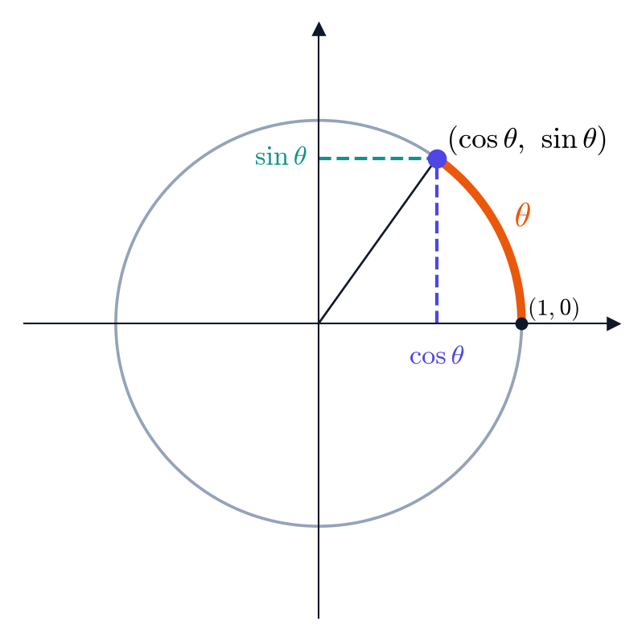
סימולציה 1.9.3 — הולכים על מעגל היחידה.
הזיזו את \(\theta\) (או לחצו על “הליכה”). משמאל: הנקודה \((\cos\theta, \sin\theta)\) על המעגל, הרדיוס אליה והזווית \(\theta\) שהוא יוצר עם ציר \(.x\) הקו המקווקו היורד מהנקודה אל ציר \(x\) נוחת ב-\(,\cos\theta\) והקו אל ציר \(y\) נוחת ב-\(.\sin\theta\) אחרי סיבוב שלם הזווית ממשיכה על אותו מעגל, בצבע אחר. מימין: הגובה של הנקודה, \(,\sin\theta\) מסומן מעל \(.\theta\)
שימו לב: הזווית \(\theta\) שווה לאורך הקשת שהלכנו על המעגל. לכן “ללכת מרחק \(\theta\) על המעגל” ו”לסובב את הרדיוס בזווית \(\theta\)” הם אותו דבר.
נסו לענות לפני שאתם בודקים:
- איפה הנקודה כאשר \(?\theta = \pi\) מה הם \(\cos\pi\) ו-\(?\sin\pi\)
- מה קורה אחרי \(?\theta = 2\pi\)
- מה הערך הגדול ביותר של \(?\sin\theta\)
מה רואים בציור
כל התכונות הבסיסיות של \(\sin\) ו-\(\cos\) נובעות ישירות מההגדרה:
משפט 1.9.4 — תכונות הסינוס והקוסינוס.
לכל \(\theta\) ממשי:
(א) סיבוב שלם: \(\sin(\theta + 2\pi) = \sin\theta\) ו-\(.\cos(\theta + 2\pi) = \cos\theta\)
(ב) חסימות: \(-1 \le \sin\theta \le 1\) ו-\(.{-}1 \le \cos\theta \le 1\)
(ג) זהות פיתגורס: \(.\sin^2\theta + \cos^2\theta = 1\)
(ד) זוגיות: \(\cos(-\theta) = \cos\theta\) ו-\(.\sin(-\theta) = -\sin\theta\)
(ה) חצי סיבוב: \(\sin(\theta + \pi) = -\sin\theta\) ו-\(.\cos(\theta + \pi) = -\cos\theta\)
(ו) שיקוף ביחס לציר \(y\): \(\sin(\pi - \theta) = \sin\theta\) ו-\(.\cos(\pi - \theta) = -\cos\theta\)
(ז) זווית משלימה: \(\sin\left(\frac{\pi}{2} - \theta\right) = \cos\theta\) ו-\(.\cos\left(\frac{\pi}{2} - \theta\right) = \sin\theta\)
מאיפה זה בא? כל תכונה היא ציור
כל אחת מהתכונות היא תיאור של מה שקורה על המעגל:
- (א) הליכה של עוד \(2\pi\) היא עוד סיבוב שלם, שמחזיר אותנו לאותה נקודה.
- (ב) כל נקודה על מעגל היחידה נמצאת בין \(-1\) ל-\(1\) בכל אחד מהשיעורים.
- (ג) המרחק של הנקודה מהראשית הוא \(1\), ולפי משפט פיתגורס \(.\cos^2\theta + \sin^2\theta = 1^2\)
- (ד) הליכה של \(-\theta\) (עם כיוון השעון) מגיעה לשיקוף של הנקודה ביחס לציר \(x\): שיעור ה-\(x\) נשאר, ושיעור ה-\(y\) מחליף סימן.
- (ה) עוד חצי סיבוב מביא אותנו לנקודה הנגדית במעגל, ששני השיעורים שלה מחליפים סימן.
- (ו) הנקודות שמתאימות ל-\(\theta\) ול-\(\pi - \theta\) הן שיקוף זו של זו ביחס לציר \(.y\)
- (ז) הנקודות שמתאימות ל-\(\theta\) ול-\(\frac{\pi}{2} - \theta\) הן שיקוף זו של זו ביחס לישר \(y = x\), ושיקוף כזה מחליף בין השיעורים.
לתכונה (א) יש שם: מחזוריות.
הגדרה 1.9.5 — פונקציה מחזורית.
פונקציה \(f\) נקראת מחזורית עם מחזור \(T > 0\) אם \(f(x + T) = f(x)\) לכל \(.x\) בדרך כלל, “המחזור” הוא ה-\(T\) הקטן ביותר שמקיים זאת.
לפי (א), \(\sin\) ו-\(\cos\) מחזוריות עם מחזור \(.2\pi\) ולפי (ד), \(\cos\) זוגית ו-\(\sin\) אי-זוגית.
דוגמה 1.9.6 — פונקציה מחזורית בלי טריגונומטריה.
הפונקציה \(f(x) = x - \lfloor x \rfloor\) נקראת “החלק השברי” של \(.x\) חשבו את \(,f(2.3)\) \(f(5.3)\) ו-\(.f(-0.7)\) מה אתם מנחשים?
הצגת הפתרון
\[\begin{aligned} f(2.3) &= 2.3 - 2 = 0.3 \\ f(5.3) &= 5.3 - 5 = 0.3 \\ f(-0.7) &= -0.7 - (-1) = 0.3 \end{aligned}\] הפונקציה מחזורית עם מחזור \(.1\) מעבר מ-\(x\) ל-\(x + 1\) מגדיל את \(x\) ב-\(1\) וגם את \(\lfloor x \rfloor\) ב-\(,1\) ולכן ההפרש לא משתנה: \[\begin{aligned} f(x + 1) &= (x + 1) - \lfloor x + 1 \rfloor \\ &= (x + 1) - (\lfloor x \rfloor + 1) \\ &= x - \lfloor x \rfloor = f(x) \end{aligned}\] התמונה של \(f\) היא \(.[0, 1)\)
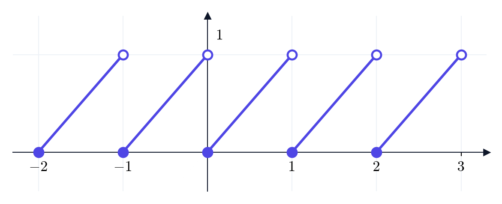
ערכים מיוחדים
את הערכים בזוויות המיוחדות לא צריך לשנן: אפשר לקבל אותם מציור.
דוגמה 1.9.7 — ארבע הנקודות על הצירים.
לאן מגיעים אחרי \(\theta = 0\), \(\frac{\pi}{2}\), \(\pi\) ו-\(?\frac{3\pi}{2}\) מלאו את הטבלה. (היעזרו בסימולציה, או בציור של מעגל היחידה.)
| \(\theta\) | \(0\) | \(\frac{\pi}{2}\) | \(\pi\) | \(\frac{3\pi}{2}\) |
|---|---|---|---|---|
| \(\cos\theta\) | \(1\) | \(0\) | \(-1\) | \(0\) |
| \(\sin\theta\) | \(0\) | \(1\) | \(0\) | \(-1\) |
- \(\theta = 0\): הנקודה \((1, 0)\), ולכן \(\cos 0 = 1\) ו-\(.\sin 0 = 0\)
- \(\theta = \frac{\pi}{2}\) (רבע סיבוב): הנקודה \((0, 1)\), ולכן \(\cos\frac{\pi}{2} = 0\) ו-\(.\sin\frac{\pi}{2} = 1\)
- \(\theta = \pi\) (חצי סיבוב): הנקודה \((-1, 0)\), ולכן \(\cos\pi = -1\) ו-\(.\sin\pi = 0\)
- \(\theta = \frac{3\pi}{2}\): הנקודה \((0, -1)\), ולכן \(\cos\frac{3\pi}{2} = 0\) ו-\(.\sin\frac{3\pi}{2} = -1\)
דוגמה 1.9.8 — הזוויות \(\frac{\pi}{4}\), \(\frac{\pi}{6}\) ו-\(\frac{\pi}{3}\).
(א) חשבו את \(\sin\frac{\pi}{4}\) ואת \(.\cos\frac{\pi}{4}\)
תשובה לסעיף (א)
זו חצי מזווית ישרה, ולכן הנקודה נמצאת על הישר \(,y = x\) כלומר \(.\cos\frac{\pi}{4} = \sin\frac{\pi}{4}\) נסמן את הערך המשותף ב-\(s\) ונציב בזהות פיתגורס: \[\begin{aligned} s^2 + s^2 &= 1 \\ 2s^2 &= 1 \\ s^2 &= \tfrac{1}{2} \\ s &= \tfrac{1}{\sqrt{2}} = \tfrac{\sqrt{2}}{2} \end{aligned}\] (לקחנו את השורש החיובי, כי הנקודה ברביע הראשון.) לכן \(.\sin\frac{\pi}{4} = \cos\frac{\pi}{4} = \frac{\sqrt{2}}{2}\)
(ב) חשבו את \(\sin\frac{\pi}{6}\) ואת \(.\cos\frac{\pi}{6}\)
תשובה לסעיף (ב)
הנקודות שמתאימות ל-\(\frac{\pi}{6}\) ול-\(-\frac{\pi}{6}\) יוצרות משולש יחד עם הראשית. שתי הצלעות שיוצאות מהראשית הן רדיוסים, ולכן אורכן \(,1\) והזווית ביניהן היא \(.\frac{\pi}{6} + \frac{\pi}{6} = \frac{\pi}{3}\) במשולש שווה-שוקיים שתי זוויות הבסיס שוות, וסכום הזוויות במשולש הוא \(,\pi\) ולכן כל אחת מזוויות הבסיס היא \(.\frac{1}{2}\left(\pi - \frac{\pi}{3}\right) = \frac{\pi}{3}\) כל הזוויות שוות, כלומר המשולש שווה-צלעות, וגם הצלע השלישית באורך \(.1\) הצלע האנכית שלו מחברת את \(\left(\cos\frac{\pi}{6}, \sin\frac{\pi}{6}\right)\) ל-\(,\left(\cos\frac{\pi}{6}, -\sin\frac{\pi}{6}\right)\) ולכן אורכה \(:2\sin\frac{\pi}{6}\) \[\begin{aligned} 2\sin\tfrac{\pi}{6} &= 1 \\ \sin\tfrac{\pi}{6} &= \tfrac{1}{2} \end{aligned}\] מזהות פיתגורס: \[\begin{aligned} \cos\tfrac{\pi}{6} &= \sqrt{1 - \sin^2\tfrac{\pi}{6}} \\ &= \sqrt{1 - \tfrac{1}{4}} \\ &= \sqrt{\tfrac{3}{4}} = \tfrac{\sqrt{3}}{2}. \end{aligned}\]
(ג) חשבו את \(\sin\frac{\pi}{3}\) ואת \(.\cos\frac{\pi}{3}\)
תשובה לסעיף (ג)
מתקיים \(,\frac{\pi}{2} - \frac{\pi}{6} = \frac{\pi}{3}\) ולכן לפי תכונת הזווית המשלימה (ז): \[\sin\tfrac{\pi}{3} = \cos\tfrac{\pi}{6} = \tfrac{\sqrt{3}}{2}, \qquad \cos\tfrac{\pi}{3} = \sin\tfrac{\pi}{6} = \tfrac{1}{2}\]
דוגמה 1.9.9 — טבלת הערכים המיוחדים.
מלאו את הטבלה בעזרת שתי הדוגמאות האחרונות. (שורש כותבים sqrt או בכפתור √, למשל sqrt(3)/2.)
| \(\theta\) | \(0\) | \(\frac{\pi}{6}\) | \(\frac{\pi}{4}\) | \(\frac{\pi}{3}\) | \(\frac{\pi}{2}\) |
|---|---|---|---|---|---|
| \(\sin\theta\) | \(0\) | \(\frac{1}{2}\) | \(\frac{\sqrt{2}}{2}\) | \(\frac{\sqrt{3}}{2}\) | \(1\) |
| \(\cos\theta\) | \(1\) | \(\frac{\sqrt{3}}{2}\) | \(\frac{\sqrt{2}}{2}\) | \(\frac{1}{2}\) | \(0\) |
דרך לזכור: בשורה של \(\sin\) הערכים הם \(,\frac{\sqrt{0}}{2}, \frac{\sqrt{1}}{2}, \frac{\sqrt{2}}{2}, \frac{\sqrt{3}}{2}, \frac{\sqrt{4}}{2}\) ובשורה של \(\cos\) אותם ערכים בסדר הפוך. כש-\(\theta\) גדל מ-\(0\) ל-\(,\frac{\pi}{2}\) הנקודה עולה על המעגל: הגובה שלה, \(,\sin\theta\) גדל, והמרחק שלה מציר \(,y\) כלומר \(,\cos\theta\) קטן.
שיטת חישוב — הערך בכל זווית מיוחדת.
- מחסירים (או מוסיפים) סיבובים שלמים של \(2\pi\) עד שהזווית בין \(0\) ל-\(.2\pi\)
- בעזרת התכונות (ד)–(ו) מעבירים את הזווית לרביע הראשון, \(.\left[0, \frac{\pi}{2}\right]\)
- קוראים את הערך, וקובעים את הסימן לפי הרביע שבו הנקודה המקורית נמצאת.
בדיקה עצמית.
(א) מהו \(?\sin\frac{3\pi}{2}\)
שלושה רבעים של סיבוב מביאים לנקודה התחתונה של המעגל, \(,(0, -1)\) ולכן \(.\sin\frac{3\pi}{2} = -1\)
(ב) מהו \(?\cos(7\pi)\)
\(,7\pi = 6\pi + \pi\) כלומר שלושה סיבובים שלמים ועוד חצי סיבוב. לכן מגיעים לאותה נקודה כמו ב-\(,\pi\) הנקודה \(,(-1, 0)\) ו-\(.\cos(7\pi) = -1\)
הגרפים
אם “נפרוש” את המעגל על ציר \(x\), ונצייר מעל כל \(\theta\) את הגובה של הנקודה, נקבל את הגרף של \(.\sin\) באותו אופן מתקבל הגרף של \(.\cos\) בגרפים רואים את המחזוריות, את זה שכל הערכים בין \(-1\) ל-\(,1\) את השורשים, ואת הזוגיות של \(\cos\) והאי-זוגיות של \(.\sin\)
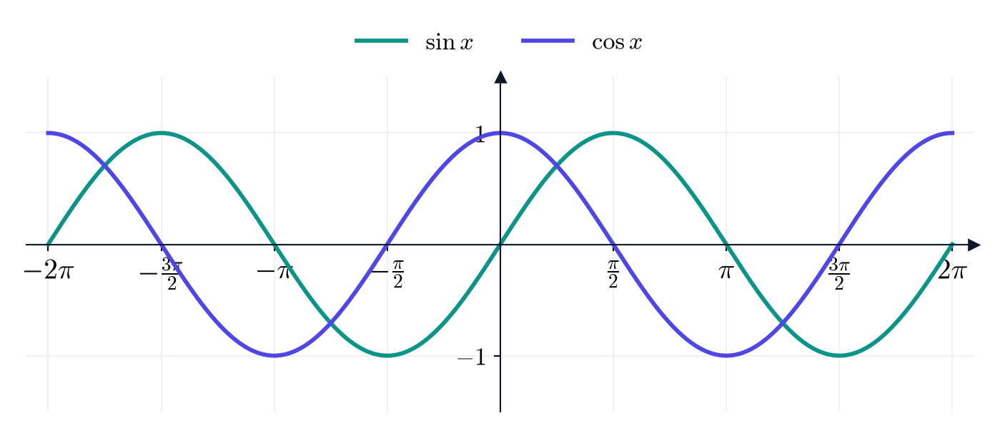
שימו לב שהגרף של \(\cos\) הוא הגרף של \(\sin\) אחרי הזזה שמאלה ב-\(.\frac{\pi}{2}\) זו תכונה (ז) בשפה של הזזות: \(.\cos x = \sin\left(x + \frac{\pi}{2}\right)\)
טנגנס
הגדרה 1.9.10 — טנגנס.
הטנגנס הוא \[.\tan\theta = \frac{\sin\theta}{\cos\theta}\] מבחינה גאומטרית, \(\tan\theta\) הוא השיפוע של הקרן מהראשית אל הנקודה \(.(\cos\theta, \sin\theta)\)
שימו לב — איפה טנגנס אינו מוגדר.
\(\tan\theta\) אינו מוגדר כאשר \(,\cos\theta = 0\) כלומר בנקודות \(\theta = \frac{\pi}{2} + k\pi\) עבור \(k\) שלם. בנקודות האלה הקרן אנכית, ולקו אנכי אין שיפוע. בגרף, אלה אסימפטוטות אנכיות: כשמתקרבים לנקודות האלה, הערכים של \(\tan\) גדלים (או קטנים) בלי גבול.
מתכונה (ה): \[\begin{aligned} \tan(\theta + \pi) &= \frac{\sin(\theta + \pi)}{\cos(\theta + \pi)} \\ &= \frac{-\sin\theta}{-\cos\theta} \\ &= \tan\theta \end{aligned}\] ולכן \(\tan\) מחזורית עם מחזור \(,\pi\) חצי מהמחזור של \(\sin\) ו-\(.\cos\) מתכונה (ד), \(\tan\) אי-זוגית. למשל \(.\tan\frac{\pi}{4} = \frac{\sqrt{2}/2}{\sqrt{2}/2} = 1\)
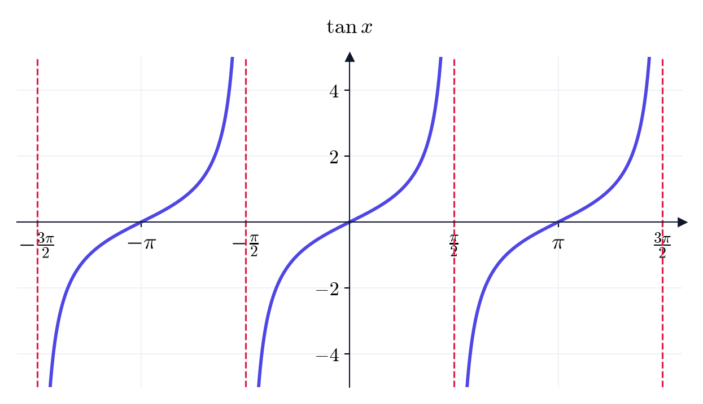
הזזה ומתיחה של פונקציות טריגונומטריות
כלל — משרעת ומחזור.
לפונקציה \(A\sin(Bx)\) (וכך גם ל-\(A\cos(Bx)\)), עם \(A, B \neq 0\):
- המשרעת (גובה הגל) היא \(,|A|\) והתמונה היא \(.[-|A|, |A|]\)
- המחזור הוא \(.\frac{2\pi}{|B|}\)
זה בדיוק מה שאומרת טבלת ההזזות: הכפלה ב-\(A\) מותחת את הגרף אנכית, והכפלת \(x\) ב-\(B\) מכווצת אותו אופקית פי \(.B\) אפשר לראות את זה גם במעבדת ההזזות, עם הגרף הבסיסי \(.\sin x\)
דוגמה 1.9.11 — פונקציות טריגונומטריות מוזזות.
מצאו את המחזור ואת התמונה.
(א) \(3\sin x\)
המחזור: \(2\pi\) התמונה: \([-3, 3]\)
כאן \(A = 3\) ו-\(.B = 1\) המחזור הוא \(,\frac{2\pi}{1} = 2\pi\) והמשרעת היא \(,3\) ולכן התמונה היא \(.[-3, 3]\)
(ב) \(\sin(4x)\)
המחזור: \(\frac{\pi}{2}\) התמונה: \([-1, 1]\)
כאן \(A = 1\) ו-\(.B = 4\) המחזור הוא \[,\frac{2\pi}{4} = \frac{\pi}{2}\] והתמונה היא \(.[-1, 1]\) בדיקה: כאשר \(x\) גדל ב-\(,\frac{\pi}{2}\) הביטוי \(4x\) גדל ב-\(,2\pi\) כלומר בסיבוב שלם.
(ג) \(\cos\left(x - \frac{\pi}{2}\right)\). איזו פונקציה מוכרת זו?
\(\cos\left(x - \frac{\pi}{2}\right) =\) \(\sin x\)
זו הזזה ימינה ב-\(\frac{\pi}{2}\) של \(,\cos\) ולכן המחזור הוא \(2\pi\) והתמונה היא \(.[-1, 1]\) נחשב בעזרת התכונות: \[\begin{aligned} \cos\left(x - \tfrac{\pi}{2}\right) &= \cos\left(\tfrac{\pi}{2} - x\right) \\ &= \sin x \end{aligned}\] בשורה הראשונה השתמשנו בזוגיות של \(\cos\) (תכונה (ד)), ובשנייה בתכונת הזווית המשלימה (ז). כלומר, הזזה של \(\cos\) ימינה ב-\(\frac{\pi}{2}\) נותנת בדיוק את \(.\sin\)
סיכום.
- זוויות מודדים ברדיאנים: סיבוב שלם הוא \(.2\pi\)
- הולכים על מעגל היחידה מרחק \(\theta\) מ-\(:(1, 0)\) שיעור ה-\(x\) הוא \(,\cos\theta\) ושיעור ה-\(y\) הוא \(.\sin\theta\)
- \(\sin\) ו-\(\cos\) מחזוריות עם מחזור \(,2\pi\) ערכיהן בין \(-1\) ל-\(,1\) ו-\(.\sin^2\theta + \cos^2\theta = 1\) \(\cos\) זוגית ו-\(\sin\) אי-זוגית.
- \(\tan\theta = \frac{\sin\theta}{\cos\theta}\) מחזורית עם מחזור \(,\pi\) ואינה מוגדרת כאשר \(.\cos\theta = 0\)
- ל-\(A\sin(Bx)\) יש משרעת \(|A|\) ומחזור \(.\frac{2\pi}{|B|}\)
תרגילים
שאלה 1.9.12 — סיבובים ורדיאנים.
כמה רדיאנים הם(כתבו \(\pi\) בתור pi או בכפתור):
(א) רבע סיבוב: \(\frac{\pi}{2}\)
(ב) שישית סיבוב: \(\frac{\pi}{3}\)
(ג) שלושה סיבובים שלמים: \(6\pi\)
סיבוב שלם הוא \(,2\pi\) ולכן: \(,\frac{2\pi}{4} = \frac{\pi}{2}\) \(\frac{2\pi}{6} = \frac{\pi}{3}\) ו-\(.3 \cdot 2\pi = 6\pi\)
שאלה 1.9.13 — ערכים מיוחדים.
חשבו. (שורש כותבים sqrt, למשל -sqrt(2)/2.)
(א) \(\sin\frac{5\pi}{6} =\) \(\frac{1}{2}\)
(ב) \(\cos\frac{4\pi}{3} =\) \(-\frac{1}{2}\)
(ג) \(\sin\frac{7\pi}{6} =\) \(-\frac{1}{2}\)
(ד) \(\cos\frac{3\pi}{4} =\) \(-\frac{\sqrt{2}}{2}\)
(ה) \(\tan\frac{\pi}{3} =\) \(\sqrt{3}\)
(ו) \(\sin\left(-\frac{\pi}{2}\right) =\) \(-1\)
(ז) \(\sin\frac{13\pi}{6} =\) \(\frac{1}{2}\)
כתבו את הזווית בעזרת זווית מהרביע הראשון, למשל \(,\frac{5\pi}{6} = \pi - \frac{\pi}{6}\) ובדקו באיזה רביע הנקודה כדי לקבוע את הסימן.
(א) לפי תכונה (ו): \(.\sin\frac{5\pi}{6} = \sin\left(\pi - \frac{\pi}{6}\right) = \sin\frac{\pi}{6} = \frac{1}{2}\)
(ב) לפי תכונה (ה): \(.\cos\frac{4\pi}{3} = \cos\left(\frac{\pi}{3} + \pi\right) = -\cos\frac{\pi}{3} = -\frac{1}{2}\)
(ג) \(\frac{7\pi}{6} = \frac{\pi}{6} + \pi\) ולפי (ה) הסינוס מחליף סימן.
(ד) \(\frac{3\pi}{4} = \pi - \frac{\pi}{4}\) ולפי (ו) הקוסינוס מחליף סימן.
(ה) \(.\tan\frac{\pi}{3} = \frac{\sqrt{3}/2}{1/2} = \sqrt{3}\)
(ו) הליכה של רבע סיבוב עם כיוון השעון מגיעה ל-\(.(0, -1)\)
(ז) \(,\frac{13\pi}{6} = 2\pi + \frac{\pi}{6}\) סיבוב שלם ועוד \(.\frac{\pi}{6}\)
שאלה 1.9.14 — משוואות על המעגל.
מצאו את כל הפתרונות בקטע \(.[0, 2\pi]\) (רשימה, למשל {pi/6, 5pi/6}.)
(א) \(\sin x = 0\): \(\{0, \pi, 2\pi\}\)
(ב) \(\cos x = \frac{1}{2}\): \(\left\{\frac{\pi}{3}, \frac{5\pi}{3}\right\}\)
(ג) \(2\sin x + 1 = 0\): \(\left\{\frac{7\pi}{6}, \frac{11\pi}{6}\right\}\)
על המעגל: מחפשים את כל הנקודות בגובה (או במרחק אופקי) המתאים. בדרך כלל יש שתיים בכל סיבוב.
(א) הגובה \(0\) מתקבל בנקודות \((1, 0)\) ו-\(,(-1, 0)\) כלומר ב-\(,0\) \(\pi\) ו-\(.2\pi\)
(ב) \(,\cos\frac{\pi}{3} = \frac{1}{2}\) והנקודה המשוקפת ביחס לציר \(x\) מתאימה ל-\(.2\pi - \frac{\pi}{3} = \frac{5\pi}{3}\)
(ג) \(.\sin x = -\frac{1}{2}\) הגובה שלילי ברביעים השלישי והרביעי: \(\pi + \frac{\pi}{6} = \frac{7\pi}{6}\) ו-\(.2\pi - \frac{\pi}{6} = \frac{11\pi}{6}\)
שאלה 1.9.15 — מחזור ותמונה.
(א) \(2\cos(\pi x) + 1\): המחזור \(2\) והתמונה \([-1, 3]\)
(ב) \(4\sin(3x)\): המחזור \(\frac{2\pi}{3}\) והתמונה \([-4, 4]\)
(ג) \(-\cos\frac{x}{2}\): המחזור \(4\pi\) והתמונה \([-1, 1]\)
(ד) \(1 - 2\sin x\): המחזור \(2\pi\) והתמונה \([-1, 3]\)
המחזור הוא \(,\frac{2\pi}{|B|}\) ואת התמונה בונים בשלבים מ-\(.{-}1 \le \sin \le 1\)
(א) \(,B = \pi\) ולכן המחזור הוא \(.\frac{2\pi}{\pi} = 2\) התמונה: \[\begin{aligned} -1 &\le \cos(\pi x) \le 1 \\ -2 &\le 2\cos(\pi x) \le 2 \\ -1 &\le 2\cos(\pi x) + 1 \le 3 \end{aligned}\]
(ב) \(B = 3\) ו-\(.|A| = 4\)
(ג) \(,B = \frac{1}{2}\) ולכן המחזור הוא \(.\frac{2\pi}{1/2} = 4\pi\) המינוס משקף, והתמונה נשארת \(.[-1, 1]\)
(ד) \(,-2 \le -2\sin x \le 2\) ולכן \(.{-}1 \le 1 - 2\sin x \le 3\)
שאלה 1.9.16 — מהסינוס אל הקוסינוס.
ידוע ש-\(\sin\theta = \frac{3}{5}\) ושהנקודה ברביע השני, \(.\frac{\pi}{2} < \theta < \pi\)
\(\cos\theta =\) \(-\frac{4}{5}\) ו-\(\tan\theta =\) \(-\frac{3}{4}\)
זהות פיתגורס: \(.\sin^2\theta + \cos^2\theta = 1\) ברביע השני הקוסינוס שלילי.
\[\begin{aligned} \cos^2\theta &= 1 - \sin^2\theta \\ &= 1 - \tfrac{9}{25} = \tfrac{16}{25} \end{aligned}\] ולכן \(.\cos\theta = \pm\frac{4}{5}\) ברביע השני \(,\cos\theta < 0\) ולכן \(.\cos\theta = -\frac{4}{5}\) לבסוף \(.\tan\theta = \frac{3/5}{-4/5} = -\frac{3}{4}\)
שאלה 1.9.17 — טנגנס.
(א) האם \(\tan\frac{\pi}{2}\) מוגדר?
\(,\cos\frac{\pi}{2} = 0\) ואי אפשר לחלק באפס. בגרף זו אסימפטוטה אנכית.
(ב) \(\tan\pi\) שווה:
\(.\tan\pi = \frac{\sin\pi}{\cos\pi} = \frac{0}{-1} = 0\)
1.10 הפונקציה המעריכית
מה עושים כאן? מגדירים את \(a^x\) לכל \(x\) ממשי, ומכירים את הפונקציה שבה כל צעד כופל את הערך באותו גורם.
בפונקציה לינארית, כל צעד של \(1\) ב-\(x\) מוסיף לערך אותה כמות, למשל \(.+2\) בפונקציה מעריכית, כל צעד כופל את הערך באותו גורם, למשל \(.\times 2\) כדי להגדיר אותה צריך לתת משמעות לביטוי כמו \(2^x\) גם כאשר \(x\) אינו מספר טבעי.
חזקות עם מעריך שאינו טבעי
נזכיר את המשמעות של החזקה \(a^x\) (עם \(a > 0\)) עבור מעריכים שאינם טבעיים:
| המעריך | ההגדרה | דוגמה |
|---|---|---|
| אפס | \(a^0 = 1\) | \(5^0 = 1\) |
| שלם שלילי | \(a^{-n} = \frac{1}{a^n}\) | \(2^{-3} = \frac{1}{2^3} = \frac{1}{8}\) |
| הופכי של טבעי | \(a^{1/n} = \sqrt[n]{a}\) | \(8^{1/3} = \sqrt[3]{8} = 2\) |
| רציונלי | \(a^{m/n} = \sqrt[n]{a^m}\) | \(8^{2/3} = \sqrt[3]{8^2} = \sqrt[3]{64} = 4\) |
שימו לב שהשורה השנייה מתאימה לסימון של המספר ההופכי: \(.a^{-1} = \frac{1}{a}\) ההגדרות האלה נבחרו כך שחוקי החזקות, למשל \(,a^m \cdot a^n = a^{m+n}\) ימשיכו להתקיים.
בדיקה עצמית.
מהו \(?4^{-1/2}\)
המינוס במעריך פירושו הופכי, והחצי פירושו שורש: \[\begin{aligned} 4^{-1/2} &= \frac{1}{4^{1/2}} \\ &= \frac{1}{\sqrt{4}} \\ &= \frac{1}{2}. \end{aligned}\] מעריך שלילי אינו הופך את התוצאה לשלילית.
שימו לב — למה הבסיס חייב להיות חיובי.
עבור בסיס שלילי, ההגדרות בטבלה נכשלות. למשל, \((-4)^{1/2} = \sqrt{-4}\) אינו מוגדר. לכן מגדירים את הפונקציה המעריכית רק עבור \(.a > 0\)
ומה לגבי מעריך אי-רציונלי, למשל \(?2^{\sqrt{2}}\) את ההגדרה המדויקת נדחה לפרק הבא, כי היא דורשת את מושג הגבול. באופן אינטואיטיבי: את הנקודות \(\left(x, 2^x\right)\) עבור כל \(x\) רציונלי אפשר לחשב ולסמן במישור, ויש רק דרך אחת להעביר דרך כולן קו רציף, בלי קפיצות. הקו הזה הוא הגרף של \(,2^x\) והערך שלו מעל \(x = \sqrt{2}\) הוא \(.2^{\sqrt{2}}\)
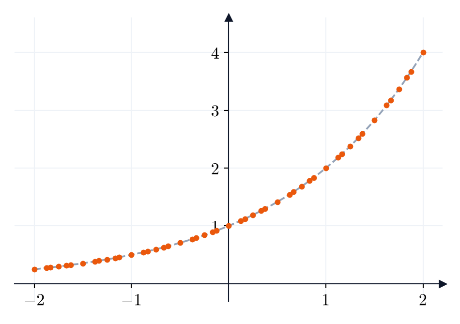
הגדרה 1.10.1 — הפונקציה המעריכית.
יהי \(a > 0\) ו-\(.a \neq 1\) הפונקציה המעריכית עם בסיס \(a\) היא \(.f(x) = a^x\) תחום ההגדרה שלה הוא \(,\mathbb{R}\) והתמונה שלה היא \(.(0, \infty)\)
(הבסיס \(a = 1\) אינו מעניין: \(1^x = 1\) לכל \(.x\))
משפט 1.10.2 — חוקי החזקות.
לכל \(a, b > 0\) ולכל \(x, y\) ממשיים: \[\begin{aligned} a^{x+y} &= a^x \cdot a^y \\ a^{x-y} &= \frac{a^x}{a^y} \\ \left(a^x\right)^y &= a^{xy} \\ (ab)^x &= a^x \cdot b^x \end{aligned}\]
הגרפים
חשוב לזכור — שתי צורות.
- אם \(a > 1\), הפונקציה \(a^x\) עולה: ככל ש-\(x\) גדל, \(a^x\) גדל, ובמהירות הולכת וגדלה.
- אם \(0 < a < 1\), הפונקציה \(a^x\) יורדת. למשל, \(\left(\frac{1}{2}\right)^x = 2^{-x}\) היא השיקוף של \(2^x\) ביחס לציר \(.y\)
- כל הגרפים עוברים דרך \(,(0, 1)\) כי \(,a^0 = 1\) וכולם נמצאים מעל ציר \(,x\) כי \(.a^x > 0\)
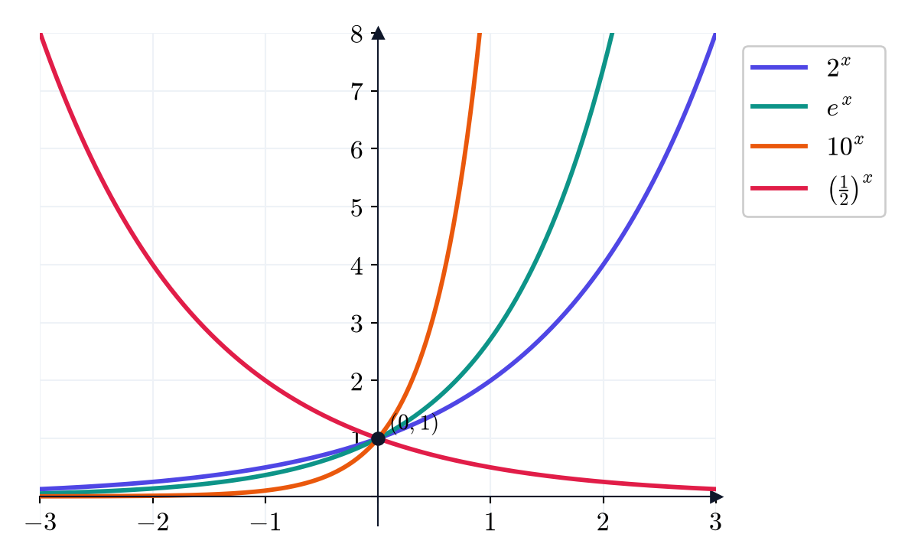
שיטת חישוב — פישוט ביטויים עם חזקות.
כותבים את כל החזקות עם בסיס משותף (למשל \(4 = 2^2\) ו-\(8 = 2^3\)), ואז משתמשים בחוקי החזקות.
דוגמה 1.10.3 — הזזה ומתיחה של הפונקציה המעריכית.
תארו את הגרף: תמונה, אסימפטוטה אופקית ונקודה אחת על הגרף.
(א) \(y = 2 - 3^x\)
התמונה: \((-\infty, 2)\) האסימפטוטה האופקית: \(y =\) \(2\) והגרף עובר דרך \((0,{}\) \(1\)\()\)
נכתוב \(,y = -3^x + 2\) ונבנה את הגרף בשני שלבים:
- \(-3^x\) הוא שיקוף של \(3^x\) ביחס לציר \(.x\) מכיוון ש-\(,3^x > 0\) מתקבל \(,-3^x < 0\) והתמונה היא \(.(-\infty, 0)\)
- הוספת \(2\) מזיזה למעלה ב-\(.2\) התמונה הופכת ל-\(.(-\infty, 2)\)
הישר \(y = 2\) הוא אסימפטוטה אופקית: כאשר \(x\) קטן מאוד (שלילי וגדול בערכו המוחלט), הביטוי \(3^x\) קרוב מאוד ל-\(,0\) ולכן \(y\) קרוב מאוד ל-\(.2\) נקודה על הגרף: עבור \(x = 0\) מתקבל \(.y = 2 - 1 = 1\)
(ב) \(y = 2^{x+2} - 1\)
התמונה: \((-1, \infty)\) האסימפטוטה האופקית: \(y =\) \(-1\) והגרף עובר דרך \(({-}2,{}\) \(0\)\()\)
בתוך החזקה \(,x + 2\) ולכן הזזה שמאלה ב-\(.2\) מחוץ לה \(,-1\) ולכן הזזה למטה ב-\(.1\) התמונה של \(2^x\) היא \(,(0, \infty)\) ואחרי ההזזה למטה היא \(.(-1, \infty)\) האסימפטוטה האופקית היא \(.y = -1\) נקודה על הגרף: עבור \(x = -2\) מתקבל \(.y = 2^0 - 1 = 0\)
נחשו: מי גדולה יותר כאשר \(,x = 15\) \(2^x\) או \(?x^3\)
\(2^{15} = 32768\) ואילו \(,15^3 = 3375\) כמעט פי עשרה פחות! הטבלה הבאה מראה מה קרה בדרך.
חשוב לזכור — המעריכית מנצחת את החזקה.
נשווה את \(2^x\) ל-\(:x^3\)
| \(x\) | \(2\) | \(5\) | \(9\) | \(10\) | \(15\) |
|---|---|---|---|---|---|
| \(x^3\) | \(8\) | \(125\) | \(729\) | \(1000\) | \(3375\) |
| \(2^x\) | \(4\) | \(32\) | \(512\) | \(1024\) | \(32768\) |
בהתחלה \(x^3\) גדולה יותר, אבל מ-\(x = 10\) והלאה \(2^x\) עוקפת אותה, והפער גדל מהר מאוד. כך זה תמיד: פונקציה מעריכית עם בסיס גדול מ-\(1\) גדלה בסופו של דבר מהר יותר מכל פולינום.
סיכום.
- \(,a^0 = 1\) \(,a^{-n} = \frac{1}{a^n}\) ו-\(.a^{m/n} = \sqrt[n]{a^m}\) הבסיס חייב להיות חיובי.
- \(a^x\) מוגדרת לכל \(,x\) והתמונה שלה \(.(0, \infty)\) הגרף עובר דרך \(.(0, 1)\)
- \(a > 1\): עולה; \(0 < a < 1\): יורדת. בסופו של דבר \(a^x\) (עם \(a > 1\)) עוקפת כל פולינום.
- מפשטים בעזרת בסיס משותף וחוקי החזקות.
תרגילים
שאלה 1.10.4 — מפשטים בצעדים.
פשטו את \(\frac{4^x \cdot 2^3}{8^x}\) לחזקה אחת של \(.2\) כתבו כל שלב בשורה משלו. (חזקה כותבים עם ^, למשל 2^(3x).)
כתבו קודם \(4 = 2^2\) ו-\(,8 = 2^3\) כלומר \(4^x = (2^2)^x = 2^{2x}\) ו-\(.8^x = 2^{3x}\)
אחר כך: במונה \(,2^{2x} \cdot 2^3 = 2^{2x + 3}\) ובחילוק מחסירים את המעריך של המכנה.
פתרון. \[\begin{aligned} \frac{4^x \cdot 2^3}{8^x} &= \frac{\left(2^2\right)^x \cdot 2^3}{\left(2^3\right)^x} \\ &= \frac{2^{2x} \cdot 2^3}{2^{3x}} \\ &= 2^{2x + 3 - 3x} \\ &= 2^{3 - x} \end{aligned}\]
שאלה 1.10.5 — תיאור גרף.
(א) עבור \(y = 3^{-x} + 1\): התמונה היא \((1, \infty)\) והאסימפטוטה האופקית היא \(y =\) \(1\)
(ב) עבור \(y = 3 \cdot 2^x - 1\): התמונה היא \((-1, \infty)\) והגרף חותך את ציר \(y\) בגובה \(2\)
(א) \(,3^{-x} = \left(\frac{1}{3}\right)^x\) פונקציה מעריכית יורדת עם תמונה \(.(0, \infty)\) הוספת \(1\) מזיזה למעלה, והגרף מתקרב לישר \(y = 1\) כאשר \(x\) גדל.
(ב) \(3 \cdot 2^x\) מקבל את כל הערכים ב-\(,(0, \infty)\) ואחרי הורדה ב-\(1\) מתקבל \(.(-1, \infty)\) עבור \(x = 0\): \(.y = 3 \cdot 1 - 1 = 2\)
שאלה 1.10.6 — חזקות.
חשבו.
(א) \(16^{3/4} =\) \(8\)
(ב) \(9^{-1/2} =\) \(\frac{1}{3}\)
(ג) \(\left(\frac{1}{4}\right)^{-2} =\) \(16\)
(ד) \(32^{1/5} =\) \(2\)
(ה) \(1000^{2/3} =\) \(100\)
המכנה במעריך הוא שורש, המונה הוא חזקה, והמינוס הוא הופכי. כדאי להתחיל בשורש.
\[\begin{aligned} 16^{3/4} &= \left(\sqrt[4]{16}\right)^3 = 2^3 = 8 \\ 9^{-1/2} &= \frac{1}{\sqrt{9}} = \frac{1}{3} \\ \left(\tfrac{1}{4}\right)^{-2} &= 4^2 = 16 \\ 32^{1/5} &= \sqrt[5]{32} = 2 \\ 1000^{2/3} &= \left(\sqrt[3]{1000}\right)^2 = 10^2 = 100 \end{aligned}\]
שאלה 1.10.7 — חוקי החזקות.
פשטו לחזקה אחת. (כתבו את התשובה בצורה הפשוטה ביותר, למשל x^8.)
(א) \(x^3 \cdot x^5 =\) \(x^8\)
(ב) \(\left(2^x\right)^3 \cdot 2^{-x} =\) \(2^{2x}\)
(ג) \(\frac{9^x}{3^x} =\) \(3^x\)
(א) מחברים מעריכים: \(.3 + 5 = 8\) (ב) \(\left(2^x\right)^3 = 2^{3x}\) ואחר כך \(.2^{3x} \cdot 2^{-x} = 2^{2x}\) (ג) \(,9^x = \left(3^2\right)^x = 3^{2x}\) ולכן \(.\frac{3^{2x}}{3^x} = 3^x\)
שאלה 1.10.8 — משוואות עם בסיס משותף.
(א) פתרו את \(.4^x = 8\) כתבו את שני האגפים כחזקות של \(,2\) ואז השוו את המעריכים.
\(4^x = 2^{2x}\) ו-\(.8 = 2^3\) מ-\(2^{2x} = 2^3\) נובע \(2x = 3\) (זה בדיוק “הפעלת \(\log_2\) על שני האגפים”).
פתרון. \[\begin{aligned} 4^x &= 8 \\ 2^{2x} &= 2^3 \\ 2x &= 3 \\ x &= \tfrac{3}{2} \end{aligned}\]
(ב) \(2^x = 32\)
פתרון. \[\begin{aligned} 2^x &= 32 \\ 2^x &= 2^5 \\ x &= 5 \end{aligned}\]
\(x =\) \(5\)
(ג) \(3^{x + 1} = 27\)
\(.27 = 3^3\)
פתרון. \[\begin{aligned} 3^{x + 1} &= 27 \\ 3^{x + 1} &= 3^3 \\ x + 1 &= 3 \\ x &= 2 \end{aligned}\]
\(x =\) \(2\)
(ד) \(\left(\frac{1}{2}\right)^x = 4\) (את \(\left(\frac{1}{2}\right)^x\) כותבים (1/2)^x.)
\(\left(\frac{1}{2}\right)^x = 2^{-x}\) ו-\(.4 = 2^2\)
פתרון. \[\begin{aligned} \left(\tfrac{1}{2}\right)^x &= 4 \\ 2^{-x} &= 2^2 \\ -x &= 2 \\ x &= -2 \end{aligned}\] בשורה האחרונה כפלנו ב-\(.{-}1\)
\(x =\) \(-2\)
שאלה 1.10.9 — מי גדולה יותר?
השלימו את השורה של \(,2^x\) והשוו אותה לשורה של \(.x^2\)
| \(x\) | \(1\) | \(2\) | \(3\) | \(4\) | \(5\) | \(6\) |
|---|---|---|---|---|---|---|
| \(x^2\) | \(1\) | \(4\) | \(9\) | \(16\) | \(25\) | \(36\) |
| \(2^x\) | \(2\) | \(4\) | \(8\) | \(16\) | \(32\) | \(64\) |
באילו מהערכים שבטבלה \(x^2\) גדולה ממש מ-\(?2^x\)
רק עבור \(:x = 3\) \(.9 > 8\) עבור \(x = 2\) ו-\(x = 4\) הן שוות (\(4 = 4\) ו-\(16 = 16\)), ובשאר הערכים \(2^x\) גדולה יותר. שימו לב שהפער גדל מהר: עבור \(x = 5\) הוא \(,32 - 25 = 7\) ועבור \(x = 6\) כבר \(.64 - 36 = 28\)
1.11 פונקציות הפוכות
מה עושים כאן? הולכים בכיוון ההפוך: יודעים את הפלט, ומחפשים את הקלט. נראה מתי זה אפשרי (פונקציות חד-חד-ערכיות ופונקציות על), איך מוצאים את הפונקציה ההפוכה, ואיך הגרף שלה נראה.
לעיתים קרובות יודעים את הפלט ומחפשים את הקלט. איזה \(x\) מקיים \(x^3 = 8\)? איזה \(x\) מקיים \(2^x = 8\)? הפונקציה ההפוכה “מחזירה” מהפלט אל הקלט. אבל כדי שזה יעבוד, לכל פלט חייב להיות קלט יחיד.
הגדרה 1.11.1 — פונקציה חד-חד-ערכית.
פונקציה \(f\) נקראת חד-חד-ערכית אם היא אינה מקבלת אותו ערך פעמיים: אם \(x_1 \neq x_2\) אז \(.f(x_1) \neq f(x_2)\)
כלל — מבחן הקו האופקי.
פונקציה היא חד-חד-ערכית אם ורק אם כל קו אופקי חותך את הגרף שלה לכל היותר בנקודה אחת.
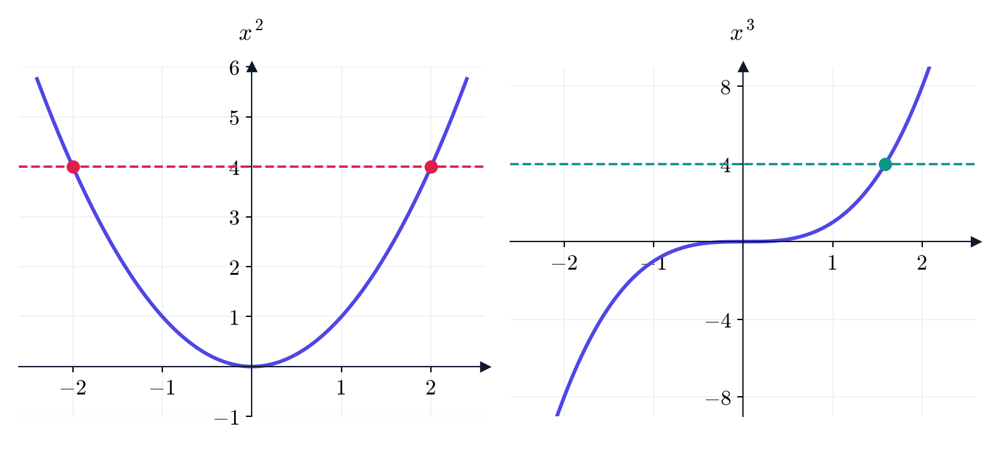
בדיקה עצמית.
האם \(f(x) = |x|\) (על כל \(\mathbb{R}\)) חד-חד-ערכית?
לא: \(,|2| = |{-}2| = 2\) כלומר שני קלטים שונים נותנים אותו ערך. בגרף (צורת \(V\)), הקו האופקי \(y = 2\) חותך אותו פעמיים.
חד-חד-ערכיות מבטיחה שלכל פלט יש לכל היותר קלט אחד. כדי שאפשר יהיה לחזור אחורה מכל \(y\) בטווח, צריך גם שלכל \(y\) כזה יהיה לפחות קלט אחד, כלומר שכל \(y\) בטווח אכן מתקבל.
הגדרה 1.11.2 — פונקציה על.
תהי \(f : A \to B\) פונקציה. נאמר ש-\(f\) היא פונקציה על (או ש-\(f\) היא “על \(B\)”) אם כל איבר של הטווח מתקבל: לכל \(y \in B\) יש \(x \in A\) שעבורו \(.f(x) = y\) במילים אחרות, התמונה של \(f\) שווה לטווח שלה.
כלל — שוב מבחן הקו האופקי.
פונקציה \(f : A \to \mathbb{R}\) היא על אם ורק אם כל קו אופקי חותך את הגרף שלה לפחות בנקודה אחת. (אם הטווח הוא קבוצה אחרת \(,B\) בודקים רק את הקווים \(y = b\) שבהם \(.b \in B\))
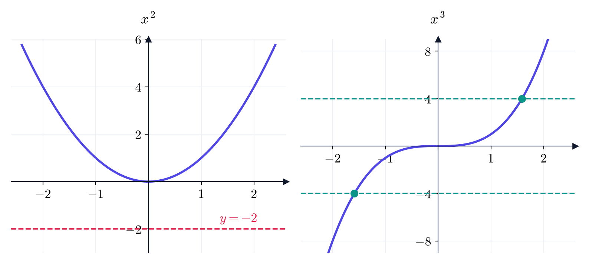
שיטת חישוב — בודקים אם פונקציה היא על.
- כותבים את המשוואה \(f(x) = y\) עבור \(y\) כללי מהטווח.
- מנסים לפתור אותה עבור \(.x\) (זו אותה שיטה כמו במציאת התמונה.)
- אם לכל \(y\) בטווח יש פתרון בתחום ההגדרה, \(f\) על. אם יש \(y\) אחד בטווח שאין עבורו פתרון, \(f\) אינה על, וה-\(y\) הזה הוא הדוגמה הנגדית.
דוגמה 1.11.3 — על, או לא על?
(א) \(f : \mathbb{R} \to \mathbb{R}\), \(.f(x) = 3x + 1\)
על. נפתור את \(f(x) = y\) עבור \(y\) כללי: \[\begin{aligned} 3x + 1 &= y \\ 3x &= y - 1 \\ x &= \frac{y - 1}{3} \end{aligned}\] לכל \(y\) ממשי יש פתרון. למשל, עבור \(y = 7\) מקבלים \(,x = 2\) ואכן \(.f(2) = 7\)
(ב) \(f : \mathbb{R} \to \mathbb{R}\), \(.f(x) = x^2\)
לא על. המספר \(-1\) נמצא בטווח, אבל למשוואה \(x^2 = -1\) אין פתרון ממשי, כי ריבוע אינו שלילי. התמונה של \(f\) היא רק \(,[0, \infty)\) והיא קטנה מהטווח.
(ג) \(f : \mathbb{R} \to [0, \infty)\), \(.f(x) = x^2\)
על. עכשיו הטווח הוא \(,[0, \infty)\) ולכל \(y \ge 0\) המשוואה \(x^2 = y\) פתירה, למשל על ידי \(.x = \sqrt{y}\) זה אותו כלל כמו ב-(ב), אבל עם טווח אחר.
שימו לב — הכול תלוי בטווח.
השאלה “האם \(f\) על?” תלויה בטווח שבחרנו, ולא רק בכלל \(.f(x)\) כמו שראינו ב-(ב) וב-(ג), \(x^2\) אינה על \(,\mathbb{R}\) אבל היא על \(.[0, \infty)\) לכן כשאומרים “על”, צריך לדעת על איזה טווח מדובר. כשהטווח לא נאמר, הכוונה היא ל-\(.\mathbb{R}\)
חשוב לזכור — חד-חד-ערכית ועל.
- חד-חד-ערכית: כל קו אופקי פוגש את הגרף לכל היותר פעם אחת.
- על: כל קו אופקי בגובה שבטווח פוגש את הגרף לפחות פעם אחת.
- שתיהן יחד: כל קו כזה פוגש את הגרף בדיוק פעם אחת. אז לכל \(y\) בטווח יש קלט אחד ויחיד, והפונקציה ההפוכה מוגדרת על כל הטווח.
בדיקה עצמית.
האם \(f : \mathbb{R} \to \mathbb{R}\), \(f(x) = 2^x\) היא על?
לא: \(2^x > 0\) לכל \(,x\) ולכן למשל \(y = -1\) אינו מתקבל. התמונה היא רק \(.(0, \infty)\) לעומת זאת, \(2^x\) חד-חד-ערכית: היא עולה, ולכן אינה מקבלת אותו ערך פעמיים.
הגדרה 1.11.4 — פונקציה הפוכה.
תהי \(f\) פונקציה חד-חד-ערכית. הפונקציה ההפוכה \(f^{-1}\) מוגדרת על ידי \[.f^{-1}(y) = x \iff f(x) = y\] תחום ההגדרה של \(f^{-1}\) הוא התמונה של \(f\), והתמונה של \(f^{-1}\) היא תחום ההגדרה של \(f\): התפקידים מתחלפים.
נובע מההגדרה ש-\(f^{-1}(f(x)) = x\) ו-\(,f(f^{-1}(y)) = y\) כלומר כל אחת מהפונקציות “מבטלת” את השנייה. בשפה של מכונות: \(f^{-1}\) היא המכונה שמריצה את \(f\) אחורה.
דוגמה 1.11.5 — פונקציה הפוכה מטבלה.
נתון ש-\(f\) חד-חד-ערכית, ו-\(f(2) = 9\), \(f(4) = 1\), \(.f(7) = 3\) מהם \(f^{-1}(1)\) ו-\(?f^{-1}(3)\)
\(f^{-1}(1) =\) \(4\) ו-\(f^{-1}(3) =\) \(7\)
\(f\) שולחת את \(4\) ל-\(1\) ואת \(7\) ל-\(.3\) מחפשים בטבלה את הפלט, וקוראים את הקלט.
שיטת חישוב — מציאת פונקציה הפוכה.
- כותבים \(.y = f(x)\)
- פותרים את המשוואה ומבטאים את \(x\) בעזרת \(.y\)
- מחליפים את שמות המשתנים, \(x\) במקום \(y\), ומקבלים את \(.f^{-1}(x)\)
דוגמה 1.11.6 — מציאת פונקציה הפוכה.
מצאו את הפונקציה ההפוכה.
(א) \(f(x) = 5x - 2\)
כותבים \(y = 5x - 2\) ומבודדים את \(x\) צעד אחר צעד:
מה מפריע ל-\(x\) להיות לבד? קודם ה-\(,-2\) ואחר כך הכפל ב-\(.5\)
פתרון. \[\begin{aligned} y &= 5x - 2 \\ y + 2 &= 5x \\ x &= \frac{y + 2}{5} \end{aligned}\]
מחליפים את שמות המשתנים: \(f^{-1}(x) =\) \(\frac{x + 2}{5}\)
בדיקה: \(f(0) = -2\) ו-\(.f^{-1}(-2) = \frac{-2 + 2}{5} = 0\)
(ב) \(f(x) = x^3 - 1\)
אחרי שמבודדים את \(,x^3\) מוציאים שורש שלישי משני האגפים. (שורש שלישי כותבים cbrt, למשל cbrt(y+1).)
פתרון. \[\begin{aligned} y &= x^3 - 1 \\ y + 1 &= x^3 \\ x &= \sqrt[3]{y + 1} \end{aligned}\]
\(f^{-1}(x) =\) \(\sqrt[3]{x + 1}\)
בדיקה: \(f(2) = 7\) ו-\(.f^{-1}(7) = \sqrt[3]{8} = 2\)
חשוב לזכור — לא לכל הפוכה יש נוסחה.
לא תמיד אפשר לבטא את הפונקציה ההפוכה בנוסחה. למשל, \(f(x) = x^5 + x\) חד-חד-ערכית (ככל ש-\(x\) גדל, גם \(x^5\) וגם \(x\) גדלים), ולכן יש לה פונקציה הפוכה, אבל אין נוסחה מפורשת עבור \(f^{-1}(x)\) בעזרת פעולות חשבון ושורשים. לחלק מהפונקציות ההפוכות החשובות פשוט נותנים שם: כך יקרה עם ההפוכה של \(,a^x\) שנקראת לוגריתם, ועם ההפוכות של הפונקציות הטריגונומטריות.
שימו לב — למה דורשים חד-חד-ערכיות.
הפונקציה \(f(x) = x^2\) על כל \(\mathbb{R}\) אינה חד-חד-ערכית: \(f(3) = f(-3) = 9\). אם ננסה להגדיר את \(,f^{-1}(9)\) יש שני מועמדים, \(3\) ו-\(,-3\) ואין סיבה לבחור באחד מהם. לכן ל-\(x^2\) על \(\mathbb{R}\) אין פונקציה הפוכה.
הפתרון: לצמצם את תחום ההגדרה. אם נגדיר את \(x^2\) רק על \(,[0, \infty)\) היא חד-חד-ערכית, וההפוכה שלה היא \(.\sqrt{x}\) נשתמש ברעיון הזה שוב עבור שורשים ועבור הפונקציות הטריגונומטריות ההפוכות.
שימו לב — הסימון \(f^{-1}\).
\(f^{-1}(x)\) אינו \(.\frac{1}{f(x)}\) ה-\(-1\) כאן מסמן “פונקציה הפוכה”, ולא את המספר ההופכי \(a^{-1} = \frac{1}{a}\) שפגשנו בתחילת ההרצאה. למשל עבור \(,f(x) = 5x - 2\) מצאנו \(,f^{-1}(x) = \frac{x + 2}{5}\) ואילו \(.\frac{1}{f(x)} = \frac{1}{5x - 2}\)
משפט 1.11.7 — הגרף של הפונקציה ההפוכה.
הגרף של \(f^{-1}\) הוא השיקוף של הגרף של \(f\) ביחס לישר \(.y = x\)
למה?
הנקודה \((a, b)\) נמצאת על הגרף של \(f\) אם ורק אם \(,f(a) = b\) כלומר \(,f^{-1}(b) = a\) כלומר הנקודה \((b, a)\) על הגרף של \(.f^{-1}\) החלפת השיעורים היא בדיוק שיקוף ביחס ל-\(.y = x\)
סיכום.
- לפונקציה יש הפוכה רק אם היא חד-חד-ערכית: כל קו אופקי חותך את הגרף לכל היותר פעם אחת.
- \(f : A \to B\) היא על אם התמונה שלה היא כל \(,B\) כלומר כל קו אופקי בגובה שב-\(B\) פוגש את הגרף לפחות פעם אחת. התשובה תלויה בטווח.
- מוצאים את \(f^{-1}\) על ידי פתרון \(y = f(x)\) עבור \(,x\) ואז מחליפים את שמות המשתנים.
- הגרף של \(f^{-1}\) הוא השיקוף של הגרף של \(f\) ביחס ל-\(.y = x\) ו-\(f^{-1}(x)\) אינו \(.\frac{1}{f(x)}\)
- אם הפונקציה אינה חד-חד-ערכית, מצמצמים את תחום ההגדרה שלה.
תרגילים
שאלה 1.11.8 — מוצאים הפוכה ובודקים.
מצאו את הפונקציה ההפוכה ל-\(.f(x) = \frac{x + 3}{2}\)
פתרון. \[\begin{aligned} y &= \frac{x + 3}{2} \\ 2y &= x + 3 \\ x &= 2y - 3 \end{aligned}\]
\(f^{-1}(x) =\) \(2x - 3\)
בדיקה: נציב את \(f^{-1}(x)\) ב-\(:f\) \[\begin{aligned} f\big(f^{-1}(x)\big) &= f(2x - 3) \\ &= \frac{(2x - 3) + 3}{2} \\ &= \frac{2x}{2} = x \end{aligned}\]
שאלה 1.11.9 — חד-חד-ערכית?
(א) \(x^3\) (על כל \(\mathbb{R}\))
כל קו אופקי חותך את הגרף של \(x^3\) פעם אחת בדיוק.
(ב) \(x^2 - 4\) (על כל \(\mathbb{R}\))
\(.f(2) = f(-2) = 0\)
(ג) \(2x + 1\)
אם \(2x_1 + 1 = 2x_2 + 1\) אז \(.x_1 = x_2\) הגרף הוא ישר עולה.
(ד) \(\sin x\) (על כל \(\mathbb{R}\))
\(,\sin 0 = \sin\pi = 0\) ובכלל, הסינוס מחזורי ולכן חוזר על כל ערך אינסוף פעמים.
(ה) \(2^x\)
\(2^x\) עולה כל הזמן, ולכן אינה מקבלת אותו ערך פעמיים.
שאלה 1.11.10 — על?
(א) \(f : \mathbb{R} \to \mathbb{R}\), \(f(x) = x^3\)
כן. לכל \(y\) המשוואה \(x^3 = y\) פתירה: \(.x = \sqrt[3]{y}\) בגרף, כל קו אופקי פוגש את \(.x^3\)
(ב) \(f : \mathbb{R} \to \mathbb{R}\), \(f(x) = |x|\)
לא. \(|x| \ge 0\) לכל \(,x\) ולכן למשל \(-3\) אינו מתקבל. התמונה היא רק \(.[0, \infty)\)
(ג) \(f : \mathbb{R} \to [0, \infty)\), \(f(x) = |x|\)
כן. לכל \(y \ge 0\) יש פתרון, למשל \(,x = y\) כי \(.|y| = y\)
(ד) \(f : \mathbb{R} \to \mathbb{R}\), \(f(x) = x^2 - 4\)
התמונה של \(f\) היא \([-4, \infty)\)
\(x^2 \ge 0\) ולכן \(,x^2 - 4 \ge -4\) וכל \(y \ge -4\) מתקבל: מ-\(x^2 - 4 = y\) מקבלים למשל \(.x = \sqrt{y + 4}\)
האם \(f\) על?
לא. הטווח הוא \(,\mathbb{R}\) אבל התמונה היא רק \(.[-4, \infty)\) למשל, \(y = -5\) אינו מתקבל. (על הטווח \([-4, \infty)\) היא כן על.)
(ה) \(f : \mathbb{R} \to \mathbb{R}\), \(f(x) = 5x - 2\)
גם וגם. פתרון \(5x - 2 = y\) נותן \(:\) \[x = \frac{y + 2}{5}\] לכל \(y\) יש פתרון (ולכן על), והפתרון יחיד (ולכן חד-חד-ערכית). זו בדיוק הנוסחה של \(f^{-1}\) שמצאנו בדוגמה, והיא מוגדרת על כל \(.\mathbb{R}\)
שאלה 1.11.11 — עוד פונקציות הפוכות.
מצאו את \(f^{-1}(x)\) בכל סעיף: כותבים \(,y = f(x)\) מבודדים את \(x\) צעד אחר צעד, ומחליפים שמות.
(א) \(f(x) = 3 - 4x\)
פתרון. \[\begin{aligned} y &= 3 - 4x \\ y + 4x &= 3 \\ 4x &= 3 - y \\ x &= \frac{3 - y}{4} \end{aligned}\] הוספנו \(4x\) לשני האגפים, חיסרנו \(,y\) וחילקנו ב-\(.4\)
\(f^{-1}(x) =\) \(\frac{3 - x}{4}\)
(ב) \(f(x) = \frac{2x + 1}{3}\)
פתרון. \[\begin{aligned} y &= \frac{2x + 1}{3} \\ 3y &= 2x + 1 \\ 3y - 1 &= 2x \\ x &= \frac{3y - 1}{2} \end{aligned}\] כפלנו ב-\(,3\) חיסרנו \(,1\) וחילקנו ב-\(.2\)
\(f^{-1}(x) =\) \(\frac{3x - 1}{2}\)
(ג) \(f(x) = \sqrt[3]{x + 2}\) (שורש שלישי כותבים cbrt, למשל cbrt(x+2).)
כדי להיפטר מהשורש השלישי, מעלים את שני האגפים בחזקה שלישית.
פתרון. \[\begin{aligned} y &= \sqrt[3]{x + 2} \\ y^3 &= x + 2 \\ x &= y^3 - 2 \end{aligned}\]
\(f^{-1}(x) =\) \(x^3 - 2\)
(ד) \(f(x) = \frac{1}{x}\) (עבור \(x \neq 0\))
\(f^{-1}(x) =\) \(\frac{1}{x}\)
\(,y = \frac{1}{x}\) כלומר \(.x = \frac{1}{y}\) הפונקציה היא ההפוכה של עצמה: הגרף שלה סימטרי ביחס לישר \(.y = x\)
שאלה 1.11.12 — בלי נוסחה.
תהי \(.f(x) = 3x + 1\) חשבו בלי למצוא נוסחה ל-\(.f^{-1}\)
(א) \(f^{-1}(7) =\) \(2\)
(ב) \(f^{-1}\big(f(5)\big) =\) \(5\)
(ג) \(f\big(f^{-1}(13)\big) =\) \(13\)
(א) מחפשים \(x\) שעבורו \(:f(x) = 7\) \(,3x + 1 = 7\) כלומר \(.x = 2\) (ב), (ג) כל אחת מהפונקציות “מבטלת” את השנייה.
שאלה 1.11.13 — מצמצמים ומוצאים הפוכה.
תהי \(f(x) = x^2 + 1\) על התחום \(.[0, \infty)\)
התמונה של \(f\) (שהיא גם תחום ההגדרה של \(f^{-1}\)) היא \([1, \infty)\), ו-\(f^{-1}(x) =\) \(\sqrt{x - 1}\)
\(x^2 \ge 0\) ולכן \(.x^2 + 1 \ge 1\) נבודד את \(:x\) \[\begin{aligned} y &= x^2 + 1 \\ y - 1 &= x^2 \\ x &= \sqrt{y - 1} \end{aligned}\] לקחנו את השורש החיובי, כי \(x\) בתחום \(.[0, \infty)\)
שאלה 1.11.14 — שלבי מציאת ההפוכה.
סדרו את השלבים למציאת ההפוכה של \(.f(x) = \frac{x - 1}{3}\)
כותבים \(.y = \frac{x - 1}{3}\)
כופלים ב-\(:3\) \(.3y = x - 1\)
מוסיפים \(:1\) \(.x = 3y + 1\)
מחליפים את שמות המשתנים: \(.f^{-1}(x) = 3x + 1\)
בודקים: \(f(1) = 0\) ו-\(.f^{-1}(0) = 1\)
1.12 פונקציות נוספות
מה עושים כאן? מכירים עוד כמה משפחות של פונקציות שיופיעו לאורך הקורס: לוגריתמים, חזקות ושורשים, פונקציות רציונליות והפונקציות הטריגונומטריות ההפוכות.
לוגריתמים
איך פותרים את \(?2^x = 10\) אין חזקה שלמה של \(2\) שנותנת \(10\): \(2^3 = 8\) ו-\(.2^4 = 16\) כדי לפתור, צריך פונקציה ש”מבטלת” את הפונקציה המעריכית, כלומר את הפונקציה ההפוכה שלה.
הגדרה 1.12.1 — לוגריתם.
יהי \(a > 0\) ו-\(.a \neq 1\) הפונקציה \(a^x\) חד-חד-ערכית (ראו בגרף שלה), ולכן יש לה פונקציה הפוכה, שנקראת הלוגריתם לפי בסיס \(a\): \[.\log_a x = y \iff a^y = x\] במילים: \(\log_a x\) הוא החזקה שבה צריך להעלות את \(a\) כדי לקבל \(x\). תחום ההגדרה של \(\log_a\) הוא \(,(0, \infty)\) והתמונה שלו היא \(\mathbb{R}\) (התחום והתמונה של \(a^x\) מתחלפים).
זו דוגמה לפונקציה הפוכה שאין לה נוסחה בעזרת הפעולות המוכרות, ולכן קיבלה שם משלה.
בדיקה עצמית.
(א) מהו \(?\log_2 8\)
שואלים: “באיזו חזקה צריך להעלות את \(2\) כדי לקבל \(?8\)” מכיוון ש-\(,2^3 = 8\) התשובה היא \(.3\)
(ב) מהו \(?\log_{10} 0.01\)
\(,0.01 = \frac{1}{100} = 10^{-2}\) ולכן \(.\log_{10} 0.01 = -2\) לוגריתם של מספר בין \(0\) ל-\(1\) הוא שלילי.
חשוב לזכור — הלוגריתם והמעריכית מבטלים זה את זה.
לכל \(x\) ממשי \[,\log_a\left(a^x\right) = x\] ולכל \(x > 0\) \[.a^{\log_a x} = x\] למשל \(\log_2\left(2^5\right) = 5\) ו-\(.2^{\log_2 7} = 7\)
שימו לב — לוגריתם של מספר שאינו חיובי.
\(\log_a 0\) ו-\(\log_a(-2)\) אינם מוגדרים: \(a^y\) תמיד חיובי, ולכן אין \(y\) שעבורו \(a^y = 0\) או \(.a^y = -2\) זה השלב השלישי ברשימה למציאת תחום הגדרה: מה שבתוך הלוגריתם חייב להיות חיובי.
חוקי הלוגריתמים
כל חוק של חזקות נותן חוק של לוגריתמים. למשל, החוק \(a^{u+v} = a^u \cdot a^v\) אומר שכפל של חזקות הוא חיבור של מעריכים. מכיוון שהלוגריתם הוא בדיוק המעריך, מקבלים: הלוגריתם הופך כפל לחיבור.
משפט 1.12.2 — חוקי הלוגריתמים.
לכל \(x, y > 0\) ולכל \(r\) ממשי:
(א) \(\log_a(xy) = \log_a x + \log_a y\)
(ב) \(\log_a\left(\frac{x}{y}\right) = \log_a x - \log_a y\)
(ג) \(\log_a\left(x^r\right) = r \log_a x\)
(ד) \(\log_a 1 = 0\) ו-\(\log_a a = 1\)
(ה) החלפת בסיס: לכל בסיס נוסף \(b\) (עם \(b > 0\) ו-\(b \neq 1\)), \(.\log_a x = \frac{\log_b x}{\log_b a}\)
מאיפה בא חוק (א)?
נסמן \(u = \log_a x\) ו-\(,v = \log_a y\) כלומר \(a^u = x\) ו-\(.a^v = y\) אז \[\begin{aligned} xy &= a^u \cdot a^v \\ &= a^{u + v} \end{aligned}\] ולפי הגדרת הלוגריתם \(.\log_a(xy) = u + v = \log_a x + \log_a y\)
חוק (ה) אומר שמספיק להכיר לוגריתם לפי בסיס אחד, למשל \(\log_{10}\) שיש בכל מחשבון, כדי לחשב לוגריתם לפי כל בסיס.
שימו לב — טעויות נפוצות.
- \(.\log_a(x + y) \neq \log_a x + \log_a y\) הלוגריתם הופך כפל לחיבור, לא חיבור לחיבור.
- \(.\frac{\log_a x}{\log_a y} \neq \log_a\frac{x}{y}\) מנה של לוגריתמים אינה לוגריתם של מנה.
- \(.(\log_a x)^2 \neq \log_a\left(x^2\right)\) לפי (ג), \(,\log_a\left(x^2\right) = 2\log_a x\) וזה שונה מ-\(.(\log_a x)^2\)
הגרף
הגרף של \(\log_2 x\) הוא השיקוף של הגרף של \(2^x\) ביחס לישר \(.y = x\) הוא עובר דרך \(,(1, 0)\) עולה, גדל לאט מאוד, ויש לו אסימפטוטה אנכית ב-\(:x = 0\) כאשר \(x\) מתקרב ל-\(0\) מימין, \(\log_2 x\) יורד מתחת לכל מספר.
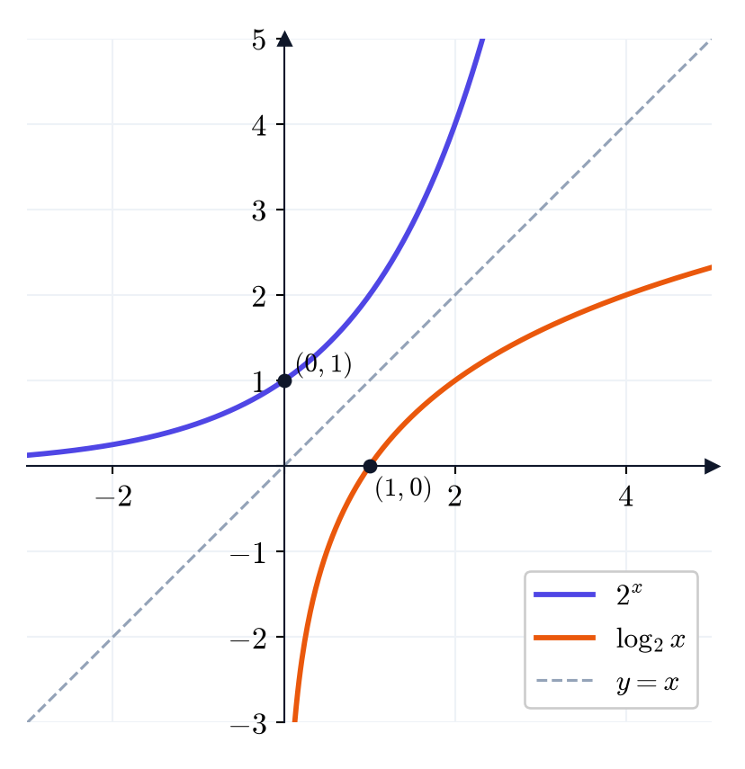
שיטת חישוב — פתרון משוואות מעריכיות ולוגריתמיות.
משוואה מעריכית:
- מבודדים את החזקה \(a^{(\dots)}\) בצד אחד.
- מפעילים \(\log_a\) על שני האגפים, ומשתמשים ב-\(.\log_a\left(a^u\right) = u\) (אם יש שני בסיסים שונים, בוחרים אחד מהם ומשתמשים בחוק (ג).)
- פותרים.
משוואה לוגריתמית: מבודדים את הלוגריתם, מעלים את הבסיס בחזקת שני האגפים, פותרים, ובודקים שהפתרון בתחום ההגדרה.
דוגמה 1.12.3 — חישובים ומשוואות.
(א) חשבו.
\(\log_2 32 =\) \(5\), \(\log_{10} 0.001 =\) \(-3\), \(\log_9 3 =\) \(\frac{1}{2}\)
כדי לחשב לוגריתם, שואלים “באיזו חזקה צריך להעלות את הבסיס”:
- \(,\log_2 32 = 5\) כי \(.2^5 = 32\)
- \(,\log_{10} 0.001 = -3\) כי \(.10^{-3} = \frac{1}{1000} = 0.001\)
- \(,\log_9 3 = \frac{1}{2}\) כי \(.9^{1/2} = \sqrt{9} = 3\)
(ב) חשבו.
\(\log_3 54 - \log_3 2 =\) \(3\)
לפי חוק (ב): \[\begin{aligned} \log_3 54 - \log_3 2 &= \log_3\frac{54}{2} \\ &= \log_3 27 \\ &= 3 \end{aligned}\] כי \(.3^3 = 27\)
(ג) פרקו את \(\log_2\frac{x^3}{\sqrt{y}}\) (עבור \(x, y > 0\)) לסכום והפרש של כפולות של \(\log_2 x\) ושל \(.\log_2 y\)(בשדה: log_2(x).)
\(\log_2\frac{x^3}{\sqrt{y}} =\) \(3\log_2 x - \tfrac{1}{2}\log_2 y\)
\[\begin{aligned} \log_2\frac{x^3}{\sqrt{y}} &= \log_2\left(x^3\right) - \log_2\left(\sqrt{y}\right) \\ &= \log_2\left(x^3\right) - \log_2\left(y^{1/2}\right) \\ &= 3\log_2 x - \tfrac{1}{2}\log_2 y \end{aligned}\] בשורה הראשונה השתמשנו בחוק (ב), ובשלישית בחוק (ג).
(ד) פתרו את \(.\log_2 x = 3\)
העלו את \(2\) בחזקת שני האגפים. מה זה \(?2^{\log_2 x}\)
פתרון. \[\begin{aligned} \log_2 x &= 3 \\ x &= 2^3 \\ x &= 8 \end{aligned}\] בשורה השנייה העלינו את \(2\) בחזקת שני האגפים, כי \(.2^{\log_2 x} = x\)
\(x =\) \(8\)
בדיקה: \(,8 > 0\) ואכן \(.\log_2 8 = 3\)
(ה) פתרו את \(.2^{2x - 1} = 7\) (לוגריתם לפי בסיס \(2\) כותבים log_2, למשל log_2(7).)
הפעילו \(\log_2\) על שני האגפים. מה זה \(?\log_2\left(2^{2x - 1}\right)\)
פתרון. \[\begin{aligned} 2^{2x - 1} &= 7 \\ 2x - 1 &= \log_2 7 \\ 2x &= 1 + \log_2 7 \\ x &= \frac{1 + \log_2 7}{2} \end{aligned}\]
\(x =\) \(\frac{1 + \log_2 7}{2}\)
(ו) פתרו את \(.5 \cdot 2^x = 40\)
קודם בודדו את החזקה \(,2^x\) ואז כתבו את \(8\) כחזקה של \(.2\)
פתרון. \[\begin{aligned} 5 \cdot 2^x &= 40 \\ 2^x &= 8 \\ 2^x &= 2^3 \\ x &= 3 \end{aligned}\] חילקנו ב-\(,5\) כתבנו \(8 = 2^3\) והשווינו מעריכים (הפעלת \(\log_2\) על שני האגפים).
\(x =\) \(3\)
(ז) פתרו את \(.2^x = 3^{x - 1}\)
יש כאן שני בסיסים. בחרו אחד מהם, למשל \(,2\) והפעילו \(\log_2\) על שני האגפים. באגף ימין תצטרכו את חוק (ג).
מפעילים \(\log_2\): \[\begin{aligned} \log_2\left(2^x\right) &= \log_2\left(3^{x - 1}\right) \\ x &= (x - 1)\log_2 3 \end{aligned}\]
פותחים סוגריים ומעבירים אגפים: \[\begin{aligned} x &= x\log_2 3 - \log_2 3 \\ \log_2 3 &= x\log_2 3 - x \end{aligned}\]
מוציאים את \(x\) כגורם משותף ומחלקים: \[\begin{aligned} \log_2 3 &= x(\log_2 3 - 1) \\ x &= \frac{\log_2 3}{\log_2 3 - 1} \end{aligned}\]
\(x =\) \(\frac{\log_2 3}{\log_2 3 - 1}\)
(ח) מצאו את תחום ההגדרה של \(y = \log_2(x - 3) + 1\) ותארו את הגרף.
תחום ההגדרה: \((3, \infty)\) האסימפטוטה האנכית: \(x =\) \(3\)
מה שבתוך הלוגריתם חייב להיות חיובי: \[\begin{aligned} x - 3 &> 0 \\ x &> 3 \end{aligned}\] הגרף הוא הגרף של \(\log_2 x\) אחרי הזזה ימינה ב-\(3\) ולמעלה ב-\(,1\) והאסימפטוטה האנכית עוברת מ-\(x = 0\) ל-\(.x = 3\)
חשוב לזכור — הלוגריתם סופר ספרות.
\(\log_{10} x\) מודד את מספר הספרות של \(:x\) לכל מספר בעל \(4\) ספרות (מ-\(1000\) עד \(9999\)), \(\log_{10} x\) נמצא בין \(3\) ל-\(.4\) למשל \(\log_{10} 1000 = 3\) ו-\(.\log_{10} 4500 \approx 3.65\) הלוגריתם גדל לאט מאוד: כדי שיגדל ב-\(1\), צריך להכפיל את \(x\) פי \(.10\)
בדיקה עצמית.
כמה ספרות יש למספר \(?2^{100}\) (היעזרו ב-\(.\log_{10} 2 \approx 0.301\))
לפי חוק (ג): \[\begin{aligned} \log_{10}\left(2^{100}\right) &= 100 \log_{10} 2 \\ &\approx 100 \cdot 0.301 \\ &= 30.1 \end{aligned}\] הלוגריתם נמצא בין \(30\) ל-\(,31\) כמו שלמספר בן \(4\) ספרות הלוגריתם בין \(3\) ל-\(.4\) לכן ל-\(2^{100}\) יש \(31\) ספרות, בלי לחשב אותו!
חזקות ושורשים
הגדרה 1.12.4 — פונקציית חזקה.
פונקציית חזקה היא פונקציה מהצורה \(f(x) = x^n\) עבור \(n\) טבעי.
- אם \(n\) זוגי, הגרף נראה כמו \(x^2\): הפונקציה זוגית, ואינה חד-חד-ערכית.
- אם \(n\) אי-זוגי, הגרף נראה כמו \(x^3\): הפונקציה אי-זוגית, וחד-חד-ערכית.
השורש הוא הפונקציה ההפוכה של החזקה. כאן נפגוש שוב את הבעיה של חד-חד-ערכיות:
הגדרה 1.12.5 — פונקציית שורש.
- אם \(n\) אי-זוגי, \(x^n\) חד-חד-ערכית על כל \(,\mathbb{R}\) וההפוכה שלה \(\sqrt[n]{x}\) מוגדרת לכל \(x\) ממשי. למשל \(.\sqrt[3]{-8} = -2\)
- אם \(n\) זוגי, מצמצמים את \(x^n\) ל-\(,[0, \infty)\) ולכן \(\sqrt[n]{x}\) מוגדרת רק עבור \(,x \ge 0\) ותמיד \(.\sqrt[n]{x} \ge 0\)
חשוב לזכור — שורש הוא חזקה.
\(,\sqrt[n]{x} = x^{1/n}\) ולכן כל חוקי החזקות חלים גם על שורשים. למשל \[.\sqrt{x} \cdot \sqrt[3]{x} = x^{1/2} \cdot x^{1/3} = x^{\frac{1}{2} + \frac{1}{3}} = x^{5/6}\]
שימו לב — שורש ומשוואה.
למשוואה \(x^2 = 9\) יש שני פתרונות, \(,\pm 3\) אבל \(\sqrt{9} = 3\) בלבד: השורש הוא פונקציה, ולכן מחזיר ערך אחד. מאותה סיבה \(.\sqrt{x^2} = |x|\)
בדיקה עצמית.
מהו \(?\sqrt[3]{-27}\)
\(,(-3)^3 = -27\) ולכן \(.\sqrt[3]{-27} = -3\) שורש אי-זוגי מוגדר גם למספרים שליליים. רק שורש זוגי, כמו \(,\sqrt{-27}\) אינו מוגדר.
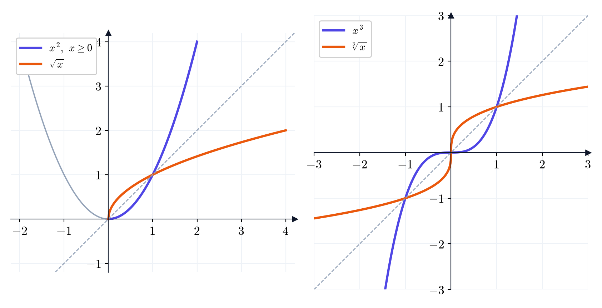
פונקציות רציונליות
חילוק הוא פעולה בסיסית, ולכן אחרי הפולינומים באה המשפחה הבאה: מנות של פולינומים.
הגדרה 1.12.6 — פונקציה רציונלית.
פונקציה רציונלית היא מנה של שני פולינומים, \(.R(x) = \frac{P(x)}{Q(x)}\) תחום ההגדרה שלה הוא כל ה-\(x\) שעבורם \(.Q(x) \neq 0\)
שתי הדוגמאות הבסיסיות:
- \(\frac{1}{x}\) אי-זוגית. ככל ש-\(x\) מתקרב ל-\(0\), הערך גדל מאוד בערכו המוחלט: הישר \(x = 0\) הוא אסימפטוטה אנכית. ככל ש-\(x\) גדל, הערך מתקרב ל-\(0\): הישר \(y = 0\) הוא אסימפטוטה אופקית.
- \(\frac{1}{x^2}\) זוגית ותמיד חיובית, עם אותן אסימפטוטות.
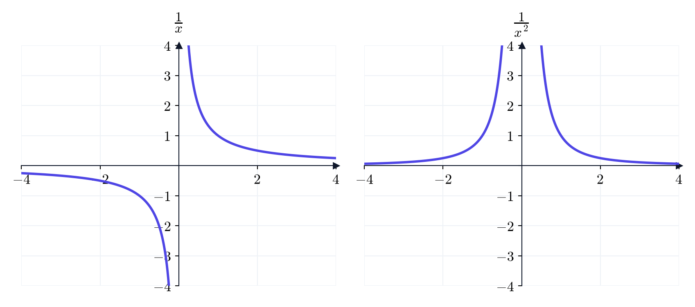
שיטת חישוב — תחום הגדרה של פונקציה רציונלית.
מוצאים את השורשים של המכנה (בשיטות של פולינומים), ומוציאים אותם מ-\(.\mathbb{R}\) הנקודות האלה הן המועמדות להיות אסימפטוטות אנכיות.
דוגמה 1.12.7 — פונקציות רציונליות.
(א) מצאו את תחום ההגדרה של \(.\frac{x + 1}{x^2 - 4}\)
תחום ההגדרה: \(\mathbb{R} \setminus \{-2, 2\}\)
נמצא את השורשים של המכנה: \[\begin{aligned} x^2 - 4 &= 0 \\ (x - 2)(x + 2) &= 0 \\ x &= \pm 2 \end{aligned}\]
(ב) איך מתקבל הגרף של \(\frac{1}{x - 2} + 3\) מהגרף של \(?\frac{1}{x}\) איפה האסימפטוטות?
האסימפטוטה האנכית: \(x =\) \(2\) והאופקית: \(y =\) \(3\)
שני שינויים: בתוך השבר \(,x - 2\) ולכן הזזה ימינה ב-\(;2\) מחוץ לשבר \(,+3\) ולכן הזזה למעלה ב-\(.3\) האסימפטוטות של \(\frac{1}{x}\) הן \(x = 0\) ו-\(,y = 0\) ואחרי ההזזה הן \(x = 2\) ו-\(.y = 3\) תחום ההגדרה: \(.\mathbb{R} \setminus \{2\}\)
שימו לב — צמצום משנה את תחום ההגדרה.
הפונקציה \(\frac{x^2 - 1}{x - 1}\) אינה אותה פונקציה כמו \(.x + 1\) אמנם \[,\frac{x^2 - 1}{x - 1} = \frac{(x - 1)(x + 1)}{x - 1} = x + 1\] אבל רק עבור \(:x \neq 1\) ב-\(x = 1\) הפונקציה המקורית אינה מוגדרת. הגרף שלה הוא ישר עם “חור” בנקודה \(.(1, 2)\)
הפונקציות הטריגונומטריות ההפוכות
לפעמים יודעים את הערך של \(\sin\) ומחפשים את הזווית: איזו זווית \(\theta\) מקיימת \(?\sin\theta = \frac{1}{2}\) איזו מקיימת \(?\tan\theta = 1\) לשם כך משתמשים בפונקציות הטריגונומטריות ההפוכות. גם להן אין נוסחה בעזרת פעולות מוכרות, ולכן הן קיבלו שמות משלהן.
שימו לב — הבעיה, והפתרון.
\(\sin\), \(\cos\) ו-\(\tan\) אינן חד-חד-ערכיות. למשל, ל-\(\sin\theta = \frac{1}{2}\) יש אינסוף פתרונות: \(,\frac{\pi}{6}\) \(,\frac{5\pi}{6}\) \(\frac{\pi}{6} + 2\pi\) ועוד. הפתרון זהה לזה של \(x^2\) ו-\(:\sqrt{x}\) מצמצמים כל פונקציה לקטע שבו היא חד-חד-ערכית, ושבו היא עדיין מקבלת את כל הערכים שלה.
הגדרה 1.12.8 — הפונקציות הטריגונומטריות ההפוכות.
- \(\sin\) מצומצמת לקטע \(\left[-\frac{\pi}{2}, \frac{\pi}{2}\right]\), וההפוכה שלה היא \(.\arcsin : [-1, 1] \to \left[-\frac{\pi}{2}, \frac{\pi}{2}\right]\)
- \(\cos\) מצומצמת לקטע \([0, \pi]\), וההפוכה שלה היא \(.\arccos : [-1, 1] \to [0, \pi]\)
- \(\tan\) מצומצמת לקטע \(\left(-\frac{\pi}{2}, \frac{\pi}{2}\right)\), וההפוכה שלה היא \(.\arctan : \mathbb{R} \to \left(-\frac{\pi}{2}, \frac{\pi}{2}\right)\)
כלומר, \(\arcsin y\) היא הזווית בקטע \(\left[-\frac{\pi}{2}, \frac{\pi}{2}\right]\) שהסינוס שלה הוא \(y\), וכך גם לשתי האחרות.
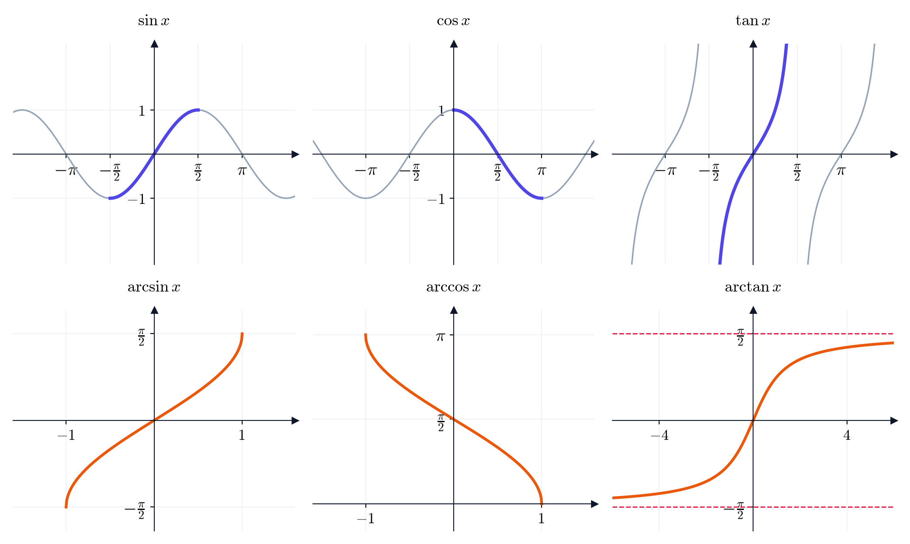
משפט 1.12.9 — כמה כללים.
(א) \(\sin(\arcsin x) = x\) לכל \(.x \in [-1, 1]\)
(ב) \(\arcsin(\sin x) = x\) רק עבור \(.x \in \left[-\frac{\pi}{2}, \frac{\pi}{2}\right]\)
(ג) \(\arcsin\) ו-\(\arctan\) אי-זוגיות.
(ד) \(.\arcsin x + \arccos x = \frac{\pi}{2}\)
(ה) \(\arctan\) חסומה: כאשר \(x\) גדל, \(\arctan x\) מתקרבת ל-\(,\frac{\pi}{2}\) וכאשר \(x\) קטן, היא מתקרבת ל-\(.{-}\frac{\pi}{2}\) אלה האסימפטוטות האופקיות שלה.
דוגמה 1.12.10 — חישובים.
חשבו. (את \(\pi\) כותבים pi או בכפתור.)
(א) \(\arcsin\frac{1}{2} =\) \(\frac{\pi}{6}\)
הסבר לסעיף (א)
מחפשים זווית בקטע \(\left[-\frac{\pi}{2}, \frac{\pi}{2}\right]\) שהסינוס שלה \(.\frac{1}{2}\) ראינו ש-\(,\sin\frac{\pi}{6} = \frac{1}{2}\) ו-\(\frac{\pi}{6}\) בקטע, ולכן \(.\arcsin\frac{1}{2} = \frac{\pi}{6}\) גם \(\sin\frac{5\pi}{6} = \frac{1}{2}\), אבל \(\frac{5\pi}{6}\) אינו בקטע, ולכן אינו התשובה.
(ב) \(\arccos(-1) =\) \(\pi\)
הסבר לסעיף (ב)
מחפשים זווית ב-\([0, \pi]\) שהקוסינוס שלה \(.{-}1\) מכיוון ש-\(,\cos\pi = -1\) התשובה היא \(.\pi\)
(ג) \(\arctan 1 =\) \(\frac{\pi}{4}\)
הסבר לסעיף (ג)
מחפשים זווית ב-\(\left(-\frac{\pi}{2}, \frac{\pi}{2}\right)\) שהטנגנס שלה \(.1\) מכיוון ש-\(,\tan\frac{\pi}{4} = \frac{\sin(\pi/4)}{\cos(\pi/4)} = 1\) התשובה היא \(.\frac{\pi}{4}\)
(ד) מהו \(?\arcsin(\sin\pi)\) (זהירות, מלכודת.)
נחשב מבפנים החוצה: \[\begin{aligned} \arcsin(\sin\pi) &= \arcsin 0 \\ &= 0 \end{aligned}\] והתוצאה אינה \(.\pi\) זו בדיוק ההסתייגות בכלל (ב): \(\pi\) אינו בקטע \(.\left[-\frac{\pi}{2}, \frac{\pi}{2}\right]\)
שימו לב — טעויות נפוצות.
- \(\arcsin 2\) אינו מוגדר: הסינוס לעולם אינו גדול מ-\(1\), ולכן תחום ההגדרה של \(\arcsin\) הוא \(.[-1, 1]\)
- הסימון \(\sin^{-1} x\) פירושו \(,\arcsin x\) ולא \(.\frac{1}{\sin x}\)
סיכום.
- \(\log_a x\) הוא החזקה שבה מעלים את \(a\) כדי לקבל \(.x\) מוגדר רק עבור \(.x > 0\) הלוגריתם הופך כפל לחיבור, וחזקה לכפל.
- משוואה מעריכית: מבודדים את החזקה ומפעילים \(.\log\) משוואה לוגריתמית: מעלים בחזקה, ובודקים את תחום ההגדרה.
- שורש זוגי מוגדר רק למספרים אי-שליליים ותמיד אי-שלילי; שורש אי-זוגי מוגדר לכל מספר.
- פונקציה רציונלית אינה מוגדרת בשורשי המכנה. צמצום אינו מחזיר את הנקודות שהוצאו.
- \(,\arcsin\) \(\arccos\) ו-\(\arctan\) נותנות זווית, בקטעים \(,\left[-\frac{\pi}{2}, \frac{\pi}{2}\right]\) \([0, \pi]\) ו-\(\left(-\frac{\pi}{2}, \frac{\pi}{2}\right)\) בהתאמה.
תרגילים
שאלה 1.12.11 — מחשבים לוגריתמים.
(א) \(\log_5 125 =\) \(3\)
(ב) \(\log_2\frac{1}{8} =\) \(-3\)
(ג) \(\log_7 1 =\) \(0\)
(ד) \(\log_4 2 =\) \(\frac{1}{2}\)
(ה) \(3^{\log_3 11} =\) \(11\)
שואלים: באיזו חזקה צריך להעלות את הבסיס כדי לקבל את המספר?
(א) \(.5^3 = 125\) (ב) \(.2^{-3} = \frac{1}{8}\) (ג) \(.7^0 = 1\) (ד) \(.4^{1/2} = \sqrt{4} = 2\) (ה) הלוגריתם והמעריכית מבטלים זה את זה.
שאלה 1.12.12 — חוקי הלוגריתמים.
(א) \(\log_2 40 - \log_2 5 =\) \(3\)
(ב) \(\log_6 4 + \log_6 9 =\) \(2\)
(ג) \(2\log_3 6 - \log_3 4 =\) \(2\)
חברו קודם ללוגריתם אחד בעזרת חוקים (א)–(ג), ורק אחר כך חשבו.
(א) \(.\log_2\frac{40}{5} = \log_2 8 = 3\) (ב) \(.\log_6(4 \cdot 9) = \log_6 36 = 2\)
(ג) \[\begin{aligned} 2\log_3 6 - \log_3 4 &= \log_3 36 - \log_3 4 \\ &= \log_3 9 = 2 \end{aligned}\]
שאלה 1.12.13 — משוואות מעריכיות ולוגריתמיות.
פתרו כל סעיף צעד אחר צעד. במשוואה מעריכית מפעילים \(\log\) על שני האגפים; במשוואה לוגריתמית מעלים את הבסיס בחזקת שני האגפים. (לוגריתם לפי בסיס \(3\) כותבים log_3, למשל log_3(20).)
(א) \(3^x = 20\)
פתרון. \[\begin{aligned} 3^x &= 20 \\ x &= \log_3 20 \end{aligned}\] הפעלנו \(\log_3\) על שני האגפים.
\(x =\) \(\log_3 20\)
ערך מספרי בעזרת החלפת בסיס: \(,x = \frac{\log_{10} 20}{\log_{10} 3} \approx \frac{1.301}{0.477} \approx 2.73\) וזה סביר, כי \(3^2 = 9 < 20 < 27 = 3^3\).
(ב) \(\log_3 x = 4\)
פתרון. \[\begin{aligned} \log_3 x &= 4 \\ x &= 3^4 \\ x &= 81 \end{aligned}\] העלינו את \(3\) בחזקת שני האגפים.
\(x =\) \(81\)
(ג) \(\log_2(x + 1) = 3\)
פתרון. \[\begin{aligned} \log_2(x + 1) &= 3 \\ x + 1 &= 2^3 \\ x + 1 &= 8 \\ x &= 7 \end{aligned}\] העלינו את \(2\) בחזקת שני האגפים, חישבנו, וחיסרנו \(.1\)
\(x =\) \(7\)
(ד) \(2^{x + 1} = 5\)
פתרון. \[\begin{aligned} 2^{x + 1} &= 5 \\ x + 1 &= \log_2 5 \\ x &= \log_2 5 - 1 \end{aligned}\] הפעלנו \(\log_2\) על שני האגפים, וחיסרנו \(.1\)
\(x =\) \(\log_2 5 - 1\)
שאלה 1.12.14 — לא לשכוח את תחום ההגדרה.
פתרו את \(.\log_2 x + \log_2(x - 2) = 3\)
חברו את שני הלוגריתמים בעזרת חוק (א), ובסוף בדקו כל פתרון: מה שבתוך כל לוגריתם חייב להיות חיובי.
חוק (א): \(,\log_2\big(x(x - 2)\big) = 3\) ולכן \(.x(x - 2) = 2^3 = 8\)
פותרים: \(,x^2 - 2x - 8 = 0\) כלומר \(,(x - 4)(x + 2) = 0\) ולכן \(x = 4\) או \(.x = -2\)
בודקים: עבור \(x = -2\) הביטוי \(\log_2(-2)\) אינו מוגדר, ולכן \(-2\) אינו פתרון. עבור \(x = 4\): \(.\log_2 4 + \log_2 2 = 2 + 1 = 3\)
קבוצת הפתרונות: \(\{4\}\)
שאלה 1.12.15 — תחום הגדרה של לוגריתם.
(א) \(\log_2(4 - x^2)\): \((-2, 2)\)
(ב) \(\log_2(x - 5)\): \((5, \infty)\)
(ג) \(\log_3(9 - x)\): \((-\infty, 9)\)
(ד) \(\log_{10}(x^2 - 1)\): \((-\infty, -1) \cup (1, \infty)\)
מה שבתוך הלוגריתם חייב להיות חיובי (לא רק אי-שלילי).
(א) \[\begin{aligned} 4 - x^2 &> 0 \\ x^2 &< 4 \\ -2 &< x < 2 \end{aligned}\] (בשורה האחרונה: \(x^2 < 4\) פירושו \(,|x| < 2\) כלומר המרחק של \(x\) מ-\(0\) קטן מ-\(2\).)
(ב) \(.x > 5\) (ג) \(.x < 9\) (ד) \(,x^2 > 1\) כלומר \(,|x| > 1\) ולכן \(x > 1\) או \(.x < -1\)
שאלה 1.12.16 — שורשים.
(א) \(\sqrt[3]{-125} =\) \(-5\)
(ב) \(16^{1/4} =\) \(2\)
(ג) תחום ההגדרה של \(\sqrt[3]{x - 1}\) הוא \(\mathbb{R}\)
(ד) תחום ההגדרה של \(\sqrt[4]{2 - x}\) הוא \((-\infty, 2]\)
(ה) תחום ההגדרה של \(\sqrt{x - 4} + \sqrt[3]{x}\) הוא \([4, \infty)\)
שורש אי-זוגי מוגדר לכל מספר; שורש זוגי רק למספרים אי-שליליים.
(א) \(.(-5)^3 = -125\) (ב) \(.2^4 = 16\) (ג) שורש שלישי (אי-זוגי) מוגדר לכל מספר, ולכן אין שום דרישה.
(ד) \[\begin{aligned} 2 - x &\ge 0 \\ 2 &\ge x \end{aligned}\] (ה) רק השורש הריבועי דורש משהו: \(.x - 4 \ge 0\)
שאלה 1.12.17 — פונקציות רציונליות.
(א) תחום ההגדרה של \(\frac{x}{x^2 - 5x + 6}\) הוא \(\mathbb{R} \setminus \{2, 3\}\)
(ב) תחום ההגדרה של \(\frac{x + 3}{x^2 + x - 6}\) הוא \(\mathbb{R} \setminus \{-3, 2\}\)
(ג) האסימפטוטות של \(2 + \frac{1}{x + 4}\) הן \(x =\) \(-4\) ו-\(y =\) \(2\)
(א) נמצא את השורשים של המכנה בנוסחת השורשים, עם \(,a = 1\) \(b = -5\) ו-\(:c = 6\) \[\begin{aligned} \Delta &= (-5)^2 - 4 \cdot 1 \cdot 6 = 25 - 24 = 1 \\ x &= \frac{5 \pm 1}{2} \end{aligned}\] כלומר \(x = 3\) או \(.x = 2\) (ואכן \(.x^2 - 5x + 6 = (x - 2)(x - 3)\))
(ב) \(,x^2 + x - 6 = (x + 3)(x - 2)\) ולכן מוציאים את \(-3\) ואת \(.2\) שימו לב: גם אם \(x + 3\) מצטמצם, הנקודה \(-3\) נשארת מחוץ לתחום.
(ג) הזזה של \(\frac{1}{x}\) שמאלה ב-\(4\) ולמעלה ב-\(.2\)
שאלה 1.12.18 — הפונקציות הטריגונומטריות ההפוכות.
חשבו. (שורש כותבים sqrt, ו-\(\pi\) כותבים pi.)
(א) \(\arccos\frac{1}{2} =\) \(\frac{\pi}{3}\)
(ב) \(\arctan(-1) =\) \(-\frac{\pi}{4}\)
(ג) \(\arcsin\left(-\frac{1}{2}\right) =\) \(-\frac{\pi}{6}\)
(ד) \(\arccos\left(-\frac{1}{2}\right) =\) \(\frac{2\pi}{3}\)
(ה) \(\arctan\sqrt{3} =\) \(\frac{\pi}{3}\)
(ו) \(\arcsin\left(\sin\frac{5\pi}{6}\right) =\) \(\frac{\pi}{6}\)
(ז) \(\cos\left(\arcsin\frac{3}{5}\right) =\) \(\frac{4}{5}\)
בכל סעיף מחפשים זווית בקטע הנכון: \(\left[-\frac{\pi}{2}, \frac{\pi}{2}\right]\) ל-\(,\arcsin\) \([0, \pi]\) ל-\(\arccos\) ו-\(\left(-\frac{\pi}{2}, \frac{\pi}{2}\right)\) ל-\(.\arctan\)
ב-(ז): נסמן \(.\theta = \arcsin\frac{3}{5}\) אז \(\sin\theta = \frac{3}{5}\) ו-\(\theta\) בקטע שבו הקוסינוס אינו שלילי. השתמשו בזהות פיתגורס.
(א) \(\cos\frac{\pi}{3} = \frac{1}{2}\) ו-\(.\frac{\pi}{3} \in [0, \pi]\) (ב) \(\arctan\) אי-זוגית: \(.\arctan(-1) = -\arctan 1 = -\frac{\pi}{4}\)
(ג) \(\arcsin\) אי-זוגית: \(.\arcsin\left(-\frac{1}{2}\right) = -\frac{\pi}{6}\) (ד) \(\cos\frac{2\pi}{3} = -\frac{1}{2}\) ו-\(.\frac{2\pi}{3} \in [0, \pi]\) (ה) \(.\tan\frac{\pi}{3} = \sqrt{3}\)
(ו) מבפנים החוצה: \(,\sin\frac{5\pi}{6} = \frac{1}{2}\) ו-\(.\arcsin\frac{1}{2} = \frac{\pi}{6}\)
(ז) \[\begin{aligned} \cos\theta &= \sqrt{1 - \sin^2\theta} \\ &= \sqrt{1 - \tfrac{9}{25}} = \tfrac{4}{5} \end{aligned}\] לקחנו את השורש החיובי, כי \(\theta \in \left[-\frac{\pi}{2}, \frac{\pi}{2}\right]\) ושם \(.\cos\theta \ge 0\)